Exodus
Read each chapter first, then work through Jim’s questions for that chapter. His wording is unchanged, including punctuation and typographical quirks.
Exodus Historical Back Ground
1. The history of Egypt before the Exodus.
Ancient Egypt stretched a distance of about 550 miles from Aswan (ancient Syene), the first cataract on the Nile, northward to the Mediterranean Sea. This area included the narrow Nile Valley (from Aswan to Memphis) and the Delta, the broad triangle from Memphis to the sea. South of Aswan was the ancient land of Cush. The name "Egypt" is from Greek (Aigyptos) and Latin (Aegyptus), forms of the ancient Ha-ku-ptah, an earlier name for Memphis, the capital city just north of Cairo. When Memphis was the capital, foreigners used it as a designation for the entire nation. The native population referred to it as Ta-meri ("the beloved land") or Kemet ("the black country," a name reflective of the fertile soil along the Nile).
Ancient Egypt's history is divided by scholars into three periods: predynastic (ca. 3500-3100 b.c.), protodynastic (ca. 3100-2686 b.c.), and dynastic (2686-332 b.c.). In the predynastic period an agricultural population along the Nile progressively became more sedentary. The emerging civilizations of Upper (southern) and Lower (northern) Egypt were united by Narmer, the first Pharaoh of Upper Egypt, thus marking the beginning of the protodynastic period. This period included Egypt's first two dynasties.
The dynastic period from 2686 to the conquest of Egypt by Alexander the Great in 332 included 29 dynasties. Dynasties 3-6 (ca. 2686-2181 b.c.) were characterized by rapid progress in culture and technology. In those years, called the Old Kingdom period, the great pyramids were constructed, and the Pharaohs ruled from Memphis with a strong absolutist government. The First Intermediate Period (dynasties 7-11; 2181-1991) was a time of decline. Then came the Middle Kingdom (dynasty 12; ca. 1991-1786) in which the nation enlarged its borders with the capital at Thebes. Centralized rule was reestablished under Amenemhet I, founder of the flourishing 12th dynasty.
The 12th dynasty was Egypt's golden age of art and craftsmanship, in which her prosperity was restored. In this affluent era Joseph emerged as prime minister of Egypt, and Jacob and his sons sojourned in Egypt (1876 b.c., Gen. 46:6).
Then came the Second Intermediate Period (ca. 1786-1567), comprising dynasties 13-17. In the 13th and 14th dynasties Egypt declined. In the 15th and 16th dynasties Egypt was subjugated and ruled by the Hyksos, a people of mixed Semitic-Asiatic descent. Because of superior military technology, the Hyksos—using iron chariots and Asiatic bows—dominated the land for a century and a half from Avaris in the Nile Delta. The Hyksos were gradually displaced beginning about 1600 when Seqenenre II, prince of Thebes, rebelled. The history of Jacob's descendants during the Hyksos period is obscure (cf. Unger, Archaeology and the Old Testament, pp. 130-5).
Under Ahmose I of Thebes the New Empire period (ca. 1567-1220; dynasties 18-19) commenced, resulting in one of the most brilliant periods in Egyptian history. Egypt emerged as an international power and extended her influence beyond the Euphrates River. During the 18th dynasty the events of the Book of Exodus took place. This was a time when a new wave of Egyptian nationalism had supplanted the older Hyksos tolerance of foreigners. The Egyptians embarked on empire-building as a means of defense, pushing their borders into Palestine.
Apparently not wanting to eradicate the Semitic population already settled in Egypt, the Egyptian
1 Pharaohs used them as slave labor for building defense projects and royal palaces.
2. The history of Egypt near the time of the Exodus.
Amenhotep I ruled in the newly centralized government from 1546 to 1526 (actually begun by his father Ahmose I) and was succeeded by Thutmose I (who ruled ca. 1526-1512). Moses was born (ca. 1526) in this king's reign (or at the end of the reign of Amenhotep I). This king's famous daughter, Hatshepsut, may have been the royal princess who discovered Moses along the Nile. When Thutmose II (1512-1504) died, Thutmose III was very young. So his stepmother, Hatshepsut, contrived to make herself ruler starting in 1503. (Thutmose III is considered king from 1504 to 1482 though Hatshepsut "co-reigned" with him to 1482.)
During Hatshepsut's brilliant reign Egypt experienced prosperity. In these years Moses spent his youth in the royal court. After Hatshepsut's death in 1428 Thutmose III ruled alone till 1450. Thutmose III liquidated the entire royal court and attempted to obliterate Hatshepsut's name from monuments in the land. At that time Moses probably found the court of Egypt inhospitable and fled to Midian. Thutmose III became a powerful kingdom builder, extending his empire to include Syria.
Thutmose III was succeeded by Amenhotep II (1450-1425), the Pharaoh of the Exodus (1446). Unlike his warring father, Amenhotep II seems to have suffered military reverses because he was not able to carry out extensive campaigns. His weak war efforts may have resulted from the loss of all or most of his chariots, in the waters of the Sea of Reeds. The so-called "Dream Stela" of Thutmose IV records that the god Har-em-akht told the young prince in a dream that someday he would be king. If Thutmose IV had been the eldest son, proof of his throne-right would have been unnecessary. It is logical, therefore, to assume that he was a younger son, not the oldest son, of Amenhotep II. This accords with the statement in Exodus 12:29 that the eldest son of Pharaoh died the night of Israel's first Passover.
Thus Thutmose III was the Pharaoh of the oppression and Amenhotep II was the Pharaoh of the Exodus. Egyptian history after the New Empire Period and up to Greek rule included the late New Kingdom (dynasty 20, ca. 1200-1085) and the Third Intermediate Period (1085-663 b.c.; dynasties 21-25) and the Late Period (663-332 b.c.; dynasties 26-31).
3. The site of the Exodus.
The route Israel followed out of Egypt has occasioned much debate. Complicating the issue has been the inaccurate translation of the Hebrew yâm sûp as Red Sea instead of Sea of (Papyrus) Reeds. The area is somewhere between the Gulf of Suez and the Mediterranean Sea, along the line of the present Suez Canal where there are many marshy lagoons and lakes.
Two views are held as to the possible site of the Exodus. The "northern view" places the Exodus at a lagoon bordering the Mediterranean Sea, and the "southern (or 'central') view" places the Exodus south of Succoth near Lake Balah or Lake Timsah. God led the Israelites away from the well-traveled and fortified trade route that progressed northward ("the road through the Philistine country, though that was shorter," 13:17) into the desert to avoid contact with Egyptian militia. The northern view assumes that Mount Sinai is in the vicinity of Kadesh Barnea. The evidence,
2 however, favors the placement of the Sinai in the peninsula's southern portion.
The Israelites left Rameses and traveled to Succoth, about 30 miles southeast (Ex. 12:37; Num. 33:5). Near Succoth, the Israelites were miraculously delivered from Amenhotep II's chariot army. Also favoring the "southern view" is the fact that the Desert of Shur (Ex. 15:22), where Israel went after crossing the Reed Sea, is directly east of Succoth. Another factor is that Lake Balah and Lake Timsah can be affected by strong east winds in the way described in 14:21. (See the map "Possible Route of the Exodus," near Num. 33:1-5.)
The Bible Knowledge Commentary: An Exposition of the Scriptures by Dallas Seminary Faculty.
3
Exodus
John D. Hannah, B.S., Th.M., Th.D., Ph.D.
Introduction
Contents:
Title.
Author.
Date.
Purpose and Themes.
Title.
The name of the second book in the Hebrew Bible is we(cid:40)çlleh šemôt(cid:70) ("these are the names"), the first phrase in the book. Sometimes it is shortened to šemôt(cid:70) ("names"). The English title Exodus ("a going out") transliterates the title in the Septuagint, which named the book for its central focus, the departure of the Israelites from Egypt. However, the book covers more than that event. The departure from Egypt is described in 13:17-15:21, but the book also describes the circumstances of Jacob's family before the Exodus, the journey from Egypt to Sinai, and some of the events that Israel experienced there.
Author.
Evangelicals believe that the book was written by Moses sometime during his stay near Mount Sinai or shortly thereafter. Support for this view is that the Bible explicitly witnesses to this fact.
The Bible clearly states that Moses had the ability to have undertaken such a task ("Moses was educated in all the wisdom of the Egyptians," Acts 7:22).
The Book of Exodus explicitly verifies Mosaic authorship. God commanded Moses to write the events of Joshua's military encounter with the Amalekites ("Write this on a scroll," Ex. 17:14). Also Moses wrote the communication the Lord gave him on Sinai ("Moses then wrote down everything the Lord had said," 24:4). This recording was called "the Book of the Covenant" (24:7). On Mount Sinai the Lord told Moses, "Write down these words" (34:27) and Moses "wrote on the tablets the words of the covenant" (34:28).
Statements in other portions of the Pentateuch also verify Mosaic authorship.
According to Deuteronomy 31:9, "Moses wrote down this Law [for]... the priests." The statement in Deuteronomy 31:24 is clear; "Moses finished writing in a book the words of this Law from beginning to end."
Other books of the Old Testament witness to the Mosaic authorship of Exodus.
David charged Solomon to obey God's "laws and requirements, as written in the Law of Moses" (1 Kings 2:3). Ezra read from "the Book of the Law of Moses" (Neh. 8:1). Also the Pentateuch is called "the Book of Moses" (Neh. 13:1).
Jesus accepted the Mosaic authorship of Exodus. Jesus introduced a quotation of Exodus 20:12 and 21:17 with the words "Moses said" (Mark 7:10) and a quotation
1 of Exodus 3:6 by the words "Have you not read in the Book of Moses" (Mark 12:26).
1. The date of the Exodus.
Some scholars date the Exodus in the 13th century b.c. (ca. 1290, in the reign of Rameses II) while others date it in the 15th century b.c. (1446, in the reign of Amenhotep II).
Support for the early date comes from the biblical record and archeological evidence. First, in 1 Kings 6:1 the time between the Exodus and the beginning of Solomon's temple construction (in the fourth year of his reign) was 480 years.
Since the fourth year of Solomon's reign was 966 b.c., the Exodus was in 1446.
Also in the time of Jephthah (ca. 1100 b.c.) Israel had been in the land for 300 years (Judges 11:26). Therefore 300 years plus the 40 years of the wilderness sojourn and some time to conquer Heshbon places the Exodus in the middle of the 15th century.
Second, archeological evidence from Egypt during this period corresponds with the biblical account of the Exodus (see Merrill F. Unger, Archaeology and the Old Testament. Grand Rapids: Zondervan Publishing House, 1954, pp. 140-5; and Gleason L. Archer, Jr., A Survey of Old Testament Introduction. Chicago: Moody Press, 1964, pp. 215-6). For example, though Thutmose IV succeeded his father, Amenhotep II, Thutmose was not the eldest son. (The eldest son was killed by the Lord on the night of the first Passover, Ex. 12:29.) Amenhotep II (1450-1425 b.c.) repressed insurgents in the early part of his reign. Semites were forced to make bricks (cf. 5:7-18). Several of the Pharaohs of Egypt's 18th dynasty (ca.
1567-1379 b.c.) were involved in building projects in northern Egypt. "Since Eighteenth Dynasty Pharaohs were very active in Palestinian campaigns, it would seem reasonable that they would have established garrisons and store cities (cf.
1:11) somewhere in the Delta regions to facilitate movement between
Syro-Palestinian sites and Egypt itself" (John J. Davis, Moses and the Gods of Egypt, p. 27).
Third, events in Palestine about 1400 b.c. correspond with the Conquest under Joshua. Archeological evidence suggests that Jericho, Ai, and Hazor were destroyed about 1400. One scholar has concluded, "All the accredited Palestinian artifactual evidence supports the literary account that the Conquest occurred at the time specifically dated by the biblical historians" (Bruce K. Waltke, "Palestinian Artifactual Evidence Supporting the Early Date of the Exodus," Bibliotheca Sacra 129. January-March, 1972:47).
2. The date of Jacob's entrance into Egypt.
If the date of the Exodus is 1446 b.c. then certain biblical notations help establish other important dates. Since the duration of the wilderness sojourn was "430 years
2 to the very day" (Ex. 12:40-42), Jacob moved to Egypt in 1876. (See the chart "Chronology of the Patriarchs," near Gen. 47:28-31.)
3. The date of the writing of the Book of Exodus.
The journey from Egypt to the Sinai wilderness took exactly three months (Ex.
19:1-2). It would seem logical that Moses composed the book during or shortly after the encampment at Sinai (1446 b.c.). Thus the book covers events that occurred sometime before Moses' birth in 1526 (chap. 2) to the events surrounding Mount Sinai (1446).
Purpose and Themes.
The central events in the Book of Exodus are the miraculous deliverance of Israel from Egyptian bondage and God's establishing the theocratic nation under Moses by means of a new "constitution," the Mosaic Covenant (19:3-19). Unger notes, "The aim of the Book of Exodus centers in the great experience of redemption and the constitution of Jacob's posterity as a theocratic nation at Mount Sinai. God, connected heretofore with the Israelites only through His covenant with Abraham, confirmed to Isaac and Jacob, now brings them to Himself nationally through redemption. As the Chosen People through whom the Redeemer was to come Jehovah also places them under the Mosaic Covenant and dwells among them under the cloud of glory" (Introductory Guide to the Old Testament. Grand Rapids: Zondervan Publishing House, 1951, p. 196).
Thus the Book of Exodus is a connecting link between the origin of the people in God's promise to Abraham (Gen. 12:2) and the beginning of the theocratic kingdom under Moses. The people of promise were miraculously redeemed from servitude and placed under the Mosaic Covenant so that they might become "a holy nation" (Ex. 19:6), an avenue of blessing to the Gentiles (Gen. 12:3; cf. "a light for the Gentiles," Isa. 42:6). The Book of Exodus, then, stresses redemption and consecration.
3
Charts, maps, and diagrams
These are Jim’s study visuals. Hole-punch marks, phantom scan lines, and page-edge artifacts have been cleaned; the drawings themselves are unchanged.
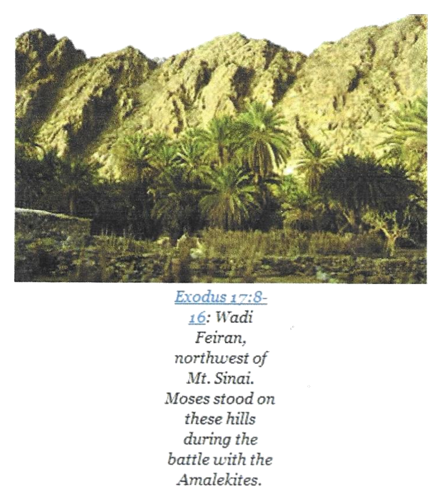
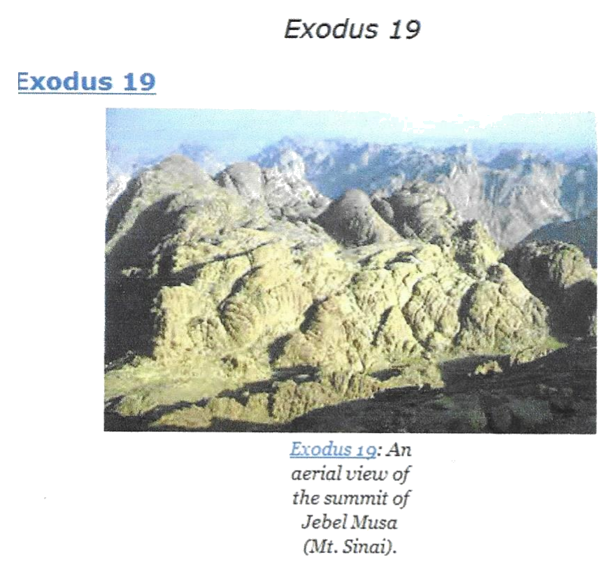
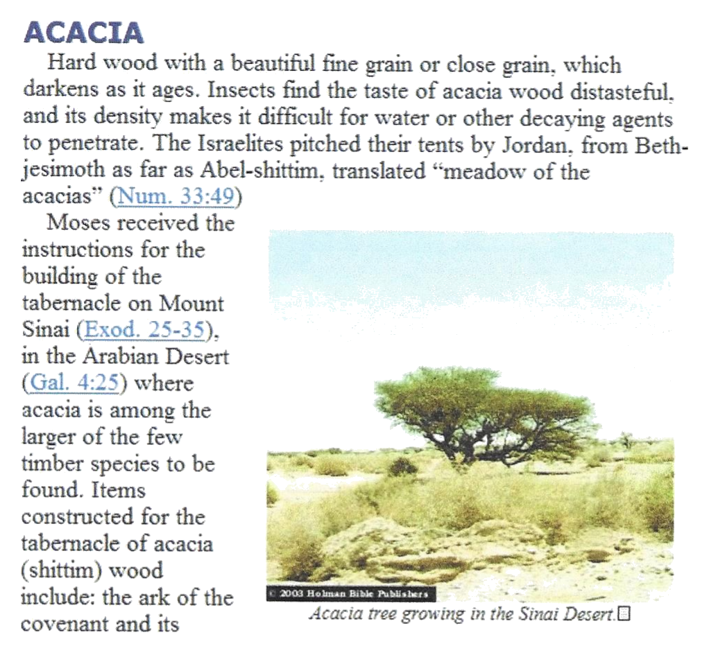
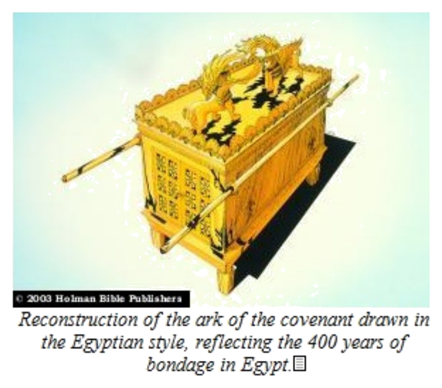
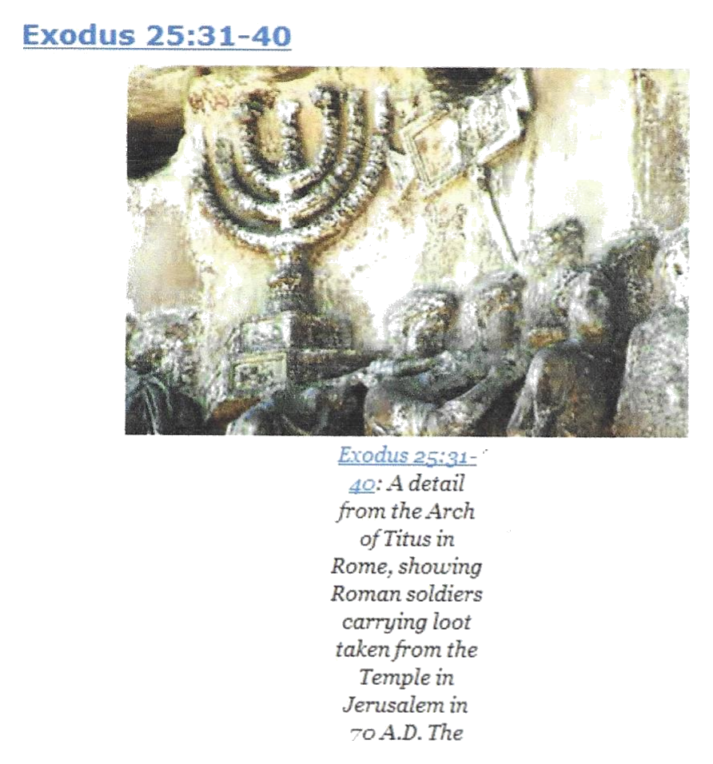
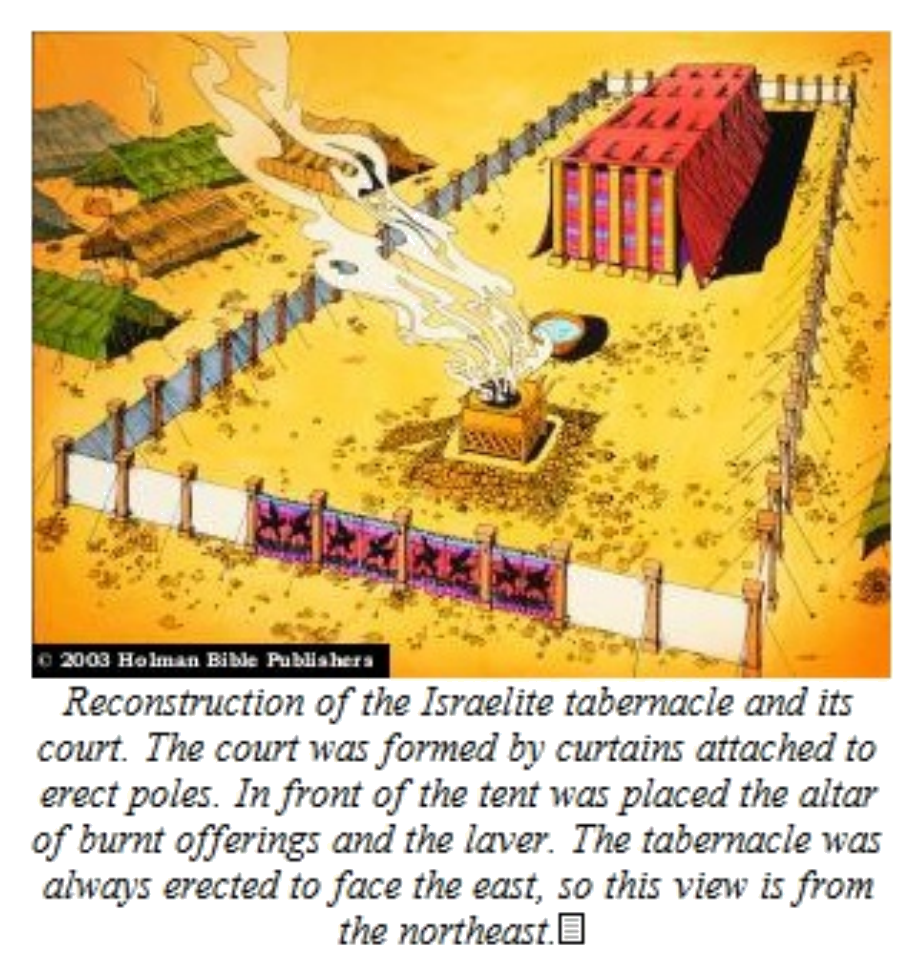
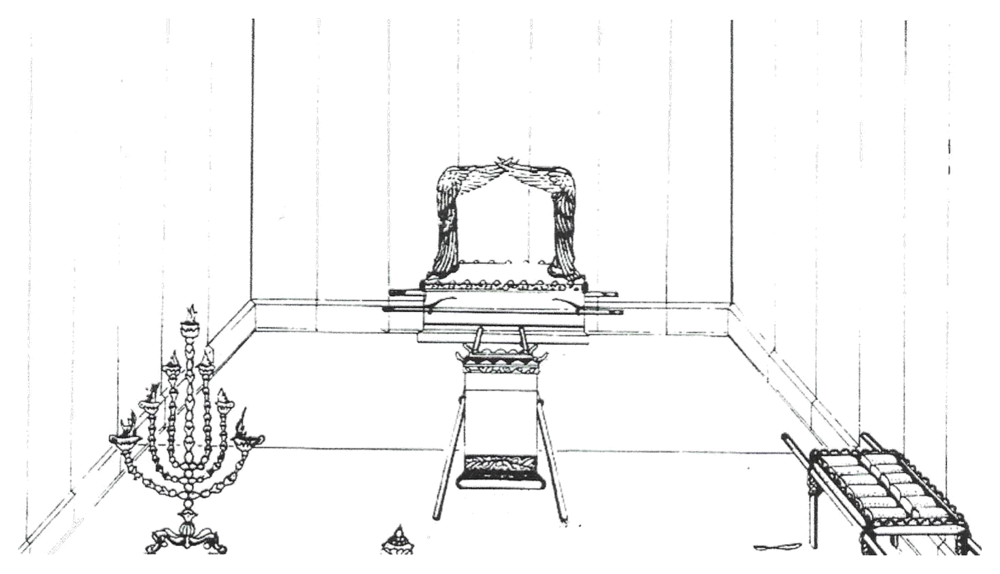
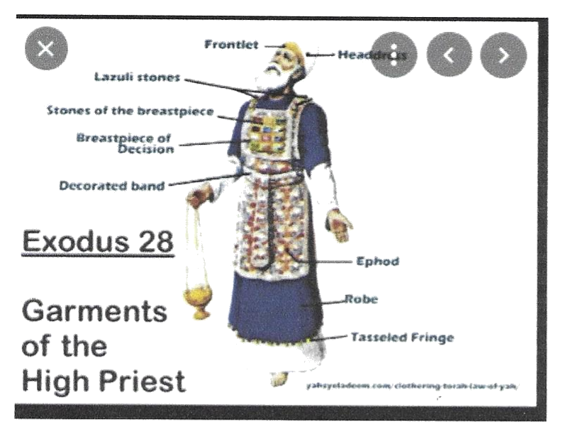
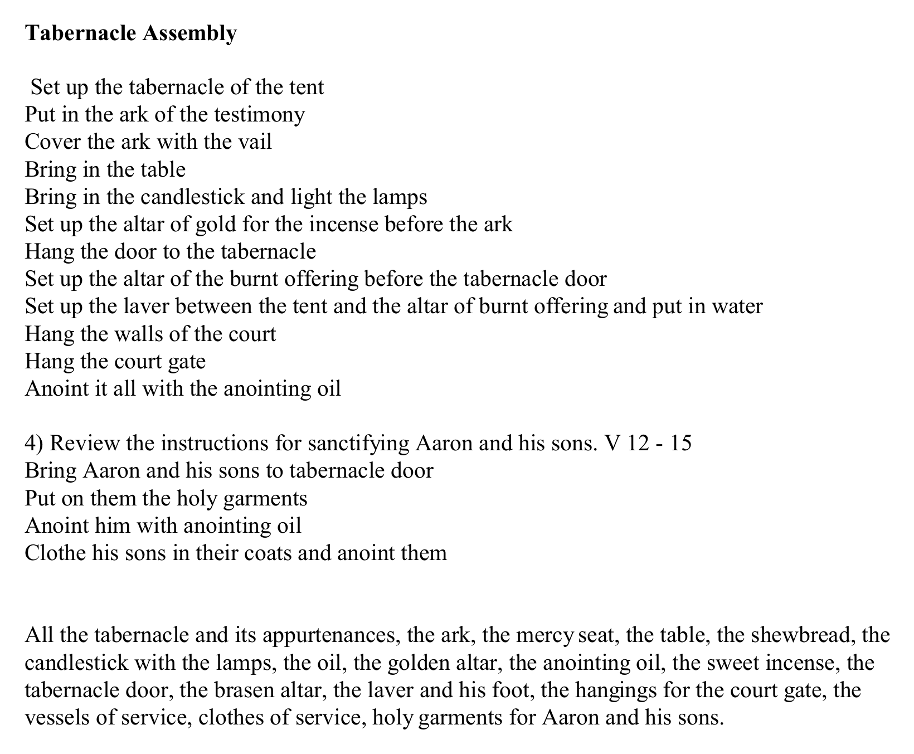
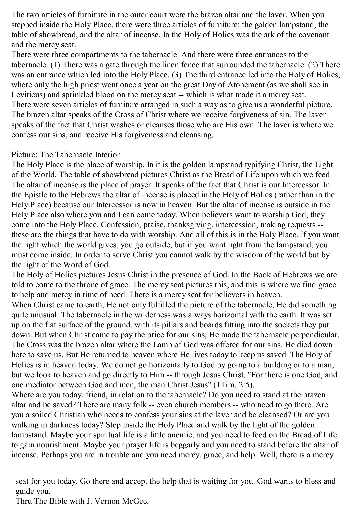
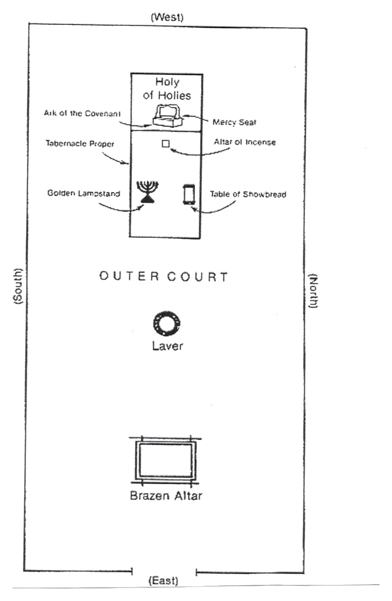
Chapter 1
Exodus Packet 1
Exodus 1 (King James Version)
1Now these are the names of the children of Israel, which came into Egypt; every man and his household came with Jacob. 2Reuben, Simeon, Levi, and Judah, 3Issachar, Zebulun, and Benjamin, 4Dan, and Naphtali, Gad, and Asher. 5And all the souls that came out of the loins of Jacob were seventy souls: for Joseph was in Egypt already. 6And Joseph died, and all his brethren, and all that generation. 7And the children of Israel were fruitful, and increased abundantly, and multiplied, and waxed exceeding mighty; and the land was filled with them. 8Now there arose up a new king over Egypt, which knew not Joseph. 9And he said unto his people, Behold, the people of the children of Israel are more and mightier than we: 10Come on, let us deal wisely with them; lest they multiply, and it come to pass, that, when there falleth out any war, they join also unto our enemies, and fight against us, and so get them up out of the land. 11Therefore they did set over them taskmasters to afflict them with their burdens. And they built for Pharaoh treasure cities, Pithom and Raamses. 12But the more they afflicted them, the more they multiplied and grew. And they were grieved because of the children of Israel. 13And the Egyptians made the children of Israel to serve with rigour: 14And they made their lives bitter with hard bondage, in morter, and in brick, and in all manner of service in the field: all their service, wherein they made them serve, was with rigour. 15And the king of Egypt spake to the Hebrew midwives, of which the name of the one was Shiphrah, and the name of the other Puah: 16And he said, When ye do the office of a midwife to the Hebrew women, and see them upon the stools; if it be a son, then ye shall kill him: but if it be a daughter, then she shall live. 17But the midwives feared God, and did not as the king of Egypt commanded them, but saved the men children alive. 18And the king of Egypt called for the midwives, and said unto them, Why have ye done this thing, and have saved the men children alive? 19And the midwives said unto Pharaoh, Because the Hebrew women are not as the Egyptian women; for they are lively, and are delivered ere the midwives come in unto them. 20Therefore God dealt well with the midwives: and the people multiplied, and waxed very mighty. 21And it came to pass, because the midwives feared God, that he made them houses. 22And Pharaoh charged all his people, saying, Every son that is born ye shall cast into the river, and every daughter ye shall save alive.Jim’s questions
-
1)Name the children of Israel who came to Egypt? V 1
Exodus 1:1 (KJV) 1 Now these are the names of the children of Israel, which came into Egypt; every man and his household came with Jacob.Answer:
-
2)What happened to all that generation? V 6
Exodus 1:6 (KJV) 6 And Joseph died, and all his brethren, and all that generation.Answer:
-
3)Did they increase abundantly? V 7
Exodus 1:7 (KJV) 7 And the children of Israel were fruitful, and increased abundantly, and multiplied, and waxed exceeding mighty; and the land was filled with them.Answer:
-
4)The new King, who knew not Joseph, had some fears. What were the fears? V 9 - 10
Exodus 1:9-10 (KJV) 9 And he said unto his people, Behold, the people of the children of Israel are more and mightier than we: 10 Come on, let us deal wisely with them; lest they multiply, and it come to pass, that, when there falleth out any war, they join also unto our enemies, and fight against us, and so get them up out of the land.Answer:
-
5)What was his remedy? V 11
Exodus 1:11 (KJV) 11 Therefore they did set over them taskmasters to afflict them with their burdens. And they built for Pharaoh treasure cities, Pithom and Raamses.Answer:
-
6)Did it work and what happened? V 12
Exodus 1:12 (KJV) 12 But the more they afflicted them, the more they multiplied and grew. And they were grieved because of the children of Israel.Answer:
-
7)What did the Egyptians have the Israelites doing? V 14
Exodus 1:14 (KJV) 14 And they made their lives bitter with hard bondage, in morter, and in brick, and in all manner of service in the field: all their service, wherein they made them serve, was with rigour.Answer:
-
8)What was the king’s orders in respect to new born babies? V 15 - 16
Exodus 1:15-16 (KJV) 15 And the king of Egypt spake to the Hebrew midwives, of which the name of the one was Shiphrah, and the name of the other Puah: 16 And he said, When ye do the office of a midwife to the Hebrew women, and see them upon the stools; if it be a son, then ye shall kill him: but if it be a daughter, then she shall live.Answer:
-
9)What excuse did the midwives have for not killing the boy babies? V 19
Exodus 1:19 (KJV) 19 And the midwives said unto Pharaoh, Because the Hebrew women are not as the Egyptian women; for they are lively, and are delivered ere the midwives come in unto them.Answer:
-
10)Did this please God? V 21
Exodus 1:21 (KJV) 21 And it came to pass, because the midwives feared God, that he made them houses.Answer:
-
11)What did Pharaoh then do? V 22
Exodus 1:22 (KJV) 22 And Pharaoh charged all his people, saying, Every son that is born ye shall cast into the river, and every daughter ye shall save alive.Answer:
Chapter 2
Exodus Packet 2
Exodus 2 (King James Version)
1And there went a man of the house of Levi, and took to wife a daughter of Levi. 2And the woman conceived, and bare a son: and when she saw him that he was a goodly child, she hid him three months. 3And when she could not longer hide him, she took for him an ark of bulrushes, and daubed it with slime and with pitch, and put the child therein; and she laid it in the flags by the river’s brink. 4And his sister stood afar off, to wit what would be done to him. 5And the daughter of Pharaoh came down to wash herself at the river; and her maidens walked along by the river’s side; and when she saw the ark among the flags, she sent her maid to fetch it. 6And when she had opened it, she saw the child: and, behold, the babe wept. And she had compassion on him, and said, This is one of the Hebrews’ children. 7Then said his sister to Pharaoh’s daughter, Shall I go and call to thee a nurse of the Hebrew women, that she may nurse the child for thee? 8And Pharaoh’s daughter said to her, Go. And the maid went and called the child’s mother. 9And Pharaoh’s daughter said unto her, Take this child away, and nurse it for me, and I will give thee thy wages. And the woman took the child, and nursed it. 10And the child grew, and she brought him unto Pharaoh’s daughter, and he became her son. And she called his name Moses: and she said, Because I drew him out of the water. 11And it came to pass in those days, when Moses was grown, that he went out unto his brethren, and looked on their burdens: and he spied an Egyptian smiting an Hebrew, one of his brethren. 12And he looked this way and that way, and when he saw that there was no man, he slew the Egyptian, and hid him in the sand. 13And when he went out the second day, behold, two men of the Hebrews strove together: and he said to him that did the wrong, Wherefore smitest thou thy fellow? 14And he said, Who made thee a prince and a judge over us? intendest thou to kill me, as thou killedst the Egyptian? And Moses feared, and said, Surely this thing is known. 15Now when Pharaoh heard this thing, he sought to slay Moses. But Moses fled from the face of Pharaoh, and dwelt in the land of Midian: and he sat down by a well. 16Now the priest of Midian had seven daughters: and they came and drew water, and filled the troughs to water their father’s flock. 17And the shepherds came and drove them away: but Moses stood up and helped them, and watered their flock. 18And when they came to Reuel their father, he said, How is it that ye are come so soon to day? 19And they said, An Egyptian delivered us out of the hand of the shepherds, and also drew water enough for us, and watered the flock. 20And he said unto his daughters, And where is he? why is it that ye have left the man? call him, that he may eat bread. 21And Moses was content to dwell with the man: and he gave Moses Zipporah his daughter. 22And she bare him a son, and he called his name Gershom: for he said, I have been a stranger in a strange land. 23And it came to pass in process of time, that the king of Egypt died: and the children of Israel sighed by reason of the bondage, and they cried, and their cry came up unto God by reason of the bondage. 24And God heard their groaning, and God remembered his covenant with Abraham, with Isaac, and with Jacob. 25And God looked upon the children of Israel, and God had respect unto them.Jim’s questions
-
1)From what tribe was the man in verse 1? V 1
Exodus 2:1 (KJV) 1 And there went a man of the house of Levi, and took to wife a daughter of Levi.Exodus 2:1 (KJV) 1 And there went a man of the house of Levi, and took to wife a daughter of Levi.Answer:
-
2)What did the mother do with her little boy? V 2 - 3
Exodus 2:2-3 (KJV) 2 And the woman conceived, and bare a son: and when she saw him that he was a goodly child, she hid him three months. 3 And when she could not longer hide him, she took for him an ark of bulrushes, and daubed it with slime and with pitch, and put the child therein; and she laid it in the flags by the river’s brink.Answer:
-
3)Who was watching the basket from far off? V 4
Exodus 2:4 (KJV) 4 And his sister stood afar off, to wit what would be done to him.Answer:
-
4)Who came to the river for a bath? V 5
Exodus 2:5 (KJV) 5 And the daughter of Pharaoh came down to wash herself at the river; and her maidens walked along by the river’s side; and when she saw the ark among the flags, she sent her maid to fetch it.Answer:
-
5)When she opened the basket what did the baby do? V 6
Exodus 2:6 (KJV) 6 And when she had opened it, she saw the child: and, behold, the babe wept. And she had compassion on him, and said, This is one of the Hebrews’ children.Answer:
-
6)What emotion did she show toward the baby? V 6
Exodus 2:6 (KJV) 6 And when she had opened it, she saw the child: and, behold, the babe wept. And she had compassion on him, and said, This is one of the Hebrews’ children.Answer:
-
7)The sister proposes a plan. What was it? V 7
Exodus 2:7 (KJV) 7 Then said his sister to Pharaoh’s daughter, Shall I go and call to thee a nurse of the Hebrew women, that she may nurse the child for thee?Answer:
-
8)Who do they get? V 8
Exodus 2:8 (KJV) 8 And Pharaoh’s daughter said to her, Go. And the maid went and called the child’s mother.Answer:
-
9)What did Pharaohs daughter call the child? V 10
Exodus 2:10 (KJV) 10 And the child grew, and she brought him unto Pharaoh’s daughter, and he became her son. And she called his name Moses: and she said, Because I drew him out of the water.Answer:
-
10)What did the name mean? V 10
Exodus 2:10 (KJV) 10 And the child grew, and she brought him unto Pharaoh’s daughter, and he became her son. And she called his name Moses: and she said, Because I drew him out of the water.Answer:
-
11)Why did Moses kill the Egyptian? V 11 - 12
Exodus 2:11-12 (KJV) 11 And it came to pass in those days, when Moses was grown, that he went out unto his brethren, and looked on their burdens: and he spied an Egyptian smiting an Hebrew, one of his brethren. 12 And he looked this way and that way, and when he saw that there was no man, he slew the Egyptian, and hid him in the sand.Answer:
-
12)When Moses rebukes the Hebrew for hitting a fellow Hebrew what did the man say to him? V 14
Exodus 2:14 (KJV) 14 And he said, Who made thee a prince and a judge over us? intendest thou to kill me, as thou killedst the Egyptian? And Moses feared, and said, Surely this thing is known.Answer:
-
13)To where did Moses flee to escape Pharaoh who planned to kill him? V 15
Exodus 2:15 (KJV) 15 Now when Pharaoh heard this thing, he sought to slay Moses. But Moses fled from the face of Pharaoh, and dwelt in the land of Midian: and he sat down by a well.Answer:
-
14)What did Moses do to meet the daught3ers of Midian. V 15 - 16
Exodus 2:15-16 (KJV) 15 Now when Pharaoh heard this thing, he sought to slay Moses. But Moses fled from the face of Pharaoh, and dwelt in the land of Midian: and he sat down by a well. 16 Now the priest of Midian had seven daughters: and they came and drew water, and filled the troughs to water their father’s flock.Answer:
-
15)What did Midian say to his girls when they told him of the Egyptian who helped them? V 20
Exodus 2:20 (KJV) 20 And he said unto his daughters, And where is he? why is it that ye have left the man? call him, that he may eat bread.Answer:
-
16)What did the name (Gershom), the son of Moses. mean? V 22
Exodus 2:22 (KJV) 22 And she bare him a son, and he called his name Gershom: for he said, I have been a stranger in a strange land.Answer:
-
17)While Moses is gone does it get any better for the Hebrews? V 23
Exodus 2:23 (KJV) 23 And it came to pass in process of time, that the king of Egypt died: and the children of Israel sighed by reason of the bondage, and they cried, and their cry came up unto God by reason of the bondage.Answer:
-
18)Who heard their moaning and what did He remember? V 24 - 25
Exodus 2:24-25 (KJV) 24 And God heard their groaning, and God remembered his covenant with Abraham, with Isaac, and with Jacob. 25 And God looked upon the children of Israel, and God had respect unto them.Answer:
Chapter 3
Exodus Packet 3
Exodus 3 (King James Version)
1Now Moses kept the flock of Jethro his father in law, the priest of Midian: and he led the flock to the backside of the desert, and came to the mountain of God, even to Horeb. 2And the angel of the LORD appeared unto him in a flame of fire out of the midst of a bush: and he looked, and, behold, the bush burned with fire, and the bush was not consumed. 3And Moses said, I will now turn aside, and see this great sight, why the bush is not burnt. 4And when the LORD saw that he turned aside to see, God called unto him out of the midst of the bush, and said, Moses, Moses. And he said, Here am I. 5And he said, Draw not nigh hither: put off thy shoes from off thy feet, for the place whereon thou standest is holy ground. 6Moreover he said, I am the God of thy father, the God of Abraham, the God of Isaac, and the God of Jacob. And Moses hid his face; for he was afraid to look upon God. 7And the LORD said, I have surely seen the affliction of my people which are in Egypt, and have heard their cry by reason of their taskmasters; for I know their sorrows; 8And I am come down to deliver them out of the hand of the Egyptians, and to bring them up out of that land unto a good land and a large, unto a land flowing with milk and honey; unto the place of the Canaanites, and the Hittites, and the Amorites, and the Perizzites, and the Hivites, and the Jebusites. 9Now therefore, behold, the cry of the children of Israel is come unto me: and I have also seen the oppression wherewith the Egyptians oppress them. 10Come now therefore, and I will send thee unto Pharaoh, that thou mayest bring forth my people the children of Israel out of Egypt. 11And Moses said unto God, Who am I, that I should go unto Pharaoh, and that I should bring forth the children of Israel out of Egypt? 12And he said, Certainly I will be with thee; and this shall be a token unto thee, that I have sent thee: When thou hast brought forth the people out of Egypt, ye shall serve God upon this mountain. 13And Moses said unto God, Behold, when I come unto the children of Israel, and shall say unto them, The God of your fathers hath sent me unto you; and they shall say to me, What is his name? what shall I say unto them? 14And God said unto Moses, I AM THAT I AM: and he said, Thus shalt thou say unto the children of Israel, I AM hath sent me unto you. 15And God said moreover unto Moses, Thus shalt thou say unto the children of Israel, The LORD God of your fathers, the God of Abraham, the God of Isaac, and the God of Jacob, hath sent me unto you: this is my name for ever, and this is my memorial unto all generations. 16Go, and gather the elders of Israel together, and say unto them, The LORD God of your fathers, the God of Abraham, of Isaac, and of Jacob, appeared unto me, saying, I have surely visited you, and seen that which is done to you in Egypt: 17And I have said, I will bring you up out of the affliction of Egypt unto the land of the Canaanites, and the Hittites, and the Amorites, and the Perizzites, and the Hivites, and the Jebusites, unto a land flowing with milk and honey. 18And they shall hearken to thy voice: and thou shalt come, thou and the elders of Israel, unto the king of Egypt, and ye shall say unto him, The LORD God of the Hebrews hath met with us: and now let us go, we beseech thee, three days’ journey into the wilderness, that we may sacrifice to the LORD our God. 19And I am sure that the king of Egypt will not let you go, no, not by a mighty hand. 20And I will stretch out my hand, and smite Egypt with all my wonders which I will do in the midst thereof: and after that he will let you go. 21And I will give this people favour in the sight of the Egyptians: and it shall come to pass, that, when ye go, ye shall not go empty: 22But every woman shall borrow of her neighbour, and of her that sojourneth in her house, jewels of silver, and jewels of gold, and raiment: and ye shall put them upon your sons, and upon your daughters; and ye shall spoil the Egyptians.Jim’s questions
-
1)Who owns the sheep Moses is herding? V 1
Exodus 3:1 (KJV) 1 Now Moses kept the flock of Jethro his father in law, the priest of Midian: and he led the flock to the backside of the desert, and came to the mountain of God, even to Horeb.Answer:
-
2)Where is the ‘backside of the desert’ and what it might be like? V 1
Exodus 3:1 (KJV) 1 Now Moses kept the flock of Jethro his father in law, the priest of Midian: and he led the flock to the backside of the desert, and came to the mountain of God, even to Horeb.Answer:
-
3)Who appeared to Moses in the flame of fire in the middle of a bush? V 2
Exodus 3:2 (KJV) 2 And the angel of the Lord appeared unto him in a flame of fire out of the midst of a bush: and he looked, and, behold, the bush burned with fire, and the bush was not consumed.Answer:
-
4)What was unusual about the bush? V 2
Exodus 3:2 (KJV) 2 And the angel of the Lord appeared unto him in a flame of fire out of the midst of a bush: and he looked, and, behold, the bush burned with fire, and the bush was not consumed.Answer:
-
5)What did the Lord say to Moses and what was Moses answer? V 4 .
Exodus 3:4 (KJV) 4 And when the Lord saw that he turned aside to see, God called unto him out of the midst of the bush, and said, Moses, Moses. And he said, Here am I.Answer:
-
6)What was special about the ground that Moses stood on? V 5
Exodus 3:5 (KJV) 5 And he said, Draw not nigh hither: put off thy shoes from off thy feet, for the place whereon thou standest is holy ground.Answer:
-
7)How did the Lord identify Himself ? V 6
Exodus 3:6 (KJV) 6 Moreover he said, I am the God of thy father, the God of Abraham, the God of Isaac, and the God of Jacob. And Moses hid his face; for he was afraid to look upon God.Answer:
-
8)Why did Moses hide his face? V 6
Exodus 3:6 (KJV) 6 Moreover he said, I am the God of thy father, the God of Abraham, the God of Isaac, and the God of Jacob. And Moses hid his face; for he was afraid to look upon God.Answer:
-
9)What is the essence of what God says in Verses 7 to 10?
Exodus 3:7-10 (KJV) 7 And the Lord said, I have surely seen the affliction of my people which are in Egypt, and have heard their cry by reason of their taskmasters; for I know their sorrows; 8 And I am come down to deliver them out of the hand of the Egyptians, and to bring them up out of that land unto a good land and a large, unto a land flowing with milk and honey; unto the place of the Canaanites, and the Hittites, and the Amorites, and the Perizzites, and the Hivites, and the Jebusites. 9 Now therefore, behold, the cry of the children of Israel is come unto me: and I have also seen the oppression wherewith the Egyptians oppress them. 10 Come now therefore, and I will send thee unto Pharaoh, that thou mayest bring forth my people the children of Israel out of Egypt.Answer:
-
10)What is Moses mission? V 10
Exodus 3:10 (KJV) 10 Come now therefore, and I will send thee unto Pharaoh, that thou mayest bring forth my people the children of Israel out of Egypt.Answer:
-
11)Does Moses immediately agree to go? V 11
Exodus 3:11 (KJV) 11 And Moses said unto God, Who am I, that I should go unto Pharaoh, and that I should bring forth the children of Israel out of Egypt?Answer:
-
12)How did God reassure Moses? V 12
Exodus 3:12 (KJV) 12 And he said, Certainly I will be with thee; and this shall be a token unto thee, that I have sent thee: When thou hast brought forth the people out of Egypt, ye shall serve God upon this mountain.Answer:
-
13)What is the purpose of the deliverance? V 12
Exodus 3:12 (KJV) 12 And he said, Certainly I will be with thee; and this shall be a token unto thee, that I have sent thee: When thou hast brought forth the people out of Egypt, ye shall serve God upon this mountain.Answer:
-
14)What is Moses next question? V 13
Exodus 3:13 (KJV) 13 And Moses said unto God, Behold, when I come unto the children of Israel, and shall say unto them, The God of your fathers hath sent me unto you; and they shall say to me, What is his name? what shall I say unto them?Answer:
-
15)And what is God’s answer to that question? V 14
Exodus 3:14 (KJV) 14 And God said unto Moses, I AM THAT I AM: and he said, Thus shalt thou say unto the children of Israel, I AM hath sent me unto you.Answer:
-
16)What else did God say about who He is? V 15
Exodus 3:15 (KJV) 15 And God said moreover unto Moses, Thus shalt thou say unto the children of Israel, The Lord God of your fathers, the God of Abraham, the God of Isaac, and the God of Jacob, hath sent me unto you: this is my name for ever, and this is my memorial unto all generations.Answer:
-
17)To whom is Moses to talk to first? V 16
Exodus 3:16 (KJV) 16 Go, and gather the elders of Israel together, and say unto them, The Lord God of your fathers, the God of Abraham, of Isaac, and of Jacob, appeared unto me, saying, I have surely visited you, and seen that which is done to you in Egypt:Answer:
-
18)Where will God take them after He rescues them? V 17. 1
Exodus 3:17 (KJV) 17 And I have said, I will bring you up out of the affliction of Egypt unto the land of the Canaanites, and the Hittites, and the Amorites, and the Perizzites, and the Hivites, and the Jebusites, unto a land flowing with milk and honey.Answer:
-
19)Briefly what is Moses to speak to the King of Egypt? V 18
Exodus 3:18 (KJV) 18 And they shall hearken to thy voice: and thou shalt come, thou and the elders of Israel, unto the king of Egypt, and ye shall say unto him, The Lord God of the Hebrews hath met with us: and now let us go, we beseech thee, three days’ journey into the wilderness, that we may sacrifice to the Lord our God.Answer:
-
20)Can they expect the king of Egypt to let them go? V 19
Exodus 3:19 (KJV) 19 And I am sure that the king of Egypt will not let you go, no, not by a mighty hand.Answer:
-
21)Briefly tell us what God will then do? V 20
Exodus 3:20 (KJV) 20 And I will stretch out my hand, and smite Egypt with all my wonders which I will do in the midst thereof: and after that he will let you go.Answer:
-
22)What wii be the result of this action? V 20 - 22
Exodus 3:20-22 (KJV) 20 And I will stretch out my hand, and smite Egypt with all my wonders which I will do in the midst thereof: and after that he will let you go. 21 And I will give this people favour in the sight of the Egyptians: and it shall come to pass, that, when ye go, ye shall not go empty: 22 But every woman shall borrow of her neighbour, and of her that sojourneth in her house, jewels of silver, and jewels of gold, and raiment: and ye shall put them upon your sons, and upon your daughters; and ye shall spoil the Egyptians.Answer:
Chapter 4
Exodus Packet 4
Exodus 4 (King James Version)
1And Moses answered and said, But, behold, they will not believe me, nor hearken unto my voice: for they will say, The LORD hath not appeared unto thee. 2And the LORD said unto him, What is that in thine hand? And he said, A rod. 3And he said, Cast it on the ground. And he cast it on the ground, and it became a serpent; and Moses fled from before it. 4And the LORD said unto Moses, Put forth thine hand, and take it by the tail. And he put forth his hand, and caught it, and it became a rod in his hand: 5That they may believe that the LORD God of their fathers, the God of Abraham, the God of Isaac, and the God of Jacob, hath appeared unto thee. 6And the LORD said furthermore unto him, Put now thine hand into thy bosom. And he put his hand into his bosom: and when he took it out, behold, his hand was leprous as snow. 7And he said, Put thine hand into thy bosom again. And he put his hand into his bosom again; and plucked it out of his bosom, and, behold, it was turned again as his other flesh. 8And it shall come to pass, if they will not believe thee, neither hearken to the voice of the first sign, that they will believe the voice of the latter sign. 9And it shall come to pass, if they will not believe also these two signs, neither hearken unto thy voice, that thou shalt take of the water of the river, and pour it upon the dry land: and the water which thou takest out of the river shall become blood upon the dry land. 10And Moses said unto the LORD, O my LORD, I am not eloquent, neither heretofore, nor since thou hast spoken unto thy servant: but I am slow of speech, and of a slow tongue. 11And the LORD said unto him, Who hath made man’s mouth? or who maketh the dumb, or deaf, or the seeing, or the blind? have not I the LORD? 12Now therefore go, and I will be with thy mouth, and teach thee what thou shalt say. 13And he said, O my LORD, send, I pray thee, by the hand of him whom thou wilt send. 14And the anger of the LORD was kindled against Moses, and he said, Is not Aaron the Levite thy brother? I know that he can speak well. And also, behold, he cometh forth to meet thee: and when he seeth thee, he will be glad in his heart. 15And thou shalt speak unto him, and put words in his mouth: and I will be with thy mouth, and with his mouth, and will teach you what ye shall do. 16And he shall be thy spokesman unto the people: and he shall be, even he shall be to thee instead of a mouth, and thou shalt be to him instead of God. 17And thou shalt take this rod in thine hand, wherewith thou shalt do signs. 18And Moses went and returned to Jethro his father in law, and said unto him, Let me go, I pray thee, and return unto my brethren which are in Egypt, and see whether they be yet alive. And Jethro said to Moses, Go in peace. 19And the LORD said unto Moses in Midian, Go, return into Egypt: for all the men are dead which sought thy life. 20And Moses took his wife and his sons, and set them upon an ass, and he returned to the land of Egypt: and Moses took the rod of God in his hand. 21And the LORD said unto Moses, When thou goest to return into Egypt, see that thou do all those wonders before Pharaoh, which I have put in thine hand: but I will harden his heart, that he shall not let the people go. 22And thou shalt say unto Pharaoh, Thus saith the LORD, Israel is my son, even my firstborn: 23And I say unto thee, Let my son go, that he may serve me: and if thou refuse to let him go, behold, I will slay thy son, even thy firstborn. 24And it came to pass by the way in the inn, that the LORD met him, and sought to kill him. 25Then Zipporah took a sharp stone, and cut off the foreskin of her son, and cast it at his feet, and said, Surely a bloody husband art thou to me. 26So he let him go: then she said, A bloody husband thou art, because of the circumcision. 27And the LORD said to Aaron, Go into the wilderness to meet Moses. And he went, and met him in the mount of God, and kissed him. 28And Moses told Aaron all the words of the LORD who had sent him, and all the signs which he had commanded him. 29And Moses and Aaron went and gathered together all the elders of the children of Israel: 30And Aaron spake all the words which the LORD had spoken unto Moses, and did the signs in the sight of the people. 31And the people believed: and when they heard that the LORD had visited the children of Israel, and that he had looked upon their affliction, then they bowed their heads and worshipped.Jim’s questions
-
1)Why is Moses doubtful? V 1
Exodus 4:1 (KJV) 1 And Moses answered and said, But, behold, they will not believe me, nor hearken unto my voice: for they will say, The Lord hath not appeared unto thee.Answer:
-
2)What is God’s solution for all but the most skeptical? V 2 - 8
Exodus 4:2-8 (KJV) 2 And the Lord said unto him, What is that in thine hand? And he said, A rod. 3 And he said, Cast it on the ground. And he cast it on the ground, and it became a serpent; and Moses fled from before it. 4 And the Lord said unto Moses, Put forth thine hand, and take it by the tail. And he put forth his hand, and caught it, and it became a rod in his hand: 5 That they may believe that the Lord God of their fathers, the God of Abraham, the God of Isaac, and the God of Jacob, hath appeared unto thee. 6 And the Lord said furthermore unto him, Put now thine hand into thy bosom. And he put his hand into his bosom: and when he took it out, behold, his hand was leprous as snow. 7 And he said, Put thine hand into thy bosom again. And he put his hand into his bosom again; and plucked it out of his bosom, and, behold, it was turned again as his other flesh. 8 And it shall come to pass, if they will not believe thee, neither hearken to the voice of the first sign, that they will believe the voice of the latter sign.Answer:
-
3)What is the solution for the hard case believers? V 9
Exodus 4:9 (KJV) 9 And it shall come to pass, if they will not believe also these two signs, neither hearken unto thy voice, that thou shalt take of the water of the river, and pour it upon the dry land: and the water which thou takest out of the river shall become blood upon the dry land.Answer:
-
4)The next excuse and God’s answer? V 10 - 12
Exodus 4:10-12 (KJV) 10 And Moses said unto the Lord, O my Lord, I am not eloquent, neither heretofore, nor since thou hast spoken unto thy servant: but I am slow of speech, and of a slow tongue. 11 And the Lord said unto him, Who hath made man’s mouth? or who maketh the dumb, or deaf, or the seeing, or the blind? have not I the Lord? 12 Now therefore go, and I will be with thy mouth, and teach thee what thou shalt say.Answer:
-
5)What is the final solution? V 14 - 16
Exodus 4:14-16 (KJV) 14 And the anger of the Lord was kindled against Moses, and he said, Is not Aaron the Levite thy brother? I know that he can speak well. And also, behold, he cometh forth to meet thee: and when he seeth thee, he will be glad in his heart. 15 And thou shalt speak unto him, and put words in his mouth: and I will be with thy mouth, and with his mouth, and will teach you what ye shall do. 16 And he shall be thy spokesman unto the people: and he shall be, even he shall be to thee instead of a mouth, and thou shalt be to him instead of God.Answer:
-
6)How was Jethro related to Moses? V 18
Exodus 4:18 (KJV) 18 And Moses went and returned to Jethro his father in law, and said unto him, Let me go, I pray thee, and return unto my brethren which are in Egypt, and see whether they be yet alive. And Jethro said to Moses, Go in peace.Answer:
-
7)What had happened to all the men who sought to kill Moses? V 19.
Exodus 4:19 (KJV) 19 And the Lord said unto Moses in Midian, Go, return into Egypt: for all the men are dead which sought thy life.Answer:
-
8)Who did he take with him to Egypt? V 20.
Exodus 4:20 (KJV) 20 And Moses took his wife and his sons, and set them upon an ass, and he returned to the land of Egypt: and Moses took the rod of God in his hand.Answer:
-
9)Even though Pharaoh shall see all of Moses miracles will he let the people go? V 21
Exodus 4:21 (KJV) 21 And the Lord said unto Moses, When thou goest to return into Egypt, see that thou do all those wonders before Pharaoh, which I have put in thine hand: but I will harden his heart, that he shall not let the people go.Answer:
-
10)Briefly repeat God’s message to Pharaoh when Pharaoh refuses to let the people go. V 22 - 23
Exodus 4:22-23 (KJV) 22 And thou shalt say unto Pharaoh, Thus saith the Lord, Israel is my son, even my firstborn: 23 And I say unto thee, Let my son go, that he may serve me: and if thou refuse to let him go, behold, I will slay thy son, even thy firstborn.Answer:
-
11)What was the problem between Moses and Zipporah? V 24 - 26
Exodus 4:24-26 (KJV) 24 And it came to pass by the way in the inn, that the Lord met him, and sought to kill him. 25 Then Zipporah took a sharp stone, and cut off the foreskin of her son, and cast it at his feet, and said, Surely a bloody husband art thou to me. 26 So he let him go: then she said, A bloody husband thou art, because of the circumcision.Answer:
-
12)What did the Lord tell Aaron? V 27
Exodus 4:27 (KJV) 27 And the Lord said to Aaron, Go into the wilderness to meet Moses. And he went, and met him in the mount of God, and kissed him.Answer:
-
13)What did Moses tell Aaron? V 28
Exodus 4:28 (KJV) 28 And Moses told Aaron all the words of the Lord who had sent him, and all the signs which he had commanded him.Answer:
-
14)What happened to the people when they heard the words and signs? V 29 - 30
Exodus 4:29-30 (KJV) 29 And Moses and Aaron went and gathered together all the elders of the children of Israel: 30 And Aaron spake all the words which the Lord had spoken unto Moses, and did the signs in the sight of the people.Answer:
Chapter 5
Exodus Packet 5
Exodus 5 (King James Version)
1And afterward Moses and Aaron went in, and told Pharaoh, Thus saith the LORD God of Israel, Let my people go, that they may hold a feast unto me in the wilderness. 2And Pharaoh said, Who is the LORD, that I should obey his voice to let Israel go? I know not the LORD, neither will I let Israel go. 3And they said, The God of the Hebrews hath met with us: let us go, we pray thee, three days’ journey into the desert, and sacrifice unto the LORD our God; lest he fall upon us with pestilence, or with the sword. 4And the king of Egypt said unto them, Wherefore do ye, Moses and Aaron, let the people from their works? get you unto your burdens. 5And Pharaoh said, Behold, the people of the land now are many, and ye make them rest from their burdens. 6And Pharaoh commanded the same day the taskmasters of the people, and their officers, saying, 7Ye shall no more give the people straw to make brick, as heretofore: let them go and gather straw for themselves. 8And the tale of the bricks, which they did make heretofore, ye shall lay upon them; ye shall not diminish ought thereof: for they be idle; therefore they cry, saying, Let us go and sacrifice to our God. 9Let there more work be laid upon the men, that they may labour therein; and let them not regard vain words. 10And the taskmasters of the people went out, and their officers, and they spake to the people, saying, Thus saith Pharaoh, I will not give you straw. 11Go ye, get you straw where ye can find it: yet not ought of your work shall be diminished. 12So the people were scattered abroad throughout all the land of Egypt to gather stubble instead of straw. 13And the taskmasters hasted them, saying, Fulfil your works, your daily tasks, as when there was straw. 14And the officers of the children of Israel, which Pharaoh’s taskmasters had set over them, were beaten, and demanded, Wherefore have ye not fulfilled your task in making brick both yesterday and to day, as heretofore? 15Then the officers of the children of Israel came and cried unto Pharaoh, saying, Wherefore dealest thou thus with thy servants? 16There is no straw given unto thy servants, and they say to us, Make brick: and, behold, thy servants are beaten; but the fault is in thine own people. 17But he said, Ye are idle, ye are idle: therefore ye say, Let us go and do sacrifice to the LORD. 18Go therefore now, and work; for there shall no straw be given you, yet shall ye deliver the tale of bricks. 19And the officers of the children of Israel did see that they were in evil case, after it was said, Ye shall not minish ought from your bricks of your daily task. 20And they met Moses and Aaron, who stood in the way, as they came forth from Pharaoh: 21And they said unto them, The LORD look upon you, and judge; because ye have made our savour to be abhorred in the eyes of Pharaoh, and in the eyes of his servants, to put a sword in their hand to slay us. 22And Moses returned unto the LORD, and said, LORD, wherefore hast thou so evil entreated this people? why is it that thou hast sent me? 23For since I came to Pharaoh to speak in thy name, he hath done evil to this people; neither hast thou delivered thy people at all.Jim’s questions
-
1)What is the content of Pharaoh’s answer to Moses first attempt? V 1 - 2
Exodus 5:1-2 (KJV) 1 And afterward Moses and Aaron went in, and told Pharaoh, Thus saith the Lord God of Israel, Let my people go, that they may hold a feast unto me in the wilderness. 2 And Pharaoh said, Who is the Lord, that I should obey his voice to let Israel go? I know not the Lord, neither will I let Israel go.Answer:
-
2)They were only asking for three days. How did Pharaoh react? V 3 - 5
Exodus 5:3-5 (KJV) 3 And they said, The God of the Hebrews hath met with us: let us go, we pray thee, three days’ journey into the desert, and sacrifice unto the Lord our God; lest he fall upon us with pestilence, or with the sword. 4 And the king of Egypt said unto them, Wherefore do ye, Moses and Aaron, let the people from their works? get you unto your burdens. 5 And Pharaoh said, Behold, the people of the land now are many, and ye make them rest from their burdens.Answer:
-
3)Pharaoh gets nasty. What did he do? V 6 - 9
Exodus 5:6-9 (KJV) 6 And Pharaoh commanded the same day the taskmasters of the people, and their officers, saying, 7 Ye shall no more give the people straw to make brick, as heretofore: let them go and gather straw for themselves. 8 And the tale of the bricks, which they did make heretofore, ye shall lay upon them; ye shall not diminish ought thereof: for they be idle; therefore they cry, saying, Let us go and sacrifice to our God. 9 Let there more work be laid upon the men, that they may labour therein; and let them not regard vain words.Answer:
-
4)What did the taskmasters say to the people? V 10 - 11
Exodus 5:10-11 (KJV) 10 And the taskmasters of the people went out, and their officers, and they spake to the people, saying, Thus saith Pharaoh, I will not give you straw. 11 Go ye, get you straw where ye can find it: yet not ought of your work shall be diminished.Answer:
-
5)What was the result? V 12
Exodus 5:12 (KJV) 12 So the people were scattered abroad throughout all the land of Egypt to gather stubble instead of straw.Answer:
-
6)What happened to the officers when brick production slowed down? V 14
Exodus 5:14 (KJV) 14 And the officers of the children of Israel, which Pharaoh’s taskmasters had set over them, were beaten, and demanded, Wherefore have ye not fulfilled your task in making brick both yesterday and to day, as heretofore?Answer:
-
7)What does Pharaoh say to the complaints of the officers? V 15 - 18
Exodus 5:15-18 (KJV) 15 Then the officers of the children of Israel came and cried unto Pharaoh, saying, Wherefore dealest thou thus with thy servants? 16 There is no straw given unto thy servants, and they say to us, Make brick: and, behold, thy servants are beaten; but the fault is in thine own people. 17 But he said, Ye are idle, ye are idle: therefore ye say, Let us go and do sacrifice to the Lord. 18 Go therefore now, and work; for there shall no straw be given you, yet shall ye deliver the tale of bricks.Answer:
-
8)What does the King James Bible mean when it says they were in an evil case? V 19
Exodus 5:19 (KJV) 19 And the officers of the children of Israel did see that they were in evil case, after it was said, Ye shall not minish ought from your bricks of your daily task.Answer:
-
9)Who do they blame? V 21
Exodus 5:21 (KJV) 21 And they said unto them, The Lord look upon you, and judge; because ye have made our savour to be abhorred in the eyes of Pharaoh, and in the eyes of his servants, to put a sword in their hand to slay us.Answer:
-
10)Who does Moses blame? V 22 - 23
Exodus 5:22-23 (KJV) 22 And Moses returned unto the Lord, and said, Lord, wherefore hast thou so evil entreated this people? why is it that thou hast sent me? 23 For since I came to Pharaoh to speak in thy name, he hath done evil to this people; neither hast thou delivered thy people at all.Answer:
-
Thought question – Who is really to blame for persecution of the Israelites?
Verse needed — thought or personal question with no verse number on the packet; no single verse could be determined.
Answer:
Chapter 6
Exodus Packet 6
Exodus 6 (King James Version)
1Then the LORD said unto Moses, Now shalt thou see what I will do to Pharaoh: for with a strong hand shall he let them go, and with a strong hand shall he drive them out of his land. 2And God spake unto Moses, and said unto him, I am the LORD: 3And I appeared unto Abraham, unto Isaac, and unto Jacob, by the name of God Almighty, but by my name JEHOVAH was I not known to them. 4And I have also established my covenant with them, to give them the land of Canaan, the land of their pilgrimage, wherein they were strangers. 5And I have also heard the groaning of the children of Israel, whom the Egyptians keep in bondage; and I have remembered my covenant. 6Wherefore say unto the children of Israel, I am the LORD, and I will bring you out from under the burdens of the Egyptians, and I will rid you out of their bondage, and I will redeem you with a stretched out arm, and with great judgments: 7And I will take you to me for a people, and I will be to you a God: and ye shall know that I am the LORD your God, which bringeth you out from under the burdens of the Egyptians. 8And I will bring you in unto the land, concerning the which I did swear to give it to Abraham, to Isaac, and to Jacob; and I will give it you for an heritage: I am the LORD. 9And Moses spake so unto the children of Israel: but they hearkened not unto Moses for anguish of spirit, and for cruel bondage. 10And the LORD spake unto Moses, saying, 11Go in, speak unto Pharaoh king of Egypt, that he let the children of Israel go out of his land. 12And Moses spake before the LORD, saying, Behold, the children of Israel have not hearkened unto me; how then shall Pharaoh hear me, who am of uncircumcised lips? 13And the LORD spake unto Moses and unto Aaron, and gave them a charge unto the children of Israel, and unto Pharaoh king of Egypt, to bring the children of Israel out of the land of Egypt. 14These be the heads of their fathers’ houses: The sons of Reuben the firstborn of Israel; Hanoch, and Pallu, Hezron, and Carmi: these be the families of Reuben. 15And the sons of Simeon; Jemuel, and Jamin, and Ohad, and Jachin, and Zohar, and Shaul the son of a Canaanitish woman: these are the families of Simeon. 16And these are the names of the sons of Levi according to their generations; Gershon, and Kohath, and Merari: and the years of the life of Levi were an hundred thirty and seven years. 17The sons of Gershon; Libni, and Shimi, according to their families. 18And the sons of Kohath; Amram, and Izhar, and Hebron, and Uzziel: and the years of the life of Kohath were an hundred thirty and three years. 19And the sons of Merari; Mahali and Mushi: these are the families of Levi according to their generations. 20And Amram took him Jochebed his father’s sister to wife; and she bare him Aaron and Moses: and the years of the life of Amram were an hundred and thirty and seven years. 21And the sons of Izhar; Korah, and Nepheg, and Zichri. 22And the sons of Uzziel; Mishael, and Elzaphan, and Zithri. 23And Aaron took him Elisheba, daughter of Amminadab, sister of Naashon, to wife; and she bare him Nadab, and Abihu, Eleazar, and Ithamar. 24And the sons of Korah; Assir, and Elkanah, and Abiasaph: these are the families of the Korhites. 25And Eleazar Aaron’s son took him one of the daughters of Putiel to wife; and she bare him Phinehas: these are the heads of the fathers of the Levites according to their families. 26These are that Aaron and Moses, to whom the LORD said, Bring out the children of Israel from the land of Egypt according to their armies. 27These are they which spake to Pharaoh king of Egypt, to bring out the children of Israel from Egypt: these are that Moses and Aaron. 28And it came to pass on the day when the LORD spake unto Moses in the land of Egypt, 29That the LORD spake unto Moses, saying, I am the LORD: speak thou unto Pharaoh king of Egypt all that I say unto thee. 30And Moses said before the LORD, Behold, I am of uncircumcised lips, and how shall Pharaoh hearken unto me?Jim’s questions
-
1)How did God reassure Moses? V 1
Exodus 6:1 (KJV) 1 Then the Lord said unto Moses, Now shalt thou see what I will do to Pharaoh: for with a strong hand shall he let them go, and with a strong hand shall he drive them out of his land.Answer:
-
2)What is the further reassurance in V 2
Exodus 6:2 (KJV) 2 And God spake unto Moses, and said unto him, I am the Lord:Answer:
-
3)The Lord reveals more of Himself with another name. What is it and what does it mean? V 3
Exodus 6:3 (KJV) 3 And I appeared unto Abraham, unto Isaac, and unto Jacob, by the name of God Almighty, but by my name Jehovah was I not known to them.Answer:
-
4)What is the covenant? V 4
Exodus 6:4 (KJV) 4 And I have also established my covenant with them, to give them the land of Canaan, the land of their pilgrimage, wherein they were strangers.Answer:
-
5)What caused Him to remember the covenant? V 5
Exodus 6:5 (KJV) 5 And I have also heard the groaning of the children of Israel, whom the Egyptians keep in bondage; and I have remembered my covenant.Answer:
-
6)List the “I will’s” of redemption in verses 6 - 8.
Exodus 6:6-8 (KJV) 6 Wherefore say unto the children of Israel, I am the Lord, and I will bring you out from under the burdens of the Egyptians, and I will rid you out of their bondage, and I will redeem you with a stretched out arm, and with great judgments: 7 And I will take you to me for a people, and I will be to you a God: and ye shall know that I am the Lord your God, which bringeth you out from under the burdens of the Egyptians. 8 And I will bring you in unto the land, concerning the which I did swear to give it to Abraham, to Isaac, and to Jacob; and I will give it you for an heritage: I am the Lord.Answer:
-
7)List and compare with the five “I will’s” of Isaiah 14:13 - 14.
Isaiah 14:13-14 (KJV) 13 For thou hast said in thine heart, I will ascend into heaven, I will exalt my throne above the stars of God: I will sit also upon the mount of the congregation, in the sides of the north: 14 I will ascend above the heights of the clouds; I will be like the most High.Answer:
-
8)Did the children of Israel listen to Moses this time? V 9
Exodus 6:9 (KJV) 9 And Moses spake so unto the children of Israel: but they hearkened not unto Moses for anguish of spirit, and for cruel bondage.Answer:
-
9)What was Moses argument with the Lord this time? V 10 - 12
Exodus 6:10-12 (KJV) 10 And the Lord spake unto Moses, saying, 11 Go in, speak unto Pharaoh king of Egypt, that he let the children of Israel go out of his land. 12 And Moses spake before the Lord, saying, Behold, the children of Israel have not hearkened unto me; how then shall Pharaoh hear me, who am of uncircumcised lips?Answer:
-
10)What does the Lord tell Moses? V 13
Exodus 6:13 (KJV) 13 And the Lord spake unto Moses and unto Aaron, and gave them a charge unto the children of Israel, and unto Pharaoh king of Egypt, to bring the children of Israel out of the land of Egypt.Answer:
-
Thought question – Gershon, Kohath, and Merari will have an important job later on. Give me your best guess.
Exodus 6:16 (KJV) 16 And these are the names of the sons of Levi according to their generations; Gershon, and Kohath, and Merari: and the years of the life of Levi were an hundred thirty and seven years.Answer:
-
12)Whose name is revealed in verse 20?
Exodus 6:20 (KJV) 20 And Amram took him Jochebed his father’s sister to wife; and she bare him Aaron and Moses: and the years of the life of Amram were an hundred and thirty and seven years.Answer:
-
12)Does Moses have much faith? V 30
Exodus 6:30 (KJV) 30 And Moses said before the Lord, Behold, I am of uncircumcised lips, and how shall Pharaoh hearken unto me?Answer:
Chapter 7
Exodus Packet 7
Exodus 7 (King James Version)
1And the LORD said unto Moses, See, I have made thee a god to Pharaoh: and Aaron thy brother shall be thy prophet. 2Thou shalt speak all that I command thee: and Aaron thy brother shall speak unto Pharaoh, that he send the children of Israel out of his land. 3And I will harden Pharaoh’s heart, and multiply my signs and my wonders in the land of Egypt. 4But Pharaoh shall not hearken unto you, that I may lay my hand upon Egypt, and bring forth mine armies, and my people the children of Israel, out of the land of Egypt by great judgments. 5And the Egyptians shall know that I am the LORD, when I stretch forth mine hand upon Egypt, and bring out the children of Israel from among them. 6And Moses and Aaron did as the LORD commanded them, so did they. 7And Moses was fourscore years old, and Aaron fourscore and three years old, when they spake unto Pharaoh. 8And the LORD spake unto Moses and unto Aaron, saying, 9When Pharaoh shall speak unto you, saying, Shew a miracle for you: then thou shalt say unto Aaron, Take thy rod, and cast it before Pharaoh, and it shall become a serpent. 10And Moses and Aaron went in unto Pharaoh, and they did so as the LORD had commanded: and Aaron cast down his rod before Pharaoh, and before his servants, and it became a serpent. 11Then Pharaoh also called the wise men and the sorcerers: now the magicians of Egypt, they also did in like manner with their enchantments. 12For they cast down every man his rod, and they became serpents: but Aaron’s rod swallowed up their rods. 13And he hardened Pharaoh’s heart, that he hearkened not unto them; as the LORD had said. 14And the LORD said unto Moses, Pharaoh’s heart is hardened, he refuseth to let the people go. 15Get thee unto Pharaoh in the morning; lo, he goeth out unto the water; and thou shalt stand by the river’s brink against he come; and the rod which was turned to a serpent shalt thou take in thine hand. 16And thou shalt say unto him, The LORD God of the Hebrews hath sent me unto thee, saying, Let my people go, that they may serve me in the wilderness: and, behold, hitherto thou wouldest not hear. 17Thus saith the LORD, In this thou shalt know that I am the LORD: behold, I will smite with the rod that is in mine hand upon the waters which are in the river, and they shall be turned to blood. 18And the fish that is in the river shall die, and the river shall stink; and the Egyptians shall lothe to drink of the water of the river. 19And the LORD spake unto Moses, Say unto Aaron, Take thy rod, and stretch out thine hand upon the waters of Egypt, upon their streams, upon their rivers, and upon their ponds, and upon all their pools of water, that they may become blood; and that there may be blood throughout all the land of Egypt, both in vessels of wood, and in vessels of stone. 20And Moses and Aaron did so, as the LORD commanded; and he lifted up the rod, and smote the waters that were in the river, in the sight of Pharaoh, and in the sight of his servants; and all the waters that were in the river were turned to blood. 21And the fish that was in the river died; and the river stank, and the Egyptians could not drink of the water of the river; and there was blood throughout all the land of Egypt. 22And the magicians of Egypt did so with their enchantments: and Pharaoh’s heart was hardened, neither did he hearken unto them; as the LORD had said. 23And Pharaoh turned and went into his house, neither did he set his heart to this also. 24And all the Egyptians digged round about the river for water to drink; for they could not drink of the water of the river. 25And seven days were fulfilled, after that the LORD had smitten the river.Jim’s questions
-
1)What was the typology of the relationship of Moses and Aaron? V 1
Exodus 7:1 (KJV) 1 And the Lord said unto Moses, See, I have made thee a god to Pharaoh: and Aaron thy brother shall be thy prophet.Answer:
-
2)How does it work? V 2
Exodus 7:2 (KJV) 2 Thou shalt speak all that I command thee: and Aaron thy brother shall speak unto Pharaoh, that he send the children of Israel out of his land.Answer:
-
3)What is the next phase of God’s plan? V 3
Exodus 7:3 (KJV) 3 And I will harden Pharaoh’s heart, and multiply my signs and my wonders in the land of Egypt.Answer:
-
4)What is about to start between God and Pharaoh? V 4
Exodus 7:4 (KJV) 4 But Pharaoh shall not hearken unto you, that I may lay my hand upon Egypt, and bring forth mine armies, and my people the children of Israel, out of the land of Egypt by great judgments.Answer:
-
5)What is the purpose of this war? V 5
Exodus 7:5 (KJV) 5 And the Egyptians shall know that I am the Lord, when I stretch forth mine hand upon Egypt, and bring out the children of Israel from among them.Answer:
-
6)How old were Moses and Aaron? V
Exodus 7:7 (KJV) 7 And Moses was fourscore years old, and Aaron fourscore and three years old, when they spake unto Pharaoh.Answer:
-
7)What miracle did Moses show to Pharaoh? V 8 - 10
Exodus 7:8-10 (KJV) 8 And the Lord spake unto Moses and unto Aaron, saying, 9 When Pharaoh shall speak unto you, saying, Shew a miracle for you: then thou shalt say unto Aaron, Take thy rod, and cast it before Pharaoh, and it shall become a serpent. 10 And Moses and Aaron went in unto Pharaoh, and they did so as the Lord had commanded: and Aaron cast down his rod before Pharaoh, and before his servants, and it became a serpent.Answer:
-
8)What was Pharaoh’s response? V 11
Exodus 7:11 (KJV) 11 Then Pharaoh also called the wise men and the sorcerers: now the magicians of Egypt, they also did in like manner with their enchantments.Answer:
-
9)How did this work out? V 12
Exodus 7:12 (KJV) 12 For they cast down every man his rod, and they became serpents: but Aaron’s rod swallowed up their rods.Answer:
-
10)Was Pharaoh’s heart softened by this miracle? V 13 - 14
Exodus 7:13-14 (KJV) 13 And he hardened Pharaoh’s heart, that he hearkened not unto them; as the Lord had said. 14 And the Lord said unto Moses, Pharaoh’s heart is hardened, he refuseth to let the people go.Answer:
-
11)What are God’s next instructions? V 15 - 18
Exodus 7:15-18 (KJV) 15 Get thee unto Pharaoh in the morning; lo, he goeth out unto the water; and thou shalt stand by the river’s brink against he come; and the rod which was turned to a serpent shalt thou take in thine hand. 16 And thou shalt say unto him, The Lord God of the Hebrews hath sent me unto thee, saying, Let my people go, that they may serve me in the wilderness: and, behold, hitherto thou wouldest not hear. 17 Thus saith the Lord, In this thou shalt know that I am the Lord: behold, I will smite with the rod that is in mine hand upon the waters which are in the river, and they shall be turned to blood. 18 And the fish that is in the river shall die, and the river shall stink; and the Egyptians shall lothe to drink of the water of the river.Answer:
-
12)What was Aaron to do? V 19 - 20
Exodus 7:19-20 (KJV) 19 And the Lord spake unto Moses, Say unto Aaron, Take thy rod, and stretch out thine hand upon the waters of Egypt, upon their streams, upon their rivers, and upon their ponds, and upon all their pools of water, that they may become blood; and that there may be blood throughout all the land of Egypt, both in vessels of wood, and in vessels of stone. 20 And Moses and Aaron did so, as the Lord commanded; and he lifted up the rod, and smote the waters that were in the river, in the sight of Pharaoh, and in the sight of his servants; and all the waters that were in the river were turned to blood.Answer:
-
13)Did it work? V 21
Exodus 7:21 (KJV) 21 And the fish that was in the river died; and the river stank, and the Egyptians could not drink of the water of the river; and there was blood throughout all the land of Egypt.Answer:
-
14)Did it soften Pharaoh’s heart? V 23
Exodus 7:23 (KJV) 23 And Pharaoh turned and went into his house, neither did he set his heart to this also.Answer:
-
15)How long did it last? V 25
Exodus 7:25 (KJV) 25 And seven days were fulfilled, after that the Lord had smitten the river.Answer:
Chapter 8
Exodus Packet 8
Exodus 8 (King James Version)
1And the LORD spake unto Moses, Go unto Pharaoh, and say unto him, Thus saith the LORD, Let my people go, that they may serve me. 2And if thou refuse to let them go, behold, I will smite all thy borders with frogs: 3And the river shall bring forth frogs abundantly, which shall go up and come into thine house, and into thy bedchamber, and upon thy bed, and into the house of thy servants, and upon thy people, and into thine ovens, and into thy kneadingtroughs: 4And the frogs shall come up both on thee, and upon thy people, and upon all thy servants. 5And the LORD spake unto Moses, Say unto Aaron, Stretch forth thine hand with thy rod over the streams, over the rivers, and over the ponds, and cause frogs to come up upon the land of Egypt. 6And Aaron stretched out his hand over the waters of Egypt; and the frogs came up, and covered the land of Egypt. 7And the magicians did so with their enchantments, and brought up frogs upon the land of Egypt. 8Then Pharaoh called for Moses and Aaron, and said, Intreat the LORD, that he may take away the frogs from me, and from my people; and I will let the people go, that they may do sacrifice unto the LORD. 9And Moses said unto Pharaoh, Glory over me: when shall I intreat for thee, and for thy servants, and for thy people, to destroy the frogs from thee and thy houses, that they may remain in the river only? 10And he said, To morrow. And he said, Be it according to thy word: that thou mayest know that there is none like unto the LORD our God. 11And the frogs shall depart from thee, and from thy houses, and from thy servants, and from thy people; they shall remain in the river only. 12And Moses and Aaron went out from Pharaoh: and Moses cried unto the LORD because of the frogs which he had brought against Pharaoh. 13And the LORD did according to the word of Moses; and the frogs died out of the houses, out of the villages, and out of the fields. 14And they gathered them together upon heaps: and the land stank. 15But when Pharaoh saw that there was respite, he hardened his heart, and hearkened not unto them; as the LORD had said. 16And the LORD said unto Moses, Say unto Aaron, Stretch out thy rod, and smite the dust of the land, that it may become lice throughout all the land of Egypt. 17And they did so; for Aaron stretched out his hand with his rod, and smote the dust of the earth, and it became lice in man, and in beast; all the dust of the land became lice throughout all the land of Egypt. 18And the magicians did so with their enchantments to bring forth lice, but they could not: so there were lice upon man, and upon beast. 19Then the magicians said unto Pharaoh, This is the finger of God: and Pharaoh’s heart was hardened, and he hearkened not unto them; as the LORD had said. 20And the LORD said unto Moses, Rise up early in the morning, and stand before Pharaoh; lo, he cometh forth to the water; and say unto him, Thus saith the LORD, Let my people go, that they may serve me. 21Else, if thou wilt not let my people go, behold, I will send swarms of flies upon thee, and upon thy servants, and upon thy people, and into thy houses: and the houses of the Egyptians shall be full of swarms of flies, and also the ground whereon they are. 22And I will sever in that day the land of Goshen, in which my people dwell, that no swarms of flies shall be there; to the end thou mayest know that I am the LORD in the midst of the earth. 23And I will put a division between my people and thy people: to morrow shall this sign be. 24And the LORD did so; and there came a grievous swarm of flies into the house of Pharaoh, and into his servants’ houses, and into all the land of Egypt: the land was corrupted by reason of the swarm of flies. 25And Pharaoh called for Moses and for Aaron, and said, Go ye, sacrifice to your God in the land. 26And Moses said, It is not meet so to do; for we shall sacrifice the abomination of the Egyptians to the LORD our God: lo, shall we sacrifice the abomination of the Egyptians before their eyes, and will they not stone us? 27We will go three days’ journey into the wilderness, and sacrifice to the LORD our God, as he shall command us. 28And Pharaoh said, I will let you go, that ye may sacrifice to the LORD your God in the wilderness; only ye shall not go very far away: intreat for me. 29And Moses said, Behold, I go out from thee, and I will intreat the LORD that the swarms of flies may depart from Pharaoh, from his servants, and from his people, to morrow: but let not Pharaoh deal deceitfully any more in not letting the people go to sacrifice to the LORD. 30And Moses went out from Pharaoh, and intreated the LORD. 31And the LORD did according to the word of Moses; and he removed the swarms of flies from Pharaoh, from his servants, and from his people; there remained not one. 32And Pharaoh hardened his heart at this time also, neither would he let the people go.Jim’s questions
-
1)Read through this chapter and list the number of plagues and what they are. V 1 - 40
Verse needed — the packet cites Exodus 8:1-40, which does not exist in the KJV (likely a typo on the packet).
Answer:
-
2)How many plagues so far?
Verse needed — no verse number on the packet, and no word in the question points to one verse in this chapter.
Answer:
-
3)Where all did the frogs go? V 3 - 4
Exodus 8:3-4 (KJV) 3 And the river shall bring forth frogs abundantly, which shall go up and come into thine house, and into thy bedchamber, and upon thy bed, and into the house of thy servants, and upon thy people, and into thine ovens, and into thy kneadingtroughs: 4 And the frogs shall come up both on thee, and upon thy people, and upon all thy servants.Answer:
-
4)Were the magicians of Egypt able to duplicate this? V 7
Exodus 8:7 (KJV) 7 And the magicians did so with their enchantments, and brought up frogs upon the land of Egypt.Answer:
-
5)Does Pharaoh decide to let the people go? V 8
Exodus 8:8 (KJV) 8 Then Pharaoh called for Moses and Aaron, and said, Intreat the Lord, that he may take away the frogs from me, and from my people; and I will let the people go, that they may do sacrifice unto the Lord.Answer:
-
6)Does the Lord send the frogs back into the river? V 13
Exodus 8:13 (KJV) 13 And the Lord did according to the word of Moses; and the frogs died out of the houses, out of the villages, and out of the fields.Answer:
-
7)Does Pharaoh keep his word? V 15
Exodus 8:15 (KJV) 15 But when Pharaoh saw that there was respite, he hardened his heart, and hearkened not unto them; as the Lord had said.Answer:
-
8)What is the next plague? V 17
Exodus 8:17 (KJV) 17 And they did so; for Aaron stretched out his hand with his rod, and smote the dust of the earth, and it became lice in man, and in beast; all the dust of the land became lice throughout all the land of Egypt.Answer:
-
9)Could Pharaoh’s magician duplicate lice? V 18
Exodus 8:18 (KJV) 18 And the magicians did so with their enchantments to bring forth lice, but they could not: so there were lice upon man, and upon beast.Answer:
-
10)What do the magicians tell Pharaoh? V 19
Exodus 8:19 (KJV) 19 Then the magicians said unto Pharaoh, This is the finger of God: and Pharaoh’s heart was hardened, and he hearkened not unto them; as the Lord had said.Answer:
-
11)Does he listen and is God surprised? V 19
Exodus 8:19 (KJV) 19 Then the magicians said unto Pharaoh, This is the finger of God: and Pharaoh’s heart was hardened, and he hearkened not unto them; as the Lord had said.Answer:
-
12)What is the next plague? V 21
Exodus 8:21 (KJV) 21 Else, if thou wilt not let my people go, behold, I will send swarms of flies upon thee, and upon thy servants, and upon thy people, and into thy houses: and the houses of the Egyptians shall be full of swarms of flies, and also the ground whereon they are.Answer:
-
13)What part of Egypt will be spared? V 22
Exodus 8:22 (KJV) 22 And I will sever in that day the land of Goshen, in which my people dwell, that no swarms of flies shall be there; to the end thou mayest know that I am the Lord in the midst of the earth.Answer:
-
14)Who lives there? V 22
Exodus 8:22 (KJV) 22 And I will sever in that day the land of Goshen, in which my people dwell, that no swarms of flies shall be there; to the end thou mayest know that I am the Lord in the midst of the earth.Answer:
-
15)And what is the purpose of all these plagues? V 22
Exodus 8:22 (KJV) 22 And I will sever in that day the land of Goshen, in which my people dwell, that no swarms of flies shall be there; to the end thou mayest know that I am the Lord in the midst of the earth.Answer:
-
16)What kind of a deal does Pharaoh try to make? V 25
Exodus 8:25 (KJV) 25 And Pharaoh called for Moses and for Aaron, and said, Go ye, sacrifice to your God in the land.Answer:
-
17)Why is that not agreeable to the Moses? V 26
Exodus 8:26 (KJV) 26 And Moses said, It is not meet so to do; for we shall sacrifice the abomination of the Egyptians to the Lord our God: lo, shall we sacrifice the abomination of the Egyptians before their eyes, and will they not stone us?Answer:
-
18)Now does Pharaoh agree to three days journey and does he keep his word? V 28
Exodus 8:28 (KJV) 28 And Pharaoh said, I will let you go, that ye may sacrifice to the Lord your God in the wilderness; only ye shall not go very far away: intreat for me.Answer:
Chapter 9
Exodus Packet 9
Exodus 9 (King James Version)
1Then the LORD said unto Moses, Go in unto Pharaoh, and tell him, Thus saith the LORD God of the Hebrews, Let my people go, that they may serve me. 2For if thou refuse to let them go, and wilt hold them still, 3Behold, the hand of the LORD is upon thy cattle which is in the field, upon the horses, upon the asses, upon the camels, upon the oxen, and upon the sheep: there shall be a very grievous murrain. 4And the LORD shall sever between the cattle of Israel and the cattle of Egypt: and there shall nothing die of all that is the children’s of Israel. 5And the LORD appointed a set time, saying, To morrow the LORD shall do this thing in the land. 6And the LORD did that thing on the morrow, and all the cattle of Egypt died: but of the cattle of the children of Israel died not one. 7And Pharaoh sent, and, behold, there was not one of the cattle of the Israelites dead. And the heart of Pharaoh was hardened, and he did not let the people go. 8And the LORD said unto Moses and unto Aaron, Take to you handfuls of ashes of the furnace, and let Moses sprinkle it toward the heaven in the sight of Pharaoh. 9And it shall become small dust in all the land of Egypt, and shall be a boil breaking forth with blains upon man, and upon beast, throughout all the land of Egypt. 10And they took ashes of the furnace, and stood before Pharaoh; and Moses sprinkled it up toward heaven; and it became a boil breaking forth with blains upon man, and upon beast. 11And the magicians could not stand before Moses because of the boils; for the boil was upon the magicians, and upon all the Egyptians. 12And the LORD hardened the heart of Pharaoh, and he hearkened not unto them; as the LORD had spoken unto Moses. 13And the LORD said unto Moses, Rise up early in the morning, and stand before Pharaoh, and say unto him, Thus saith the LORD God of the Hebrews, Let my people go, that they may serve me. 14For I will at this time send all my plagues upon thine heart, and upon thy servants, and upon thy people; that thou mayest know that there is none like me in all the earth. 15For now I will stretch out my hand, that I may smite thee and thy people with pestilence; and thou shalt be cut off from the earth. 16And in very deed for this cause have I raised thee up, for to shew in thee my power; and that my name may be declared throughout all the earth. 17As yet exaltest thou thyself against my people, that thou wilt not let them go? 18Behold, to morrow about this time I will cause it to rain a very grievous hail, such as hath not been in Egypt since the foundation thereof even until now. 19Send therefore now, and gather thy cattle, and all that thou hast in the field; for upon every man and beast which shall be found in the field, and shall not be brought home, the hail shall come down upon them, and they shall die. 20He that feared the word of the LORD among the servants of Pharaoh made his servants and his cattle flee into the houses: 21And he that regarded not the word of the LORD left his servants and his cattle in the field. 22And the LORD said unto Moses, Stretch forth thine hand toward heaven, that there may be hail in all the land of Egypt, upon man, and upon beast, and upon every herb of the field, throughout the land of Egypt. 23And Moses stretched forth his rod toward heaven: and the LORD sent thunder and hail, and the fire ran along upon the ground; and the LORD rained hail upon the land of Egypt. 24So there was hail, and fire mingled with the hail, very grievous, such as there was none like it in all the land of Egypt since it became a nation. 25And the hail smote throughout all the land of Egypt all that was in the field, both man and beast; and the hail smote every herb of the field, and brake every tree of the field. 26Only in the land of Goshen, where the children of Israel were, was there no hail. 27And Pharaoh sent, and called for Moses and Aaron, and said unto them, I have sinned this time: the LORD is righteous, and I and my people are wicked. 28Intreat the LORD (for it is enough) that there be no more mighty thunderings and hail; and I will let you go, and ye shall stay no longer. 29And Moses said unto him, As soon as I am gone out of the city, I will spread abroad my hands unto the LORD; and the thunder shall cease, neither shall there be any more hail; that thou mayest know how that the earth is the LORD’s. 30But as for thee and thy servants, I know that ye will not yet fear the LORD God. 31And the flax and the barley was smitten: for the barley was in the ear, and the flax was bolled. 32But the wheat and the rie were not smitten: for they were not grown up. 33And Moses went out of the city from Pharaoh, and spread abroad his hands unto the LORD: and the thunders and hail ceased, and the rain was not poured upon the earth. 34And when Pharaoh saw that the rain and the hail and the thunders were ceased, he sinned yet more, and hardened his heart, he and his servants. 35And the heart of Pharaoh was hardened, neither would he let the children of Israel go; as the LORD had spoken by Moses.Jim’s questions
-
1)This chapter has three more plagues. V 1 - 35 What are they and what number?
Exodus 9:1-35 (KJV) 1 Then the Lord said unto Moses, Go in unto Pharaoh, and tell him, Thus saith the Lord God of the Hebrews, Let my people go, that they may serve me. 2 For if thou refuse to let them go, and wilt hold them still, 3 Behold, the hand of the Lord is upon thy cattle which is in the field, upon the horses, upon the asses, upon the camels, upon the oxen, and upon the sheep: there shall be a very grievous murrain. 4 And the Lord shall sever between the cattle of Israel and the cattle of Egypt: and there shall nothing die of all that is the children’s of Israel. 5 And the Lord appointed a set time, saying, To morrow the Lord shall do this thing in the land. 6 And the Lord did that thing on the morrow, and all the cattle of Egypt died: but of the cattle of the children of Israel died not one. 7 And Pharaoh sent, and, behold, there was not one of the cattle of the Israelites dead. And the heart of Pharaoh was hardened, and he did not let the people go. 8 And the Lord said unto Moses and unto Aaron, Take to you handfuls of ashes of the furnace, and let Moses sprinkle it toward the heaven in the sight of Pharaoh. 9 And it shall become small dust in all the land of Egypt, and shall be a boil breaking forth with blains upon man, and upon beast, throughout all the land of Egypt. 10 And they took ashes of the furnace, and stood before Pharaoh; and Moses sprinkled it up toward heaven; and it became a boil breaking forth with blains upon man, and upon beast. 11 And the magicians could not stand before Moses because of the boils; for the boil was upon the magicians, and upon all the Egyptians. 12 And the Lord hardened the heart of Pharaoh, and he hearkened not unto them; as the Lord had spoken unto Moses. 13 And the Lord said unto Moses, Rise up early in the morning, and stand before Pharaoh, and say unto him, Thus saith the Lord God of the Hebrews, Let my people go, that they may serve me. 14 For I will at this time send all my plagues upon thine heart, and upon thy servants, and upon thy people; that thou mayest know that there is none like me in all the earth. 15 For now I will stretch out my hand, that I may smite thee and thy people with pestilence; and thou shalt be cut off from the earth. 16 And in very deed for this cause have I raised thee up, for to shew in thee my power; and that my name may be declared throughout all the earth. 17 As yet exaltest thou thyself against my people, that thou wilt not let them go? 18 Behold, to morrow about this time I will cause it to rain a very grievous hail, such as hath not been in Egypt since the foundation thereof even until now. 19 Send therefore now, and gather thy cattle, and all that thou hast in the field; for upon every man and beast which shall be found in the field, and shall not be brought home, the hail shall come down upon them, and they shall die. 20 He that feared the word of the Lord among the servants of Pharaoh made his servants and his cattle flee into the houses: 21 And he that regarded not the word of the Lord left his servants and his cattle in the field. 22 And the Lord said unto Moses, Stretch forth thine hand toward heaven, that there may be hail in all the land of Egypt, upon man, and upon beast, and upon every herb of the field, throughout the land of Egypt. 23 And Moses stretched forth his rod toward heaven: and the Lord sent thunder and hail, and the fire ran along upon the ground; and the Lord rained hail upon the land of Egypt. 24 So there was hail, and fire mingled with the hail, very grievous, such as there was none like it in all the land of Egypt since it became a nation. 25 And the hail smote throughout all the land of Egypt all that was in the field, both man and beast; and the hail smote every herb of the field, and brake every tree of the field. 26 Only in the land of Goshen, where the children of Israel were, was there no hail. 27 And Pharaoh sent, and called for Moses and Aaron, and said unto them, I have sinned this time: the Lord is righteous, and I and my people are wicked. 28 Intreat the Lord (for it is enough) that there be no more mighty thunderings and hail; and I will let you go, and ye shall stay no longer. 29 And Moses said unto him, As soon as I am gone out of the city, I will spread abroad my hands unto the Lord; and the thunder shall cease, neither shall there be any more hail; that thou mayest know how that the earth is the Lord’s. 30 But as for thee and thy servants, I know that ye will not yet fear the Lord God. 31 And the flax and the barley was smitten: for the barley was in the ear, and the flax was bolled. 32 But the wheat and the rie were not smitten: for they were not grown up. 33 And Moses went out of the city from Pharaoh, and spread abroad his hands unto the Lord: and the thunders and hail ceased, and the rain was not poured upon the earth. 34 And when Pharaoh saw that the rain and the hail and the thunders were ceased, he sinned yet more, and hardened his heart, he and his servants. 35 And the heart of Pharaoh was hardened, neither would he let the children of Israel go; as the Lord had spoken by Moses.Answer:
-
2)What did God say was next if Pharaoh did not let the people go? V 3
Exodus 9:3 (KJV) 3 Behold, the hand of the Lord is upon thy cattle which is in the field, upon the horses, upon the asses, upon the camels, upon the oxen, and upon the sheep: there shall be a very grievous murrain.Answer:
-
3)What else did God promise? V 5 - 6
Exodus 9:5-6 (KJV) 5 And the Lord appointed a set time, saying, To morrow the Lord shall do this thing in the land. 6 And the Lord did that thing on the morrow, and all the cattle of Egypt died: but of the cattle of the children of Israel died not one.Answer:
-
4)Did it happen? V 6
Exodus 9:6 (KJV) 6 And the Lord did that thing on the morrow, and all the cattle of Egypt died: but of the cattle of the children of Israel died not one.Answer:
-
5)What happened to Pharaoh’s heart? V 7
Exodus 9:7 (KJV) 7 And Pharaoh sent, and, behold, there was not one of the cattle of the Israelites dead. And the heart of Pharaoh was hardened, and he did not let the people go.Answer:
-
6)Now what does God do to the Egyptians? V 10 - 11
Exodus 9:10-11 (KJV) 10 And they took ashes of the furnace, and stood before Pharaoh; and Moses sprinkled it up toward heaven; and it became a boil breaking forth with blains upon man, and upon beast. 11 And the magicians could not stand before Moses because of the boils; for the boil was upon the magicians, and upon all the Egyptians.Answer:
-
7)What did Moses use to create the boils? V 10
Exodus 9:10 (KJV) 10 And they took ashes of the furnace, and stood before Pharaoh; and Moses sprinkled it up toward heaven; and it became a boil breaking forth with blains upon man, and upon beast.Answer:
-
8)What did God want Pharaoh to know? V 14
Exodus 9:14 (KJV) 14 For I will at this time send all my plagues upon thine heart, and upon thy servants, and upon thy people; that thou mayest know that there is none like me in all the earth.Answer:
-
9)What happens to Pharaoh after God smites him? V 15
Exodus 9:15 (KJV) 15 For now I will stretch out my hand, that I may smite thee and thy people with pestilence; and thou shalt be cut off from the earth.Answer:
-
10)What about Gods name? V 16
Exodus 9:16 (KJV) 16 And in very deed for this cause have I raised thee up, for to shew in thee my power; and that my name may be declared throughout all the earth.Answer:
-
11)What will the hail do to those who are caught in it? V 19
Exodus 9:19 (KJV) 19 Send therefore now, and gather thy cattle, and all that thou hast in the field; for upon every man and beast which shall be found in the field, and shall not be brought home, the hail shall come down upon them, and they shall die.Answer:
-
12)What was mixed with the hail? V 24
Exodus 9:24 (KJV) 24 So there was hail, and fire mingled with the hail, very grievous, such as there was none like it in all the land of Egypt since it became a nation.Answer:
-
13)Where was there no hail? V 26
Exodus 9:26 (KJV) 26 Only in the land of Goshen, where the children of Israel were, was there no hail.Answer:
-
14)What does Pharaoh do now? V 27 - 28
Exodus 9:27-28 (KJV) 27 And Pharaoh sent, and called for Moses and Aaron, and said unto them, I have sinned this time: the Lord is righteous, and I and my people are wicked. 28 Intreat the Lord (for it is enough) that there be no more mighty thunderings and hail; and I will let you go, and ye shall stay no longer.Answer:
-
15)When Pharaoh saw that the hail was stopped what did he do? V 34 - 35
Exodus 9:34-35 (KJV) 34 And when Pharaoh saw that the rain and the hail and the thunders were ceased, he sinned yet more, and hardened his heart, he and his servants. 35 And the heart of Pharaoh was hardened, neither would he let the children of Israel go; as the Lord had spoken by Moses.Answer:
Chapter 10
Exodus Packet 10
Exodus 10 (King James Version)
1And the LORD said unto Moses, Go in unto Pharaoh: for I have hardened his heart, and the heart of his servants, that I might shew these my signs before him: 2And that thou mayest tell in the ears of thy son, and of thy son’s son, what things I have wrought in Egypt, and my signs which I have done among them; that ye may know how that I am the LORD. 3And Moses and Aaron came in unto Pharaoh, and said unto him, Thus saith the LORD God of the Hebrews, How long wilt thou refuse to humble thyself before me? let my people go, that they may serve me. 4Else, if thou refuse to let my people go, behold, to morrow will I bring the locusts into thy coast: 5And they shall cover the face of the earth, that one cannot be able to see the earth: and they shall eat the residue of that which is escaped, which remaineth unto you from the hail, and shall eat every tree which groweth for you out of the field: 6And they shall fill thy houses, and the houses of all thy servants, and the houses of all the Egyptians; which neither thy fathers, nor thy fathers’ fathers have seen, since the day that they were upon the earth unto this day. And he turned himself, and went out from Pharaoh. 7And Pharaoh’s servants said unto him, How long shall this man be a snare unto us? let the men go, that they may serve the LORD their God: knowest thou not yet that Egypt is destroyed? 8And Moses and Aaron were brought again unto Pharaoh: and he said unto them, Go, serve the LORD your God: but who are they that shall go? 9And Moses said, We will go with our young and with our old, with our sons and with our daughters, with our flocks and with our herds will we go; for we must hold a feast unto the LORD. 10And he said unto them, Let the LORD be so with you, as I will let you go, and your little ones: look to it; for evil is before you. 11Not so: go now ye that are men, and serve the LORD; for that ye did desire. And they were driven out from Pharaoh’s presence. 12And the LORD said unto Moses, Stretch out thine hand over the land of Egypt for the locusts, that they may come up upon the land of Egypt, and eat every herb of the land, even all that the hail hath left. 13And Moses stretched forth his rod over the land of Egypt, and the LORD brought an east wind upon the land all that day, and all that night; and when it was morning, the east wind brought the locusts. 14And the locusts went up over all the land of Egypt, and rested in all the coasts of Egypt: very grievous were they; before them there were no such locusts as they, neither after them shall be such. 15For they covered the face of the whole earth, so that the land was darkened; and they did eat every herb of the land, and all the fruit of the trees which the hail had left: and there remained not any green thing in the trees, or in the herbs of the field, through all the land of Egypt. 16Then Pharaoh called for Moses and Aaron in haste; and he said, I have sinned against the LORD your God, and against you. 17Now therefore forgive, I pray thee, my sin only this once, and intreat the LORD your God, that he may take away from me this death only. 18And he went out from Pharaoh, and intreated the LORD. 19And the LORD turned a mighty strong west wind, which took away the locusts, and cast them into the Red sea; there remained not one locust in all the coasts of Egypt. 20But the LORD hardened Pharaoh’s heart, so that he would not let the children of Israel go. 21And the LORD said unto Moses, Stretch out thine hand toward heaven, that there may be darkness over the land of Egypt, even darkness which may be felt. 22And Moses stretched forth his hand toward heaven; and there was a thick darkness in all the land of Egypt three days: 23They saw not one another, neither rose any from his place for three days: but all the children of Israel had light in their dwellings. 24And Pharaoh called unto Moses, and said, Go ye, serve the LORD; only let your flocks and your herds be stayed: let your little ones also go with you. 25And Moses said, Thou must give us also sacrifices and burnt offerings, that we may sacrifice unto the LORD our God. 26Our cattle also shall go with us; there shall not an hoof be left behind; for thereof must we take to serve the LORD our God; and we know not with what we must serve the LORD, until we come thither. 27But the LORD hardened Pharaoh’s heart, and he would not let them go. 28And Pharaoh said unto him, Get thee from me, take heed to thyself, see my face no more; for in that day thou seest my face thou shalt die. 29And Moses said, Thou hast spoken well, I will see thy face again no more.Jim’s questions
-
1)What were Moses and Aaron instructed to tell their children and grandchildren. V 2
Exodus 10:2 (KJV) 2 And that thou mayest tell in the ears of thy son, and of thy son’s son, what things I have wrought in Egypt, and my signs which I have done among them; that ye may know how that I am the Lord.Answer:
-
2)What answer did the Lord want from Pharaoh? V 3
Exodus 10:3 (KJV) 3 And Moses and Aaron came in unto Pharaoh, and said unto him, Thus saith the Lord God of the Hebrews, How long wilt thou refuse to humble thyself before me? let my people go, that they may serve me.Answer:
-
3)What is the next plague? V 4
Exodus 10:4 (KJV) 4 Else, if thou refuse to let my people go, behold, to morrow will I bring the locusts into thy coast:Answer:
-
4)What will the locusts do? V 5 - 6
Exodus 10:5-6 (KJV) 5 And they shall cover the face of the earth, that one cannot be able to see the earth: and they shall eat the residue of that which is escaped, which remaineth unto you from the hail, and shall eat every tree which groweth for you out of the field: 6 And they shall fill thy houses, and the houses of all thy servants, and the houses of all the Egyptians; which neither thy fathers, nor thy fathers’ fathers have seen, since the day that they were upon the earth unto this day. And he turned himself, and went out from Pharaoh.Answer:
-
5)How do the servants advise Pharaoh? V 7
Exodus 10:7 (KJV) 7 And Pharaoh’s servants said unto him, How long shall this man be a snare unto us? let the men go, that they may serve the Lord their God: knowest thou not yet that Egypt is destroyed?Answer:
-
6)Who will go? V 9
Exodus 10:9 (KJV) 9 And Moses said, We will go with our young and with our old, with our sons and with our daughters, with our flocks and with our herds will we go; for we must hold a feast unto the Lord.Answer:
-
7)What is Pharaoh’s compromise? V 11
Exodus 10:11 (KJV) 11 Not so: go now ye that are men, and serve the Lord; for that ye did desire. And they were driven out from Pharaoh’s presence.Answer:
-
8)What brought the locusts? V 13
Exodus 10:13 (KJV) 13 And Moses stretched forth his rod over the land of Egypt, and the Lord brought an east wind upon the land all that day, and all that night; and when it was morning, the east wind brought the locusts.Answer:
-
9)What happened to every green thing in Egypt? V 15
Exodus 10:15 (KJV) 15 For they covered the face of the whole earth, so that the land was darkened; and they did eat every herb of the land, and all the fruit of the trees which the hail had left: and there remained not any green thing in the trees, or in the herbs of the field, through all the land of Egypt.Answer:
-
10)How did the Lord get rid of the locusts? V 19
Exodus 10:19 (KJV) 19 And the Lord turned a mighty strong west wind, which took away the locusts, and cast them into the Red sea; there remained not one locust in all the coasts of Egypt.Answer:
-
11)Did this soften Pharaoh’s heart? V
Exodus 10:20 (KJV) 20 But the Lord hardened Pharaoh’s heart, so that he would not let the children of Israel go. Question (unnumbered) Thought question – Why does the Lord keep hardening Pharaoh’s heart?Exodus 10:20 (KJV) 20 But the Lord hardened Pharaoh’s heart, so that he would not let the children of Israel go.Answer:
-
Thought question – Why does the Lord keep hardening Pharaoh’s heart?
-
12)What is next? V 22
Exodus 10:22 (KJV) 22 And Moses stretched forth his hand toward heaven; and there was a thick darkness in all the land of Egypt three days:Answer:
-
13)What is the Pharaoh’s reply to Moses at this time? V 28
Exodus 10:28 (KJV) 28 And Pharaoh said unto him, Get thee from me, take heed to thyself, see my face no more; for in that day thou seest my face thou shalt die.Answer:
Chapter 11
Exodus Packet 11
Exodus 11 (King James Version)
1And the LORD said unto Moses, Yet will I bring one plague more upon Pharaoh, and upon Egypt; afterwards he will let you go hence: when he shall let you go, he shall surely thrust you out hence altogether. 2Speak now in the ears of the people, and let every man borrow of his neighbour, and every woman of her neighbour, jewels of silver, and jewels of gold. 3And the LORD gave the people favour in the sight of the Egyptians. Moreover the man Moses was very great in the land of Egypt, in the sight of Pharaoh’s servants, and in the sight of the people. 4And Moses said, Thus saith the LORD, About midnight will I go out into the midst of Egypt: 5And all the firstborn in the land of Egypt shall die, from the first born of Pharaoh that sitteth upon his throne, even unto the firstborn of the maidservant that is behind the mill; and all the firstborn of beasts. 6And there shall be a great cry throughout all the land of Egypt, such as there was none like it, nor shall be like it any more. 7But against any of the children of Israel shall not a dog move his tongue, against man or beast: that ye may know how that the LORD doth put a difference between the Egyptians and Israel. 8And all these thy servants shall come down unto me, and bow down themselves unto me, saying, Get thee out, and all the people that follow thee: and after that I will go out. And he went out from Pharaoh in a great anger. 9And the LORD said unto Moses, Pharaoh shall not hearken unto you; that my wonders may be multiplied in the land of Egypt. 10And Moses and Aaron did all these wonders before Pharaoh: and the LORD hardened Pharaoh’s heart, so that he would not let the children of Israel go out of his land.Jim’s questions
-
1)Is this the last plague? V 1
Exodus 11:1 (KJV) 1 And the Lord said unto Moses, Yet will I bring one plague more upon Pharaoh, and upon Egypt; afterwards he will let you go hence: when he shall let you go, he shall surely thrust you out hence altogether.Answer:
-
2)Will Pharaoh force them out? V 1
Exodus 11:1 (KJV) 1 And the Lord said unto Moses, Yet will I bring one plague more upon Pharaoh, and upon Egypt; afterwards he will let you go hence: when he shall let you go, he shall surely thrust you out hence altogether.Answer:
-
3)What are they to borrow of the Egyptian neighbor? V 2
Exodus 11:2 (KJV) 2 Speak now in the ears of the people, and let every man borrow of his neighbour, and every woman of her neighbour, jewels of silver, and jewels of gold.Answer:
-
4)Was Moses great in the land of Egypt? V 3
Exodus 11:3 (KJV) 3 And the Lord gave the people favour in the sight of the Egyptians. Moreover the man Moses was very great in the land of Egypt, in the sight of Pharaoh’s servants, and in the sight of the people.Answer:
-
5)What time will the first born of all Egypt shall die? V 4.
Exodus 11:4 (KJV) 4 And Moses said, Thus saith the Lord, About midnight will I go out into the midst of Egypt:Answer:
-
6)How inclusive is the death of first born? V 5
Exodus 11:5 (KJV) 5 And all the firstborn in the land of Egypt shall die, from the firstborn of Pharaoh that sitteth upon his throne, even unto the firstborn of the maidservant that is behind the mill; and all the firstborn of beasts.Answer:
-
7)What will be one result of this? V 6
Exodus 11:6 (KJV) 6 And there shall be a great cry throughout all the land of Egypt, such as there was none like it, nor shall be like it any more.Answer:
-
8)Will there be a cry from the Hebrews? V 7
Exodus 11:7 (KJV) 7 But against any of the children of Israel shall not a dog move his tongue, against man or beast: that ye may know how that the Lord doth put a difference between the Egyptians and Israel.Answer:
-
9)Will Pharaoh let the people go? V 9
Exodus 11:9 (KJV) 9 And the Lord said unto Moses, Pharaoh shall not hearken unto you; that my wonders may be multiplied in the land of Egypt.Answer:
-
10)Why is this? V 9
Exodus 11:9 (KJV) 9 And the Lord said unto Moses, Pharaoh shall not hearken unto you; that my wonders may be multiplied in the land of Egypt.Answer:
-
11)Why would all these wonders not change Pharaoh’s heart. V 10
Exodus 11:10 (KJV) 10 And Moses and Aaron did all these wonders before Pharaoh: and the Lord hardened Pharaoh’s heart, so that he would not let the children of Israel go out of his land.Answer:
Chapter 12
Exodus Packet 12
Exodus 12 (King James Version)
1And the LORD spake unto Moses and Aaron in the land of Egypt, saying, 2This month shall be unto you the beginning of months: it shall be the first month of the year to you. 3Speak ye unto all the congregation of Israel, saying, In the tenth day of this month they shall take to them every man a lamb, according to the house of their fathers, a lamb for an house: 4And if the household be too little for the lamb, let him and his neighbour next unto his house take it according to the number of the souls; every man according to his eating shall make your count for the lamb. 5Your lamb shall be without blemish, a male of the first year: ye shall take it out from the sheep, or from the goats: 6And ye shall keep it up until the fourteenth day of the same month: and the whole assembly of the congregation of Israel shall kill it in the evening. 7And they shall take of the blood, and strike it on the two side posts and on the upper door post of the houses, wherein they shall eat it. 8And they shall eat the flesh in that night, roast with fire, and unleavened bread; and with bitter herbs they shall eat it. 9Eat not of it raw, nor sodden at all with water, but roast with fire; his head with his legs, and with the purtenance thereof. 10And ye shall let nothing of it remain until the morning; and that which remaineth of it until the morning ye shall burn with fire. 11And thus shall ye eat it; with your loins girded, your shoes on your feet, and your staff in your hand; and ye shall eat it in haste: it is the LORD’s passover. 12For I will pass through the land of Egypt this night, and will smite all the firstborn in the land of Egypt, both man and beast; and against all the gods of Egypt I will execute judgment: I am the LORD. 13And the blood shall be to you for a token upon the houses where ye are: and when I see the blood, I will pass over you, and the plague shall not be upon you to destroy you, when I smite the land of Egypt. 14And this day shall be unto you for a memorial; and ye shall keep it a feast to the LORD throughout your generations; ye shall keep it a feast by an ordinance for ever. 15Seven days shall ye eat unleavened bread; even the first day ye shall put away leaven out of your houses: for whosoever eateth leavened bread from the first day until the seventh day, that soul shall be cut off from Israel. 16And in the first day there shall be an holy convocation, and in the seventh day there shall be an holy convocation to you; no manner of work shall be done in them, save that which every man must eat, that only may be done of you. 17And ye shall observe the feast of unleavened bread; for in this selfsame day have I brought your armies out of the land of Egypt: therefore shall ye observe this day in your generations by an ordinance for ever. 18In the first month, on the fourteenth day of the month at even, ye shall eat unleavened bread, until the one and twentieth day of the month at even. 19Seven days shall there be no leaven found in your houses: for whosoever eateth that which is leavened, even that soul shall be cut off from the congregation of Israel, whether he be a stranger, or born in the land. 20Ye shall eat nothing leavened; in all your habitations shall ye eat unleavened bread. 21Then Moses called for all the elders of Israel, and said unto them, Draw out and take you a lamb according to your families, and kill the passover. 22And ye shall take a bunch of hyssop, and dip it in the blood that is in the bason, and strike the lintel and the two side posts with the blood that is in the bason; and none of you shall go out at the door of his house until the morning. 23For the LORD will pass through to smite the Egyptians; and when he seeth the blood upon the lintel, and on the two side posts, the LORD will pass over the door, and will not suffer the destroyer to come in unto your houses to smite you. 24And ye shall observe this thing for an ordinance to thee and to thy sons for ever. 25And it shall come to pass, when ye be come to the land which the LORD will give you, according as he hath promised, that ye shall keep this service. 26And it shall come to pass, when your children shall say unto you, What mean ye by this service? 27That ye shall say, It is the sacrifice of the LORD’s passover, who passed over the houses of the children of Israel in Egypt, when he smote the Egyptians, and delivered our houses. And the people bowed the head and worshipped. 28And the children of Israel went away, and did as the LORD had commanded Moses and Aaron, so did they. 29And it came to pass, that at midnight the LORD smote all the firstborn in the land of Egypt, from the firstborn of Pharaoh that sat on his throne unto the firstborn of the captive that was in the dungeon; and all the firstborn of cattle. 30And Pharaoh rose up in the night, he, and all his servants, and all the Egyptians; and there was a great cry in Egypt; for there was not a house where there was not one dead. 31And he called for Moses and Aaron by night, and said, Rise up, and get you forth from among my people, both ye and the children of Israel; and go, serve the LORD, as ye have said. 32Also take your flocks and your herds, as ye have said, and be gone; and bless me also. 33And the Egyptians were urgent upon the people, that they might send them out of the land in haste; for they said, We be all dead men. 34And the people took their dough before it was leavened, their kneadingtroughs being bound up in their clothes upon their shoulders. 35And the children of Israel did according to the word of Moses; and they borrowed of the Egyptians jewels of silver, and jewels of gold, and raiment: 36And the LORD gave the people favour in the sight of the Egyptians, so that they lent unto them such things as they required. And they spoiled the Egyptians. 37And the children of Israel journeyed from Rameses to Succoth, about six hundred thousand on foot that were men, beside children. 38And a mixed multitude went up also with them; and flocks, and herds, even very much cattle. 39And they baked unleavened cakes of the dough which they brought forth out of Egypt, for it was not leavened; because they were thrust out of Egypt, and could not tarry, neither had they prepared for themselves any victual. 40Now the sojourning of the children of Israel, who dwelt in Egypt, was four hundred and thirty years. 41And it came to pass at the end of the four hundred and thirty years, even the selfsame day it came to pass, that all the hosts of the LORD went out from the land of Egypt. 42It is a night to be much observed unto the LORD for bringing them out from the land of Egypt: this is that night of the LORD to be observed of all the children of Israel in their generations. 43And the LORD said unto Moses and Aaron, This is the ordinance of the passover: There shall no stranger eat thereof: 44But every man’s servant that is bought for money, when thou hast circumcised him, then shall he eat thereof. 45A foreigner and an hired servant shall not eat thereof. 46In one house shall it be eaten; thou shalt not carry forth ought of the flesh abroad out of the house; neither shall ye break a bone thereof. 47All the congregation of Israel shall keep it. 48And when a stranger shall sojourn with thee, and will keep the passover to the LORD, let all his males be circumcised, and then let him come near and keep it; and he shall be as one that is born in the land: for no uncircumcised person shall eat thereof. 49One law shall be to him that is homeborn, and unto the stranger that sojourneth among you. 50Thus did all the children of Israel; as the LORD commanded Moses and Aaron, so did they. 51And it came to pass the selfsame day, that the LORD did bring the children of Israel out of the land of Egypt by their armies.Jim’s questions
-
1)What does God do with the Hebrew calendar? V 2
Exodus 12:2 (KJV) 2 This month shall be unto you the beginning of months: it shall be the first month of the year to you.Answer:
-
Thought question – What month would this be on our calendar?
Exodus 12:2 (KJV) 2 This month shall be unto you the beginning of months: it shall be the first month of the year to you.Answer:
-
3)On the tenth of the first month what must every man do? V 3
Exodus 12:3 (KJV) 3 Speak ye unto all the congregation of Israel, saying, In the tenth day of this month they shall take to them every man a lamb, according to the house of their fathers, a lamb for an house:Answer:
-
4)what do they do if the household is too small for a lamb? V 4
Exodus 12:4 (KJV) 4 And if the household be too little for the lamb, let him and his neighbour next unto his house take it according to the number of the souls; every man according to his eating shall make your count for the lamb.Answer:
-
5)What are the characteristics of the lamb? V 5
Exodus 12:5 (KJV) 5 Your lamb shall be without blemish, a male of the first year: ye shall take it out from the sheep, or from the goats:Answer:
-
6)How long do you keep it and than what do with it? V 6
Exodus 12:6 (KJV) 6 And ye shall keep it up until the fourteenth day of the same month: and the whole assembly of the congregation of Israel shall kill it in the evening.Answer:
-
7)What does one do with the blood? V 7
Exodus 12:7 (KJV) 7 And they shall take of the blood, and strike it on the two side posts and on the upper door post of the houses, wherein they shall eat it.Answer:
-
8)List the instructions from these verses. V 8 - 11.
Exodus 12:8-11 (KJV) 8 And they shall eat the flesh in that night, roast with fire, and unleavened bread; and with bitter herbs they shall eat it. 9 Eat not of it raw, nor sodden at all with water, but roast with fire; his head with his legs, and with the purtenance thereof. 10 And ye shall let nothing of it remain until the morning; and that which remaineth of it until the morning ye shall burn with fire. 11 And thus shall ye eat it; with your loins girded, your shoes on your feet, and your staff in your hand; and ye shall eat it in haste: it is the Lord’s passover.Answer:
-
9)What is about to happen? V 12
Exodus 12:12 (KJV) 12 For I will pass through the land of Egypt this night, and will smite all the firstborn in the land of Egypt, both man and beast; and against all the gods of Egypt I will execute judgment: I am the Lord.Answer:
-
10)Will God kill the Hebrews and why not? V 13
Exodus 12:13 (KJV) 13 And the blood shall be to you for a token upon the houses where ye are: and when I see the blood, I will pass over you, and the plague shall not be upon you to destroy you, when I smite the land of Egypt.Answer:
-
11)What will this day become? V 14
Exodus 12:14 (KJV) 14 And this day shall be unto you for a memorial; and ye shall keep it a feast to the Lord throughout your generations; ye shall keep it a feast by an ordinance for ever.Answer:
-
12)How are they to celebrate the feast of unleavened bread? V 15 - 17
Exodus 12:15-17 (KJV) 15 Seven days shall ye eat unleavened bread; even the first day ye shall put away leaven out of your houses: for whosoever eateth leavened bread from the first day until the seventh day, that soul shall be cut off from Israel. 16 And in the first day there shall be an holy convocation, and in the seventh day there shall be an holy convocation to you; no manner of work shall be done in them, save that which every man must eat, that only may be done of you. 17 And ye shall observe the feast of unleavened bread; for in this selfsame day have I brought your armies out of the land of Egypt: therefore shall ye observe this day in your generations by an ordinance for ever.Answer:
-
13)How long are they to eat unleavened bread? V 18
Exodus 12:18 (KJV) 18 In the first month, on the fourteenth day of the month at even, ye shall eat unleavened bread, until the one and twentieth day of the month at even.Answer:
-
14)What about leaven in the house? V 19
Exodus 12:19 (KJV) 19 Seven days shall there be no leaven found in your houses: for whosoever eateth that which is leavened, even that soul shall be cut off from the congregation of Israel, whether he be a stranger, or born in the land.Answer:
-
15)Briefly what are Gods instructions about the blood? V 21 - 22
Exodus 12:21-22 (KJV) 21 Then Moses called for all the elders of Israel, and said unto them, Draw out and take you a lamb according to your families, and kill the passover. 22 And ye shall take a bunch of hyssop, and dip it in the blood that is in the bason, and strike the lintel and the two side posts with the blood that is in the bason; and none of you shall go out at the door of his house until the morning.Answer:
-
16)What happens when the destroyer sees the blood? V 23
Exodus 12:23 (KJV) 23 For the Lord will pass through to smite the Egyptians; and when he seeth the blood upon the lintel, and on the two side posts, the Lord will pass over the door, and will not suffer the destroyer to come in unto your houses to smite you.Answer:
-
17)What do you tell the children when they ask what the memorial is? V 26 - 27.
Exodus 12:26-27 (KJV) 26 And it shall come to pass, when your children shall say unto you, What mean ye by this service? 27 That ye shall say, It is the sacrifice of the Lord’s passover, who passed over the houses of the children of Israel in Egypt, when he smote the Egyptians, and delivered our houses. And the people bowed the head and worshipped.Answer:
-
18)What did the people do? V 27
Exodus 12:27 (KJV) 27 That ye shall say, It is the sacrifice of the Lord’s passover, who passed over the houses of the children of Israel in Egypt, when he smote the Egyptians, and delivered our houses. And the people bowed the head and worshipped.Answer:
-
19)What did the Lord do at midnight? V 29
Exodus 12:29 (KJV) 29 And it came to pass, that at midnight the Lord smote all the firstborn in the land of Egypt, from the firstborn of Pharaoh that sat on his throne unto the firstborn of the captive that was in the dungeon; and all the firstborn of cattle.Answer:
-
20)Why did Pharaoh rise up in the night? V 30
Exodus 12:30 (KJV) 30 And Pharaoh rose up in the night, he, and all his servants, and all the Egyptians; and there was a great cry in Egypt; for there was not a house where there was not one dead.Answer:
-
21)What did he say to Moses and Aaron? V 31. 1
Exodus 12:31 (KJV) 31 And he called for Moses and Aaron by night, and said, Rise up, and get you forth from among my people, both ye and the children of Israel; and go, serve the Lord, as ye have said.Answer:
-
22)Besides the release of people and flocks he asked for one more thing. What was it? V 32
Exodus 12:32 (KJV) 32 Also take your flocks and your herds, as ye have said, and be gone; and bless me also.Answer:
-
23)What did the Egyptian say when they urged the Israelites to get out? V 33
Exodus 12:33 (KJV) 33 And the Egyptians were urgent upon the people, that they might send them out of the land in haste; for they said, We be all dead men.Answer:
-
24)What did the Israelites take with them? V 34 - 36
Exodus 12:34-36 (KJV) 34 And the people took their dough before it was leavened, their kneadingtroughs being bound up in their clothes upon their shoulders. 35 And the children of Israel did according to the word of Moses; and they borrowed of the Egyptians jewels of silver, and jewels of gold, and raiment: 36 And the Lord gave the people favour in the sight of the Egyptians, so that they lent unto them such things as they required. And they spoiled the Egyptians.Answer:
-
25)How many men were there? V 37
Exodus 12:37 (KJV) 37 And the children of Israel journeyed from Rameses to Succoth, about six hundred thousand on foot that were men, beside children.Answer:
-
26)Who else went with them? V 37 -38
Exodus 12:37-38 (KJV) 37 And the children of Israel journeyed from Rameses to Succoth, about six hundred thousand on foot that were men, beside children. 38 And a mixed multitude went up also with them; and flocks, and herds, even very much cattle.Answer:
-
27)Why was the bread unleavened? V 39
Exodus 12:39 (KJV) 39 And they baked unleavened cakes of the dough which they brought forth out of Egypt, for it was not leavened; because they were thrust out of Egypt, and could not tarry, neither had they prepared for themselves any victual.Answer:
-
28)How long were they in Egypt? V 41
Exodus 12:41 (KJV) 41 And it came to pass at the end of the four hundred and thirty years, even the selfsame day it came to pass, that all the hosts of the Lord went out from the land of Egypt.Answer:
-
29)What is special about this night? V 42 A
Exodus 12:42 (KJV) 42 It is a night to be much observed unto the Lord for bringing them out from the land of Egypt: this is that night of the Lord to be observed of all the children of Israel in their generations.Answer:
-
30)Can a slave join in the ordinance of the Passover? V 43 - 44
Exodus 12:43-44 (KJV) 43 And the Lord said unto Moses and Aaron, This is the ordinance of the passover: There shall no stranger eat thereof: 44 But every man’s servant that is bought for money, when thou hast circumcised him, then shall he eat thereof.Answer:
-
31)What are the two don’ts in Verse 46?
Exodus 12:46 (KJV) 46 In one house shall it be eaten; thou shalt not carry forth ought of the flesh abroad out of the house; neither shall ye break a bone thereof.Answer:
-
32)Can circumcision make it possible for a stranger to eat the Passover? V 48
Exodus 12:48 (KJV) 48 And when a stranger shall sojourn with thee, and will keep the passover to the Lord, let all his males be circumcised, and then let him come near and keep it; and he shall be as one that is born in the land: for no uncircumcised person shall eat thereof.Answer:
-
33)Was there a different law between home born and strangers? V 49
Exodus 12:49 (KJV) 49 One law shall be to him that is homeborn, and unto the stranger that sojourneth among you.Answer:
-
34)What happened that selfsame day? V 51
Exodus 12:51 (KJV) 51 And it came to pass the selfsame day, that the Lord did bring the children of Israel out of the land of Egypt by their armies.Answer:
Chapter 13
Exodus Packet 13
Exodus 13 (King James Version)
1And the LORD spake unto Moses, saying, 2Sanctify unto me all the firstborn, whatsoever openeth the womb among the children of Israel, both of man and of beast: it is mine. 3And Moses said unto the people, Remember this day, in which ye came out from Egypt, out of the house of bondage; for by strength of hand the LORD brought you out from this place: there shall no leavened bread be eaten. 4This day came ye out in the month Abib. 5And it shall be when the LORD shall bring thee into the land of the Canaanites, and the Hittites, and the Amorites, and the Hivites, and the Jebusites, which he sware unto thy fathers to give thee, a land flowing with milk and honey, that thou shalt keep this service in this month. 6Seven days thou shalt eat unleavened bread, and in the seventh day shall be a feast to the LORD. 7Unleavened bread shall be eaten seven days; and there shall no leavened bread be seen with thee, neither shall there be leaven seen with thee in all thy quarters. 8And thou shalt shew thy son in that day, saying, This is done because of that which the LORD did unto me when I came forth out of Egypt. 9And it shall be for a sign unto thee upon thine hand, and for a memorial between thine eyes, that the LORD’s law may be in thy mouth: for with a strong hand hath the LORD brought thee out of Egypt. 10Thou shalt therefore keep this ordinance in his season from year to year. 11And it shall be when the LORD shall bring thee into the land of the Canaanites, as he sware unto thee and to thy fathers, and shall give it thee, 12That thou shalt set apart unto the LORD all that openeth the matrix, and every firstling that cometh of a beast which thou hast; the males shall be the LORD’s. 13And every firstling of an ass thou shalt redeem with a lamb; and if thou wilt not redeem it, then thou shalt break his neck: and all the firstborn of man among thy children shalt thou redeem. 14And it shall be when thy son asketh thee in time to come, saying, What is this? that thou shalt say unto him, By strength of hand the LORD brought us out from Egypt, from the house of bondage: 15And it came to pass, when Pharaoh would hardly let us go, that the LORD slew all the firstborn in the land of Egypt, both the firstborn of man, and the firstborn of beast: therefore I sacrifice to the LORD all that openeth the matrix, being males; but all the firstborn of my children I redeem. 16And it shall be for a token upon thine hand, and for frontlets between thine eyes: for by strength of hand the LORD brought us forth out of Egypt. 17And it came to pass, when Pharaoh had let the people go, that God led them not through the way of the land of the Philistines, although that was near; for God said, Lest peradventure the people repent when they see war, and they return to Egypt: 18But God led the people about, through the way of the wilderness of the Red sea: and the children of Israel went up harnessed out of the land of Egypt. 19And Moses took the bones of Joseph with him: for he had straitly sworn the children of Israel, saying, God will surely visit you; and ye shall carry up my bones away hence with you. 20And they took their journey from Succoth, and encamped in Etham, in the edge of the wilderness. 21And the LORD went before them by day in a pillar of a cloud, to lead them the way; and by night in a pillar of fire, to give them light; to go by day and night: 22He took not away the pillar of the cloud by day, nor the pillar of fire by night, from before the people.Jim’s questions
-
1)What does the Lord claim from all the Israelite families? V 1
Exodus 13:1 (KJV) 1 And the Lord spake unto Moses, saying,Answer:
-
2)What day should they remember? V 3 - 4
Exodus 13:3-4 (KJV) 3 And Moses said unto the people, Remember this day, in which ye came out from Egypt, out of the house of bondage; for by strength of hand the Lord brought you out from this place: there shall no leavened bread be eaten. 4 This day came ye out in the month Abib.Answer:
-
3)Where will God deliver them to? V 5
Exodus 13:5 (KJV) 5 And it shall be when the Lord shall bring thee into the land of the Canaanites, and the Hittites, and the Amorites, and the Hivites, and the Jebusites, which he sware unto thy fathers to give thee, a land flowing with milk and honey, that thou shalt keep this service in this month.Answer:
-
4)How prosperous is this land? V 5
Exodus 13:5 (KJV) 5 And it shall be when the Lord shall bring thee into the land of the Canaanites, and the Hittites, and the Amorites, and the Hivites, and the Jebusites, which he sware unto thy fathers to give thee, a land flowing with milk and honey, that thou shalt keep this service in this month.Answer:
-
5)How long do they eat unleavened bread? V 7
Exodus 13:7 (KJV) 7 Unleavened bread shall be eaten seven days; and there shall no leavened bread be seen with thee, neither shall there be leaven seen with thee in all thy quarters.Answer:
-
6)What do you tell your son? V 8 - 10
Exodus 13:8-10 (KJV) 8 And thou shalt shew thy son in that day, saying, This is done because of that which the Lord did unto me when I came forth out of Egypt. 9 And it shall be for a sign unto thee upon thine hand, and for a memorial between thine eyes, that the Lord’s law may be in thy mouth: for with a strong hand hath the Lord brought thee out of Egypt. 10 Thou shalt therefore keep this ordinance in his season from year to year.Answer:
-
7)Are the first born of beasts dedicated to the Lord? V 12
Exodus 13:12 (KJV) 12 That thou shalt set apart unto the Lord all that openeth the matrix, and every firstling that cometh of a beast which thou hast; the males shall be the Lord’s.Answer:
-
8)What are they to redeem an ass with? V 13
Exodus 13:13 (KJV) 13 And every firstling of an ass thou shalt redeem with a lamb; and if thou wilt not redeem it, then thou shalt break his neck: and all the firstborn of man among thy children shalt thou redeem.Answer:
-
Thought question – What are you redeemed with? –
Verse needed — thought or personal question with no verse number on the packet; no single verse could be determined.
Answer:
-
10)What was done with the firstborn sons? V 15
Exodus 13:15 (KJV) 15 And it came to pass, when Pharaoh would hardly let us go, that the Lord slew all the firstborn in the land of Egypt, both the firstborn of man, and the firstborn of beast: therefore I sacrifice to the Lord all that openeth the matrix, being males; but all the firstborn of my children I redeem.Answer:
-
11)What does it mean when it says this is a token upon thine hand? V 16
Exodus 13:16 (KJV) 16 And it shall be for a token upon thine hand, and for frontlets between thine eyes: for by strength of hand the Lord brought us forth out of Egypt.Answer:
-
12)Why did the Lord avoid the land of the Philistines? V 17
Exodus 13:17 (KJV) 17 And it came to pass, when Pharaoh had let the people go, that God led them not through the way of the land of the Philistines, although that was near; for God said, Lest peradventure the people repent when they see war, and they return to Egypt:Answer:
-
13)How is the content of verse 19 a fulfillment of prophecy?
Exodus 13:19 (KJV) 19 And Moses took the bones of Joseph with him: for he had straitly sworn the children of Israel, saying, God will surely visit you; and ye shall carry up my bones away hence with you.Answer:
-
14)What went before the people day and night? V 21.
Exodus 13:21 (KJV) 21 And the Lord went before them by day in a pillar of a cloud, to lead them the way; and by night in a pillar of fire, to give them light; to go by day and night:Answer:
Chapter 14
Exodus Packet 14
Exodus 14 (King James Version)
1And the LORD spake unto Moses, saying, 2Speak unto the children of Israel, that they turn and encamp before Pihahiroth, between Migdol and the sea, over against Baalzephon: before it shall ye encamp by the sea. 3For Pharaoh will say of the children of Israel, They are entangled in the land, the wilderness hath shut them in. 4And I will harden Pharaoh’s heart, that he shall follow after them; and I will be honoured upon Pharaoh, and upon all his host; that the Egyptians may know that I am the LORD. And they did so. 5And it was told the king of Egypt that the people fled: and the heart of Pharaoh and of his servants was turned against the people, and they said, Why have we done this, that we have let Israel go from serving us? 6And he made ready his chariot, and took his people with him: 7And he took six hundred chosen chariots, and all the chariots of Egypt, and captains over every one of them. 8And the LORD hardened the heart of Pharaoh king of Egypt, and he pursued after the children of Israel: and the children of Israel went out with an high hand. 9But the Egyptians pursued after them, all the horses and chariots of Pharaoh, and his horsemen, and his army, and overtook them encamping by the sea, beside Pihahiroth, before Baalzephon. 10And when Pharaoh drew nigh, the children of Israel lifted up their eyes, and, behold, the Egyptians marched after them; and they were sore afraid: and the children of Israel cried out unto the LORD. 11And they said unto Moses, Because there were no graves in Egypt, hast thou taken us away to die in the wilderness? wherefore hast thou dealt thus with us, to carry us forth out of Egypt? 12Is not this the word that we did tell thee in Egypt, saying, Let us alone, that we may serve the Egyptians? For it had been better for us to serve the Egyptians, than that we should die in the wilderness. 13And Moses said unto the people, Fear ye not, stand still, and see the salvation of the LORD, which he will shew to you to day: for the Egyptians whom ye have seen to day, ye shall see them again no more for ever. 14The LORD shall fight for you, and ye shall hold your peace. 15And the LORD said unto Moses, Wherefore criest thou unto me? speak unto the children of Israel, that they go forward: 16But lift thou up thy rod, and stretch out thine hand over the sea, and divide it: and the children of Israel shall go on dry ground through the midst of the sea. 17And I, behold, I will harden the hearts of the Egyptians, and they shall follow them: and I will get me honour upon Pharaoh, and upon all his host, upon his chariots, and upon his horsemen. 18And the Egyptians shall know that I am the LORD, when I have gotten me honour upon Pharaoh, upon his chariots, and upon his horsemen. 19And the angel of God, which went before the camp of Israel, removed and went behind them; and the pillar of the cloud went from before their face, and stood behind them: 20And it came between the camp of the Egyptians and the camp of Israel; and it was a cloud and darkness to them, but it gave light by night to these: so that the one came not near the other all the night. 21And Moses stretched out his hand over the sea; and the LORD caused the sea to go back by a strong east wind all that night, and made the sea dry land, and the waters were divided. 22And the children of Israel went into the midst of the sea upon the dry ground: and the waters were a wall unto them on their right hand, and on their left. 23And the Egyptians pursued, and went in after them to the midst of the sea, even all Pharaoh’s horses, his chariots, and his horsemen. 24And it came to pass, that in the morning watch the LORD looked unto the host of the Egyptians through the pillar of fire and of the cloud, and troubled the host of the Egyptians, 25And took off their chariot wheels, that they drave them heavily: so that the Egyptians said, Let us flee from the face of Israel; for the LORD fighteth for them against the Egyptians. 26And the LORD said unto Moses, Stretch out thine hand over the sea, that the waters may come again upon the Egyptians, upon their chariots, and upon their horsemen. 27And Moses stretched forth his hand over the sea, and the sea returned to his strength when the morning appeared; and the Egyptians fled against it; and the LORD overthrew the Egyptians in the midst of the sea. 28And the waters returned, and covered the chariots, and the horsemen, and all the host of Pharaoh that came into the sea after them; there remained not so much as one of them. 29But the children of Israel walked upon dry land in the midst of the sea; and the waters were a wall unto them on their right hand, and on their left. 30Thus the LORD saved Israel that day out of the hand of the Egyptians; and Israel saw the Egyptians dead upon the sea shore. 31And Israel saw that great work which the LORD did upon the Egyptians: and the people feared the LORD, and believed the LORD, and his servant Moses.Jim’s questions
-
1)Where does the Lord have them camp? V 2.
Exodus 14:2 (KJV) 2 Speak unto the children of Israel, that they turn and encamp before Pi–hahiroth, between Migdol and the sea, over against Baal–zephon: before it shall ye encamp by the sea.Answer:
-
2)What will Pharaoh think? V 3
Exodus 14:3 (KJV) 3 For Pharaoh will say of the children of Israel, They are entangled in the land, the wilderness hath shut them in.Answer:
-
3)What does the Lord say? V 4
Exodus 14:4 (KJV) 4 And I will harden Pharaoh’s heart, that he shall follow after them; and I will be honoured upon Pharaoh, and upon all his host; that the Egyptians may know that I am the Lord. And they did so.Answer:
-
4)After Pharaoh is told that the people fled what does he do? V 5 - 6
Exodus 14:5-6 (KJV) 5 And it was told the king of Egypt that the people fled: and the heart of Pharaoh and of his servants was turned against the people, and they said, Why have we done this, that we have let Israel go from serving us? 6 And he made ready his chariot, and took his people with him:Answer:
-
5)How many chariots did he take? V 7.
Exodus 14:7 (KJV) 7 And he took six hundred chosen chariots, and all the chariots of Egypt, and captains over every one of them.Answer:
-
6)How many are pursuing the Israelites? V 9
Exodus 14:9 (KJV) 9 But the Egyptians pursued after them, all the horses and chariots of Pharaoh, and his horsemen, and his army, and overtook them encamping by the sea, beside Pi–hahiroth, before Baal–zephon.Answer:
-
7)What do the Israelites say when they see this army? V 10 - 11
Exodus 14:10-11 (KJV) 10 And when Pharaoh drew nigh, the children of Israel lifted up their eyes, and, behold, the Egyptians marched after them; and they were sore afraid: and the children of Israel cried out unto the Lord. 11 And they said unto Moses, Because there were no graves in Egypt, hast thou taken us away to die in the wilderness? wherefore hast thou dealt thus with us, to carry us forth out of Egypt?Answer:
-
Thought question – What should the Israelite say instead of complaining –
Exodus 14:11-12 (KJV) 11 And they said unto Moses, Because there were no graves in Egypt, hast thou taken us away to die in the wilderness? wherefore hast thou dealt thus with us, to carry us forth out of Egypt? 12 Is not this the word that we did tell thee in Egypt, saying, Let us alone, that we may serve the Egyptians? For it had been better for us to serve the Egyptians, than that we should die in the wilderness.Answer:
-
9)What did the Israelites say that was better than dying. V 12
Exodus 14:12 (KJV) 12 Is not this the word that we did tell thee in Egypt, saying, Let us alone, that we may serve the Egyptians? For it had been better for us to serve the Egyptians, than that we should die in the wilderness.Answer:
-
10)What did Moses tell the people to do? V 13
Exodus 14:13 (KJV) 13 And Moses said unto the people, Fear ye not, stand still, and see the salvation of the Lord, which he will shew to you to day: for the Egyptians whom ye have seen to day, ye shall see them again no more for ever.Answer:
-
11)Who will fight for Israel? V 14
Exodus 14:14 (KJV) 14 The Lord shall fight for you, and ye shall hold your peace.Answer:
-
Thought question – What do you learn from the incident so far? –
Verse needed — thought or personal question with no verse number on the packet; no single verse could be determined.
Answer:
-
13)What does the Lord tell Moses to tell the Israelites? V
Exodus 14:15 (KJV) 15 And the Lord said unto Moses, Wherefore criest thou unto me? speak unto the children of Israel, that they go forward:Answer:
-
14)And what does He tell Moses to do? V 16
Exodus 14:16 (KJV) 16 But lift thou up thy rod, and stretch out thine hand over the sea, and divide it: and the children of Israel shall go on dry ground through the midst of the sea.Answer:
-
15)What will then happen to the Israelites? V 16
Exodus 14:16 (KJV) 16 But lift thou up thy rod, and stretch out thine hand over the sea, and divide it: and the children of Israel shall go on dry ground through the midst of the sea.Answer:
-
16)What did the angel of God do? V 19
Exodus 14:19 (KJV) 19 And the angel of God, which went before the camp of Israel, removed and went behind them; and the pillar of the cloud went from before their face, and stood behind them:Answer:
-
17)What dried up the ground during the night. V 21
Exodus 14:21 (KJV) 21 And Moses stretched out his hand over the sea; and the Lord caused the sea to go back by a strong east wind all that night, and made the sea dry land, and the waters were divided.Answer:
-
18)What was a wall on each side of the Israelites? V 22
Exodus 14:22 (KJV) 22 And the children of Israel went into the midst of the sea upon the dry ground: and the waters were a wall unto them on their right hand, and on their left.Answer:
-
Thought question – How wide do you think the trough between the seas may have been to accommodate 3 million people?
Verse needed — thought or personal question with no verse number on the packet; no single verse could be determined.
Answer:
-
20)How did the Lord look on the Egyptians during the morning watch? V 24 1
Exodus 14:24 (KJV) 24 And it came to pass, that in the morning watch the Lord looked unto the host of the Egyptians through the pillar of fire and of the cloud, and troubled the host of the Egyptians,Answer:
-
21)How did He disable them? V 25
Exodus 14:25 (KJV) 25 And took off their chariot wheels, that they drave them heavily: so that the Egyptians said, Let us flee from the face of Israel; for the Lord fighteth for them against the Egyptians.Answer:
-
22)What did the Egyptians say? V 25
Exodus 14:25 (KJV) 25 And took off their chariot wheels, that they drave them heavily: so that the Egyptians said, Let us flee from the face of Israel; for the Lord fighteth for them against the Egyptians.Answer:
-
23)Now what do the oceans do that Moses stretches forth his hand again? V 27
Exodus 14:27 (KJV) 27 And Moses stretched forth his hand over the sea, and the sea returned to his strength when the morning appeared; and the Egyptians fled against it; and the Lord overthrew the Egyptians in the midst of the sea.Answer:
-
24)What does this do to the Egyptians? V 28.
Exodus 14:28 (KJV) 28 And the waters returned, and covered the chariots, and the horsemen, and all the host of Pharaoh that came into the sea after them; there remained not so much as one of them.Answer:
-
25)What is the end result of this display of all this power? V 31
Exodus 14:31 (KJV) 31 And Israel saw that great work which the Lord did upon the Egyptians: and the people feared the Lord, and believed the Lord, and his servant Moses.Answer:
Chapter 15
Exodus Packet 15
Exodus 15 (King James Version)
1Then sang Moses and the children of Israel this song unto the LORD, and spake, saying, I will sing unto the LORD, for he hath triumphed gloriously: the horse and his rider hath he thrown into the sea. 2The LORD is my strength and song, and he is become my salvation: he is my God, and I will prepare him an habitation; my father’s God, and I will exalt him. 3The LORD is a man of war: the LORD is his name. 4Pharaoh’s chariots and his host hath he cast into the sea: his chosen captains also are drowned in the Red sea. 5The depths have covered them: they sank into the bottom as a stone. 6Thy right hand, O LORD, is become glorious in power: thy right hand, O LORD, hath dashed in pieces the enemy. 7And in the greatness of thine excellency thou hast overthrown them that rose up against thee: thou sentest forth thy wrath, which consumed them as stubble. 8And with the blast of thy nostrils the waters were gathered together, the floods stood upright as an heap, and the depths were congealed in the heart of the sea. 9The enemy said, I will pursue, I will overtake, I will divide the spoil; my lust shall be satisfied upon them; I will draw my sword, my hand shall destroy them. 10Thou didst blow with thy wind, the sea covered them: they sank as lead in the mighty waters. 11Who is like unto thee, O LORD, among the gods? who is like thee, glorious in holiness, fearful in praises, doing wonders? 12Thou stretchedst out thy right hand, the earth swallowed them. 13Thou in thy mercy hast led forth the people which thou hast redeemed: thou hast guided them in thy strength unto thy holy habitation. 14The people shall hear, and be afraid: sorrow shall take hold on the inhabitants of Palestina. 15Then the dukes of Edom shall be amazed; the mighty men of Moab, trembling shall take hold upon them; all the inhabitants of Canaan shall melt away. 16Fear and dread shall fall upon them; by the greatness of thine arm they shall be as still as a stone; till thy people pass over, O LORD, till the people pass over, which thou hast purchased. 17Thou shalt bring them in, and plant them in the mountain of thine inheritance, in the place, O LORD, which thou hast made for thee to dwell in, in the Sanctuary, O LORD, which thy hands have established. 18The LORD shall reign for ever and ever. 19For the horse of Pharaoh went in with his chariots and with his horsemen into the sea, and the LORD brought again the waters of the sea upon them; but the children of Israel went on dry land in the midst of the sea. 20And Miriam the prophetess, the sister of Aaron, took a timbrel in her hand; and all the women went out after her with timbrels and with dances. 21And Miriam answered them, Sing ye to the LORD, for he hath triumphed gloriously; the horse and his rider hath he thrown into the sea. 22So Moses brought Israel from the Red sea, and they went out into the wilderness of Shur; and they went three days in the wilderness, and found no water. 23And when they came to Marah, they could not drink of the waters of Marah, for they were bitter: therefore the name of it was called Marah. 24And the people murmured against Moses, saying, What shall we drink? 25And he cried unto the LORD; and the LORD shewed him a tree, which when he had cast into the waters, the waters were made sweet: there he made for them a statute and an ordinance, and there he proved them, 26And said, If thou wilt diligently hearken to the voice of the LORD thy God, and wilt do that which is right in his sight, and wilt give ear to his commandments, and keep all his statutes, I will put none of these diseases upon thee, which I have brought upon the Egyptians: for I am the LORD that healeth thee. 27And they came to Elim, where were twelve wells of water, and threescore and ten palm trees: and they encamped there by the waters.Jim’s questions
-
1)Who I singing this song? V 1
Exodus 15:1 (KJV) 1 Then sang Moses and the children of Israel this song unto the Lord, and spake, saying, I will sing unto the Lord, for he hath triumphed gloriously: the horse and his rider hath he thrown into the sea.Answer:
-
2)Who is he singing to? V 1
Exodus 15:1 (KJV) 1 Then sang Moses and the children of Israel this song unto the Lord, and spake, saying, I will sing unto the Lord, for he hath triumphed gloriously: the horse and his rider hath he thrown into the sea.Answer:
-
3)Why is he singing? V 1
Exodus 15:1 (KJV) 1 Then sang Moses and the children of Israel this song unto the Lord, and spake, saying, I will sing unto the Lord, for he hath triumphed gloriously: the horse and his rider hath he thrown into the sea.Answer:
-
4)What is the Lord to Moses? V 2
Exodus 15:2 (KJV) 2 The Lord is my strength and song, and he is become my salvation: he is my God, and I will prepare him an habitation; my father’s God, and I will exalt him.Answer:
-
5)What will Moses do for his Lord? V 2
Exodus 15:2 (KJV) 2 The Lord is my strength and song, and he is become my salvation: he is my God, and I will prepare him an habitation; my father’s God, and I will exalt him.Answer:
-
6)Fill in the blanks. V 3 The ____________ is a man of _____________: the _________ is His name.
Exodus 15:3 (KJV) 3 The Lord is a man of war: the Lord is his name.Answer:
-
6)What did the Lord cast into the sea? V 4
Exodus 15:4 (KJV) 4 Pharaoh’s chariots and his host hath he cast into the sea: his chosen captains also are drowned in the Red sea.Answer:
-
7)How did they sink? V 5
Exodus 15:5 (KJV) 5 The depths have covered them: they sank into the bottom as a stone.Answer:
-
8)What did the right hand of the Lord do? V 6
Exodus 15:6 (KJV) 6 Thy right hand, O Lord, is become glorious in power: thy right hand, O Lord, hath dashed in pieces the enemy.Answer:
-
9)What did the Lord’s wrath do? V 7
Exodus 15:7 (KJV) 7 And in the greatness of thine excellency thou hast overthrown them that rose up against thee: thou sentest forth thy wrath, which consumed them as stubble.Answer:
-
10)What happened when the Lord blasred with His nostrils? V 8
Exodus 15:8 (KJV) 8 And with the blast of thy nostrils the waters were gathered together, the floods stood upright as an heap, and the depths were congealed in the heart of the sea.Answer:
-
11)What did the enemy say? V 9
Exodus 15:9 (KJV) 9 The enemy said, I will pursue, I will overtake, I will divide the spoil; my lust shall be satisfied upon them; I will draw my sword, my hand shall destroy them.Answer:
-
12)What happened when the sea covered them? V 10
Exodus 15:10 (KJV) 10 Thou didst blow with thy wind, the sea covered them: they sank as lead in the mighty waters.Answer:
-
13)Who is liken unto thee, Oh Lord? V 11
Exodus 15:11 (KJV) 11 Who is like unto thee, O Lord, among the gods? who is like thee, glorious in holiness, fearful in praises, doing wonders?Answer:
-
14)Name the three phrases describing the Lord? V 11
Exodus 15:11 (KJV) 11 Who is like unto thee, O Lord, among the gods? who is like thee, glorious in holiness, fearful in praises, doing wonders?Answer:
-
15)When the Lord stretched out His hand what happened? V 12
Exodus 15:12 (KJV) 12 Thou stretchedst out thy right hand, the earth swallowed them.Answer:
-
16)In His mercy who were the people that He led forth? V 13
Exodus 15:13 (KJV) 13 Thou in thy mercy hast led forth the people which thou hast redeemed: thou hast guided them in thy strength unto thy holy habitation.Answer:
-
17)List some of the people that will hear of these great miracles? V 14 - 15
Exodus 15:14-15 (KJV) 14 The people shall hear, and be afraid: sorrow shall take hold on the inhabitants of Palestina. 15 Then the dukes of Edom shall be amazed; the mighty men of Moab, trembling shall take hold upon them; all the inhabitants of Canaan shall melt away.Answer:
-
18)What happens to these nations? V 16
Exodus 15:16 (KJV) 16 Fear and dread shall fall upon them; by the greatness of thine arm they shall be as still as a stone; till thy people pass over, O Lord, till the people pass over, which thou hast purchased.Answer:
-
19)Where will the Lord put the Israelites? V 17 1
Exodus 15:17 (KJV) 17 Thou shalt bring them in, and plant them in the mountain of thine inheritance, in the place, O Lord, which thou hast made for thee to dwell in, in the Sanctuary, O Lord, which thy hands have established.Answer:
-
20)Did the children of Israel go through the Red sea on dry land? V 19
Exodus 15:19 (KJV) 19 For the horse of Pharaoh went in with his chariots and with his horsemen into the sea, and the Lord brought again the waters of the sea upon them; but the children of Israel went on dry land in the midst of the sea.Answer:
-
21)How was Miriam related to Moses? V 20
Exodus 15:20 (KJV) 20 And Miriam the prophetess, the sister of Aaron, took a timbrel in her hand; and all the women went out after her with timbrels and with dances.Answer:
-
22)How did Miriam answer the women? V 21
Exodus 15:21 (KJV) 21 And Miriam answered them, Sing ye to the Lord, for he hath triumphed gloriously; the horse and his rider hath he thrown into the sea.Answer:
-
23)What is the problem in the wilderness of Shur? V 22
Exodus 15:22 (KJV) 22 So Moses brought Israel from the Red sea, and they went out into the wilderness of Shur; and they went three days in the wilderness, and found no water.Answer:
-
24)What was the problem with the waters of Marah ? V 23
Exodus 15:23 (KJV) 23 And when they came to Marah, they could not drink of the waters of Marah, for they were bitter: therefore the name of it was called Marah.Answer:
-
25)After they complained what did the Lord do? V 24 - 25
Exodus 15:24-25 (KJV) 24 And the people murmured against Moses, saying, What shall we drink? 25 And he cried unto the Lord; and the Lord shewed him a tree, which when he had cast into the waters, the waters were made sweet: there he made for them a statute and an ordinance, and there he proved them,Answer:
-
26)If you listen and do what the Lord tells you what does He promise? V 26
Exodus 15:26 (KJV) 26 And said, If thou wilt diligently hearken to the voice of the Lord thy God, and wilt do that which is right in his sight, and wilt give ear to his commandments, and keep all his statutes, I will put none of these diseases upon thee, which I have brought upon the Egyptians: for I am the Lord that healeth thee.Answer:
-
27)What did they find at Elim? V 27
Exodus 15:27 (KJV) 27 And they came to Elim, where were twelve wells of water, and threescore and ten palm trees: and they encamped there by the waters.Answer:
Chapter 16
Exodus Packet 16
Exodus 16 (King James Version)
1And they took their journey from Elim, and all the congregation of the children of Israel came unto the wilderness of Sin, which is between Elim and Sinai, on the fifteenth day of the second month after their departing out of the land of Egypt. 2And the whole congregation of the children of Israel murmured against Moses and Aaron in the wilderness: 3And the children of Israel said unto them, Would to God we had died by the hand of the LORD in the land of Egypt, when we sat by the flesh pots, and when we did eat bread to the full; for ye have brought us forth into this wilderness, to kill this whole assembly with hunger. 4Then said the LORD unto Moses, Behold, I will rain bread from heaven for you; and the people shall go out and gather a certain rate every day, that I may prove them, whether they will walk in my law, or no. 5And it shall come to pass, that on the sixth day they shall prepare that which they bring in; and it shall be twice as much as they gather daily. 6And Moses and Aaron said unto all the children of Israel, At even, then ye shall know that the LORD hath brought you out from the land of Egypt: 7And in the morning, then ye shall see the glory of the LORD; for that he heareth your murmurings against the LORD: and what are we, that ye murmur against us? 8And Moses said, This shall be, when the LORD shall give you in the evening flesh to eat, and in the morning bread to the full; for that the LORD heareth your murmurings which ye murmur against him: and what are we? your murmurings are not against us, but against the LORD. 9And Moses spake unto Aaron, Say unto all the congregation of the children of Israel, Come near before the LORD: for he hath heard your murmurings. 10And it came to pass, as Aaron spake unto the whole congregation of the children of Israel, that they looked toward the wilderness, and, behold, the glory of the LORD appeared in the cloud. 11And the LORD spake unto Moses, saying, 12I have heard the murmurings of the children of Israel: speak unto them, saying, At even ye shall eat flesh, and in the morning ye shall be filled with bread; and ye shall know that I am the LORD your God. 13And it came to pass, that at even the quails came up, and covered the camp: and in the morning the dew lay round about the host. 14And when the dew that lay was gone up, behold, upon the face of the wilderness there lay a small round thing, as small as the hoar frost on the ground. 15And when the children of Israel saw it, they said one to another, It is manna: for they wist not what it was. And Moses said unto them, This is the bread which the LORD hath given you to eat. 16This is the thing which the LORD hath commanded, Gather of it every man according to his eating, an omer for every man, according to the number of your persons; take ye every man for them which are in his tents. 17And the children of Israel did so, and gathered, some more, some less. 18And when they did mete it with an omer, he that gathered much had nothing over, and he that gathered little had no lack; they gathered every man according to his eating. 19And Moses said, Let no man leave of it till the morning. 20Notwithstanding they hearkened not unto Moses; but some of them left of it until the morning, and it bred worms, and stank: and Moses was wroth with them. 21And they gathered it every morning, every man according to his eating: and when the sun waxed hot, it melted. 22And it came to pass, that on the sixth day they gathered twice as much bread, two omers for one man: and all the rulers of the congregation came and told Moses. 23And he said unto them, This is that which the LORD hath said, To morrow is the rest of the holy sabbath unto the LORD: bake that which ye will bake to day, and seethe that ye will seethe; and that which remaineth over lay up for you to be kept until the morning. 24And they laid it up till the morning, as Moses bade: and it did not stink, neither was there any worm therein. 25And Moses said, Eat that to day; for to day is a sabbath unto the LORD: to day ye shall not find it in the field. 26Six days ye shall gather it; but on the seventh day, which is the sabbath, in it there shall be none. 27And it came to pass, that there went out some of the people on the seventh day for to gather, and they found none. 28And the LORD said unto Moses, How long refuse ye to keep my commandments and my laws? 29See, for that the LORD hath given you the sabbath, therefore he giveth you on the sixth day the bread of two days; abide ye every man in his place, let no man go out of his place on the seventh day. 30So the people rested on the seventh day. 31And the house of Israel called the name thereof Manna: and it was like coriander seed, white; and the taste of it was like wafers made with honey. 32And Moses said, This is the thing which the LORD commandeth, Fill an omer of it to be kept for your generations; that they may see the bread wherewith I have fed you in the wilderness, when I brought you forth from the land of Egypt. 33And Moses said unto Aaron, Take a pot, and put an omer full of manna therein, and lay it up before the LORD, to be kept for your generations. 34As the LORD commanded Moses, so Aaron laid it up before the Testimony, to be kept. 35And the children of Israel did eat manna forty years, until they came to a land inhabited; they did eat manna, until they came unto the borders of the land of Canaan. 36Now an omer is the tenth part of an ephah.Jim’s questions
-
1)How long have they been gone from slavery in Egypt? V 1
Exodus 16:1 (KJV) 1 And they took their journey from Elim, and all the congregation of the children of Israel came unto the wilderness of Sin, which is between Elim and Sinai, on the fifteenth day of the second month after their departing out of the land of Egypt.Answer:
-
2)What is the cause of the murmurings of the people? V 3
Exodus 16:3 (KJV) 3 And the children of Israel said unto them, Would to God we had died by the hand of the Lord in the land of Egypt, when we sat by the flesh pots, and when we did eat bread to the full; for ye have brought us forth into this wilderness, to kill this whole assembly with hunger.Answer:
-
3)What is the purpose of rationing the bread from heaven? V 4
Exodus 16:4 (KJV) 4 Then said the Lord unto Moses, Behold, I will rain bread from heaven for you; and the people shall go out and gather a certain rate every day, that I may prove them, whether they will walk in my law, or no.Answer:
-
4)What will they learn at evening? V 6
Exodus 16:6 (KJV) 6 And Moses and Aaron said unto all the children of Israel, At even, then ye shall know that the Lord hath brought you out from the land of Egypt:Answer:
-
5)What will they see in the morning? V 7
Exodus 16:7 (KJV) 7 And in the morning, then ye shall see the glory of the Lord; for that he heareth your murmurings against the Lord: and what are we, that ye murmur against us?Answer:
-
6)Are the murmurings of the Israelites against Moses and Aaron? V 8
Exodus 16:8 (KJV) 8 And Moses said, This shall be, when the Lord shall give you in the evening flesh to eat, and in the morning bread to the full; for that the Lord heareth your murmurings which ye murmur against him: and what are we? your murmurings are not against us, but against the Lord.Answer:
-
7)Who are they really murmuring against? V 8
Exodus 16:8 (KJV) 8 And Moses said, This shall be, when the Lord shall give you in the evening flesh to eat, and in the morning bread to the full; for that the Lord heareth your murmurings which ye murmur against him: and what are we? your murmurings are not against us, but against the Lord.Answer:
-
8)What appeared in the cloud from the wilderness? V 10
Exodus 16:10 (KJV) 10 And it came to pass, as Aaron spake unto the whole congregation of the children of Israel, that they looked toward the wilderness, and, behold, the glory of the Lord appeared in the cloud.Answer:
-
9)What happened in the evening? V 13
Exodus 16:13 (KJV) 13 And it came to pass, that at even the quails came up, and covered the camp: and in the morning the dew lay round about the host.Answer:
-
10)What was under the dew? V 14
Exodus 16:14 (KJV) 14 And when the dew that lay was gone up, behold, upon the face of the wilderness there lay a small round thing, as small as the hoar frost on the ground.Answer:
-
11)What did they call it? V 15
Exodus 16:15 (KJV) 15 And when the children of Israel saw it, they said one to another, It is manna: for they wist not what it was. And Moses said unto them, This is the bread which the Lord hath given you to eat.Answer:
-
12)What were the gathering instructions? V 16
Exodus 16:16 (KJV) 16 This is the thing which the Lord hath commanded, Gather of it every man according to his eating, an omer for every man, according to the number of your persons; take ye every man for them which are in his tents.Answer:
-
13)Were they to share it so that all had an omer? V 18
Exodus 16:18 (KJV) 18 And when they did mete it with an omer, he that gathered much had nothing over, and he that gathered little had no lack; they gathered every man according to his eating.Answer:
-
14)Were they to save some for tomorrow? V 19
Exodus 16:19 (KJV) 19 And Moses said, Let no man leave of it till the morning.Answer:
-
15)What happened to the manna when they tried to save it? V 20
Exodus 16:20 (KJV) 20 Notwithstanding they hearkened not unto Moses; but some of them left of it until the morning, and it bred worms, and stank: and Moses was wroth with them.Answer:
-
16)Why were they to gather 2 day supply on the 6th day? V 23
Exodus 16:23 (KJV) 23 And he said unto them, This is that which the Lord hath said, To morrow is the rest of the holy sabbath unto the Lord: bake that which ye will bake to day, and seethe that ye will seethe; and that which remaineth over lay up for you to be kept until the morning.Answer:
-
17)Did this extra food spoil? V 24
Exodus 16:24 (KJV) 24 And they laid it up till the morning, as Moses bade: and it did not stink, neither was there any worm therein.Answer:
-
18)Was there any manna on the ground on the Sabath day? V 26
Exodus 16:26 (KJV) 26 Six days ye shall gather it; but on the seventh day, which is the sabbath, in it there shall be none.Answer:
-
19)How did God react when some went out to gather on the 7th day? V 28 - 30
Exodus 16:28-30 (KJV) 28 And the Lord said unto Moses, How long refuse ye to keep my commandments and my laws? 29 See, for that the Lord hath given you the sabbath, therefore he giveth you on the sixth day the bread of two days; abide ye every man in his place, let no man go out of his place on the seventh day. 30 So the people rested on the seventh day.Answer:
-
20)What did manna look like and how did it taste? V 31
Exodus 16:31 (KJV) 31 And the house of Israel called the name thereof Manna: and it was like coriander seed, white; and the taste of it was like wafers made with honey.Answer:
-
21)What were they to do with one pot of it? V 33 - 34
Exodus 16:33-34 (KJV) 33 And Moses said unto Aaron, Take a pot, and put an omer full of manna therein, and lay it up before the Lord, to be kept for your generations. 34 As the Lord commanded Moses, so Aaron laid it up before the Testimony, to be kept.Answer:
-
22)How long did they eat it? V 35
Exodus 16:35 (KJV) 35 And the children of Israel did eat manna forty years, until they came to a land inhabited; they did eat manna, until they came unto the borders of the land of Canaan. 📷 Visuals for this section (cleaned JPG copies of Jim's handouts): – Exodus - Moses Hills (source: “Moses Hills.pdf”, page 1) — Open full-size JPGAnswer:
Chapter 17
Exodus Packet 17
Exodus 17 (King James Version)
1And all the congregation of the children of Israel journeyed from the wilderness of Sin, after their journeys, according to the commandment of the LORD, and pitched in Rephidim: and there was no water for the people to drink. 2Wherefore the people did chide with Moses, and said, Give us water that we may drink. And Moses said unto them, Why chide ye with me? wherefore do ye tempt the LORD? 3And the people thirsted there for water; and the people murmured against Moses, and said, Wherefore is this that thou hast brought us up out of Egypt, to kill us and our children and our cattle with thirst? 4And Moses cried unto the LORD, saying, What shall I do unto this people? they be almost ready to stone me. 5And the LORD said unto Moses, Go on before the people, and take with thee of the elders of Israel; and thy rod, wherewith thou smotest the river, take in thine hand, and go. 6Behold, I will stand before thee there upon the rock in Horeb; and thou shalt smite the rock, and there shall come water out of it, that the people may drink. And Moses did so in the sight of the elders of Israel. 7And he called the name of the place Massah, and Meribah, because of the chiding of the children of Israel, and because they tempted the LORD, saying, Is the LORD among us, or not? 8Then came Amalek, and fought with Israel in Rephidim. 9And Moses said unto Joshua, Choose us out men, and go out, fight with Amalek: to morrow I will stand on the top of the hill with the rod of God in mine hand. 10So Joshua did as Moses had said to him, and fought with Amalek: and Moses, Aaron, and Hur went up to the top of the hill. 11And it came to pass, when Moses held up his hand, that Israel prevailed: and when he let down his hand, Amalek prevailed. 12But Moses’ hands were heavy; and they took a stone, and put it under him, and he sat thereon; and Aaron and Hur stayed up his hands, the one on the one side, and the other on the other side; and his hands were steady until the going down of the sun. 13And Joshua discomfited Amalek and his people with the edge of the sword. 14And the LORD said unto Moses, Write this for a memorial in a book, and rehearse it in the ears of Joshua: for I will utterly put out the remembrance of Amalek from under heaven. 15And Moses built an altar, and called the name of it Jehovahnissi: 16For he said, Because the LORD hath sworn that the LORD will have war with Amalek from generation to generation.Jim’s questions
-
1)What was the problem when the camped at Rephidim? V 1
Exodus 17:1 (KJV) 1 And all the congregation of the children of Israel journeyed from the wilderness of Sin, after their journeys, according to the commandment of the Lord, and pitched in Rephidim: and there was no water for the people to drink.Answer:
-
2)What do they accuse Moses of doing? V 2 - 3
Exodus 17:2-3 (KJV) 2 Wherefore the people did chide with Moses, and said, Give us water that we may drink. And Moses said unto them, Why chide ye with me? wherefore do ye tempt the Lord? 3 And the people thirsted there for water; and the people murmured against Moses, and said, Wherefore is this that thou hast brought us up out of Egypt, to kill us and our children and our cattle with thirst?Answer:
-
3)What were they ready to do? V 4.
Exodus 17:4 (KJV) 4 And Moses cried unto the Lord, saying, What shall I do unto this people? they be almost ready to stone me.Answer:
-
4)What is God’s instruction to Moses? V 4 - 6
Exodus 17:4-6 (KJV) 4 And Moses cried unto the Lord, saying, What shall I do unto this people? they be almost ready to stone me. 5 And the Lord said unto Moses, Go on before the people, and take with thee of the elders of Israel; and thy rod, wherewith thou smotest the river, take in thine hand, and go. 6 Behold, I will stand before thee there upon the rock in Horeb; and thou shalt smite the rock, and there shall come water out of it, that the people may drink. And Moses did so in the sight of the elders of Israel.Answer:
-
5)What came out of the rock? V 6
Exodus 17:6 (KJV) 6 Behold, I will stand before thee there upon the rock in Horeb; and thou shalt smite the rock, and there shall come water out of it, that the people may drink. And Moses did so in the sight of the elders of Israel.Answer:
-
6)What did Moses call the place? V 7
Exodus 17:7 (KJV) 7 And he called the name of the place Massah, and Meribah, because of the chiding of the children of Israel, and because they tempted the Lord, saying, Is the Lord among us, or not?Answer:
-
7)How did the Israelites tempt the Lord? V 7.
Exodus 17:7 (KJV) 7 And he called the name of the place Massah, and Meribah, because of the chiding of the children of Israel, and because they tempted the Lord, saying, Is the Lord among us, or not?Answer:
-
8)Can you tell us how the Amelakites are related to the Israelites? V 8
Exodus 17:8 (KJV) 8 Then came Amalek, and fought with Israel in Rephidim.Answer:
-
9)How was Moses going to fight Amalek? V 8 - 9
Exodus 17:8-9 (KJV) 8 Then came Amalek, and fought with Israel in Rephidim. 9 And Moses said unto Joshua, Choose us out men, and go out, fight with Amalek: to morrow I will stand on the top of the hill with the rod of God in mine hand. Question 10 Who went on the hill with Moses? V 10Exodus 17:10 (KJV) 10 So Joshua did as Moses had said to him, and fought with Amalek: and Moses, Aaron, and Hur went up to the top of the hill. Note: number printed without “)” on the packet.Answer:
-
10)Who went on the hill with Moses? V 10
-
11)What happened when Moses lowered his hand? V 11
Exodus 17:11 (KJV) 11 And it came to pass, when Moses held up his hand, that Israel prevailed: and when he let down his hand, Amalek prevailed.Answer:
-
12)How did Aaron and Hur help Moses? V 12.
Exodus 17:12 (KJV) 12 But Moses’ hands were heavy; and they took a stone, and put it under him, and he sat thereon; and Aaron and Hur stayed up his hands, the one on the one side, and the other on the other side; and his hands were steady until the going down of the sun.Answer:
-
13)Who won the Battle? V 13
Exodus 17:13 (KJV) 13 And Joshua discomfited Amalek and his people with the edge of the sword.Answer:
-
14)What was Moses to do with this story? V 14
Exodus 17:14 (KJV) 14 And the Lord said unto Moses, Write this for a memorial in a book, and rehearse it in the ears of Joshua: for I will utterly put out the remembrance of Amalek from under heaven.Answer:
-
15)What was the name of the altar? V 15
Exodus 17:15 (KJV) 15 And Moses built an altar, and called the name of it JEHOVAH–nissi:Answer:
-
Thought question – Translate Jehovanissi and tell us what does it mean? –
Exodus 17:15 (KJV) 15 And Moses built an altar, and called the name of it JEHOVAH–nissi:Answer:
-
Thought question – Who is the Amalek in your life –
Verse needed — thought or personal question with no verse number on the packet; no single verse could be determined.
Answer:
Chapter 18
Exodus Packet 18
Exodus 18 (King James Version)
1When Jethro, the priest of Midian, Moses’ father in law, heard of all that God had done for Moses, and for Israel his people, and that the LORD had brought Israel out of Egypt; 2Then Jethro, Moses’ father in law, took Zipporah, Moses’ wife, after he had sent her back, 3And her two sons; of which the name of the one was Gershom; for he said, I have been an alien in a strange land: 4And the name of the other was Eliezer; for the God of my father, said he, was mine help, and delivered me from the sword of Pharaoh: 5And Jethro, Moses’ father in law, came with his sons and his wife unto Moses into the wilderness, where he encamped at the mount of God: 6And he said unto Moses, I thy father in law Jethro am come unto thee, and thy wife, and her two sons with her. 7And Moses went out to meet his father in law, and did obeisance, and kissed him; and they asked each other of their welfare; and they came into the tent. 8And Moses told his father in law all that the LORD had done unto Pharaoh and to the Egyptians for Israel’s sake, and all the travail that had come upon them by the way, and how the LORD delivered them. 9And Jethro rejoiced for all the goodness which the LORD had done to Israel, whom he had delivered out of the hand of the Egyptians. 10And Jethro said, Blessed be the LORD, who hath delivered you out of the hand of the Egyptians, and out of the hand of Pharaoh, who hath delivered the people from under the hand of the Egyptians. 11Now I know that the LORD is greater than all gods: for in the thing wherein they dealt proudly he was above them. 12And Jethro, Moses’ father in law, took a burnt offering and sacrifices for God: and Aaron came, and all the elders of Israel, to eat bread with Moses’ father in law before God. 13And it came to pass on the morrow, that Moses sat to judge the people: and the people stood by Moses from the morning unto the evening. 14And when Moses’ father in law saw all that he did to the people, he said, What is this thing that thou doest to the people? why sittest thou thyself alone, and all the people stand by thee from morning unto even? 15And Moses said unto his father in law, Because the people come unto me to enquire of God: 16When they have a matter, they come unto me; and I judge between one and another, and I do make them know the statutes of God, and his laws. 17And Moses’ father in law said unto him, The thing that thou doest is not good. 18Thou wilt surely wear away, both thou, and this people that is with thee: for this thing is too heavy for thee; thou art not able to perform it thyself alone. 19Hearken now unto my voice, I will give thee counsel, and God shall be with thee: Be thou for the people to God-ward, that thou mayest bring the causes unto God: 20And thou shalt teach them ordinances and laws, and shalt shew them the way wherein they must walk, and the work that they must do. 21Moreover thou shalt provide out of all the people able men, such as fear God, men of truth, hating covetousness; and place such over them, to be rulers of thousands, and rulers of hundreds, rulers of fifties, and rulers of tens: 22And let them judge the people at all seasons: and it shall be, that every great matter they shall bring unto thee, but every small matter they shall judge: so shall it be easier for thyself, and they shall bear the burden with thee. 23If thou shalt do this thing, and God command thee so, then thou shalt be able to endure, and all this people shall also go to their place in peace. 24So Moses hearkened to the voice of his father in law, and did all that he had said. 25And Moses chose able men out of all Israel, and made them heads over the people, rulers of thousands, rulers of hundreds, rulers of fifties, and rulers of tens. 26And they judged the people at all seasons: the hard causes they brought unto Moses, but every small matter they judged themselves. 27And Moses let his father in law depart; and he went his way into his own land.Jim’s questions
-
1)What had Jethro heard about Moses? V 1.
Exodus 18:1 (KJV) 1 When Jethro, the priest of Midian, Moses’ father in law, heard of all that God had done for Moses, and for Israel his people, and that the Lord had brought Israel out of Egypt;Answer:
-
2)Who did Jethro bring with him? V 2 - 5.
Exodus 18:2-5 (KJV) 2 Then Jethro, Moses’ father in law, took Zipporah, Moses’ wife, after he had sent her back, 3 And her two sons; of which the name of the one was Gershom; for he said, I have been an alien in a strange land: 4 And the name of the other was Eliezer; for the God of my father, said he, was mine help, and delivered me from the sword of Pharaoh: 5 And Jethro, Moses’ father in law, came with his sons and his wife unto Moses into the wilderness, where he encamped at the mount of God:Answer:
-
3)Give meanings for Gershom and Eliezer? V 3 - 4
Exodus 18:3-4 (KJV) 3 And her two sons; of which the name of the one was Gershom; for he said, I have been an alien in a strange land: 4 And the name of the other was Eliezer; for the God of my father, said he, was mine help, and delivered me from the sword of Pharaoh:Answer:
-
4)What did Moses do when Jethro arrived? V 7
Exodus 18:7 (KJV) 7 And Moses went out to meet his father in law, and did obeisance, and kissed him; and they asked each other of their welfare; and they came into the tent.Answer:
-
5)What did Moses do next? V 8
Exodus 18:8 (KJV) 8 And Moses told his father in law all that the Lord had done unto Pharaoh and to the Egyptians for Israel’s sake, and all the travail that had come upon them by the way, and how the Lord delivered them.Answer:
-
6)How did Jethro take all this news? V 9
Exodus 18:9 (KJV) 9 And Jethro rejoiced for all the goodness which the Lord had done to Israel, whom he had delivered out of the hand of the Egyptians.Answer:
-
7)What was Jethro’s next response? V 10
Exodus 18:10 (KJV) 10 And Jethro said, Blessed be the Lord, who hath delivered you out of the hand of the Egyptians, and out of the hand of Pharaoh, who hath delivered the people from under the hand of the Egyptians.Answer:
-
8)What conclusion did Jethro make of all this information? V 11
Exodus 18:11 (KJV) 11 Now I know that the Lord is greater than all gods: for in the thing wherein they dealt proudly he was above them.Answer:
-
9)What did Jethro then do? V 12
Exodus 18:12 (KJV) 12 And Jethro, Moses’ father in law, took a burnt offering and sacrifices for God: and Aaron came, and all the elders of Israel, to eat bread with Moses’ father in law before God.Answer:
-
10)How did this episode end? V 12
Exodus 18:12 (KJV) 12 And Jethro, Moses’ father in law, took a burnt offering and sacrifices for God: and Aaron came, and all the elders of Israel, to eat bread with Moses’ father in law before God.Answer:
-
11)What did Moses do the next day? V 13 - 16
Exodus 18:13-16 (KJV) 13 And it came to pass on the morrow, that Moses sat to judge the people: and the people stood by Moses from the morning unto the evening. 14 And when Moses’ father in law saw all that he did to the people, he said, What is this thing that thou doest to the people? why sittest thou thyself alone, and all the people stand by thee from morning unto even? 15 And Moses said unto his father in law, Because the people come unto me to enquire of God: 16 When they have a matter, they come unto me; and I judge between one and another, and I do make them know the statutes of God, and his laws. Question 12 What did Jethro make of this? V 17 - 18Exodus 18:17-18 (KJV) 17 And Moses’ father in law said unto him, The thing that thou doest is not good. 18 Thou wilt surely wear away, both thou, and this people that is with thee: for this thing is too heavy for thee; thou art not able to perform it thyself alone. Note: number printed without “)” on the packet.Answer:
-
12)What did Jethro make of this? V 17 - 18
-
13)What is the first part of Jethro’s instruction? V 19 - 20
Exodus 18:19-20 (KJV) 19 Hearken now unto my voice, I will give thee counsel, and God shall be with thee: Be thou for the people to God-ward, that thou mayest bring the causes unto God: 20 And thou shalt teach them ordinances and laws, and shalt shew them the way wherein they must walk, and the work that they must do.Answer:
-
14)And what is the second part? V 21 - 22
Exodus 18:21-22 (KJV) 21 Moreover thou shalt provide out of all the people able men, such as fear God, men of truth, hating covetousness; and place such over them, to be rulers of thousands, and rulers of hundreds, rulers of fifties, and rulers of tens: 22 And let them judge the people at all seasons: and it shall be, that every great matter they shall bring unto thee, but every small matter they shall judge: so shall it be easier for thyself, and they shall bear the burden with thee.Answer:
-
15)Did Moses follow Jethro’s advice and did it work? V 25
Exodus 18:25 (KJV) 25 And Moses chose able men out of all Israel, and made them heads over the people, rulers of thousands, rulers of hundreds, rulers of fifties, and rulers of tens.Answer:
-
16)How does it end? V 27
Exodus 18:27 (KJV) 27 And Moses let his father in law depart; and he went his way into his own land. 📷 Visuals for this section (cleaned JPG copies of Jim's handouts): – Exodus - Mount Sinai (source: “Mount Sinai.pdf”, page 1) — Open full-size JPGAnswer:
Chapter 19
Exodus Packet 19
Exodus 19 (King James Version)
1In the third month, when the children of Israel were gone forth out of the land of Egypt, the same day came they into the wilderness of Sinai. 2For they were departed from Rephidim, and were come to the desert of Sinai, and had pitched in the wilderness; and there Israel camped before the mount. 3And Moses went up unto God, and the LORD called unto him out of the mountain, saying, Thus shalt thou say to the house of Jacob, and tell the children of Israel; 4Ye have seen what I did unto the Egyptians, and how I bare you on eagles’ wings, and brought you unto myself. 5Now therefore, if ye will obey my voice indeed, and keep my covenant, then ye shall be a peculiar treasure unto me above all people: for all the earth is mine: 6And ye shall be unto me a kingdom of priests, and an holy nation. These are the words which thou shalt speak unto the children of Israel. 7And Moses came and called for the elders of the people, and laid before their faces all these words which the LORD commanded him. 8And all the people answered together, and said, All that the LORD hath spoken we will do. And Moses returned the words of the people unto the LORD. 9And the LORD said unto Moses, Lo, I come unto thee in a thick cloud, that the people may hear when I speak with thee, and believe thee for ever. And Moses told the words of the people unto the LORD. 10And the LORD said unto Moses, Go unto the people, and sanctify them to day and to morrow, and let them wash their clothes, 11And be ready against the third day: for the third day the LORD will come down in the sight of all the people upon mount Sinai. 12And thou shalt set bounds unto the people round about, saying, Take heed to yourselves, that ye go not up into the mount, or touch the border of it: whosoever toucheth the mount shall be surely put to death: 13There shall not an hand touch it, but he shall surely be stoned, or shot through; whether it be beast or man, it shall not live: when the trumpet soundeth long, they shall come up to the mount. 14And Moses went down from the mount unto the people, and sanctified the people; and they washed their clothes. 15And he said unto the people, Be ready against the third day: come not at your wives. 16And it came to pass on the third day in the morning, that there were thunders and lightnings, and a thick cloud upon the mount, and the voice of the trumpet exceeding loud; so that all the people that was in the camp trembled. 17And Moses brought forth the people out of the camp to meet with God; and they stood at the nether part of the mount. 18And mount Sinai was altogether on a smoke, because the LORD descended upon it in fire: and the smoke thereof ascended as the smoke of a furnace, and the whole mount quaked greatly. 19And when the voice of the trumpet sounded long, and waxed louder and louder, Moses spake, and God answered him by a voice. 20And the LORD came down upon mount Sinai, on the top of the mount: and the LORD called Moses up to the top of the mount; and Moses went up. 21And the LORD said unto Moses, Go down, charge the people, lest they break through unto the LORD to gaze, and many of them perish. 22And let the priests also, which come near to the LORD, sanctify themselves, lest the LORD break forth upon them. 23And Moses said unto the LORD, The people cannot come up to mount Sinai: for thou chargedst us, saying, Set bounds about the mount, and sanctify it. 24And the LORD said unto him, Away, get thee down, and thou shalt come up, thou, and Aaron with thee: but let not the priests and the people break through to come up unto the LORD, lest he break forth upon them. 25So Moses went down unto the people, and spake unto them.Jim’s questions
-
1)What month did the Israelites arrive in the wilderness of Sinai? V 1
Exodus 19:1 (KJV) 1 In the third month, when the children of Israel were gone forth out of the land of Egypt, the same day came they into the wilderness of Sinai.Answer:
-
2)Where did Moses go? V 3
Exodus 19:3 (KJV) 3 And Moses went up unto God, and the Lord called unto him out of the mountain, saying, Thus shalt thou say to the house of Jacob, and tell the children of Israel;Answer:
-
3)What does God remind the people of? V 4
Exodus 19:4 (KJV) 4 Ye have seen what I did unto the Egyptians, and how I bare you on eagles’ wings, and brought you unto myself.Answer:
-
4)What is God’s deal? V 5 - 6
Exodus 19:5-6 (KJV) 5 Now therefore, if ye will obey my voice indeed, and keep my covenant, then ye shall be a peculiar treasure unto me above all people: for all the earth is mine: 6 And ye shall be unto me a kingdom of priests, and an holy nation. These are the words which thou shalt speak unto the children of Israel.Answer:
-
5)How do the people respond? V 7 - 8
Exodus 19:7-8 (KJV) 7 And Moses came and called for the elders of the people, and laid before their faces all these words which the Lord commanded him. 8 And all the people answered together, and said, All that the Lord hath spoken we will do. And Moses returned the words of the people unto the Lord.Answer:
-
6)How will God come to Moses? V 9
Exodus 19:9 (KJV) 9 And the Lord said unto Moses, Lo, I come unto thee in a thick cloud, that the people may hear when I speak with thee, and believe thee for ever. And Moses told the words of the people unto the Lord.Answer:
-
7)Why in a thick cloud? V 9
Exodus 19:9 (KJV) 9 And the Lord said unto Moses, Lo, I come unto thee in a thick cloud, that the people may hear when I speak with thee, and believe thee for ever. And Moses told the words of the people unto the Lord.Answer:
-
8)What are some of the preparations? V 10 - 15
Exodus 19:10-15 (KJV) 10 And the Lord said unto Moses, Go unto the people, and sanctify them to day and to morrow, and let them wash their clothes, 11 And be ready against the third day: for the third day the Lord will come down in the sight of all the people upon mount Sinai. 12 And thou shalt set bounds unto the people round about, saying, Take heed to yourselves, that ye go not up into the mount, or touch the border of it: whosoever toucheth the mount shall be surely put to death: 13 There shall not an hand touch it, but he shall surely be stoned, or shot through; whether it be beast or man, it shall not live: when the trumpet soundeth long, they shall come up to the mount. 14 And Moses went down from the mount unto the people, and sanctified the people; and they washed their clothes. 15 And he said unto the people, Be ready against the third day: come not at your wives.Answer:
-
9)Why did the people tremble on the third day? V 16
Exodus 19:16 (KJV) 16 And it came to pass on the third day in the morning, that there were thunders and lightnings, and a thick cloud upon the mount, and the voice of the trumpet exceeding loud; so that all the people that was in the camp trembled.Answer:
-
10)Why did Moses bring the people to the lower parts of the mountain? V 17
Exodus 19:17 (KJV) 17 And Moses brought forth the people out of the camp to meet with God; and they stood at the nether part of the mount.Answer:
-
11)Why did the mount quake? V 18
Exodus 19:18 (KJV) 18 And mount Sinai was altogether on a smoke, because the Lord descended upon it in fire: and the smoke thereof ascended as the smoke of a furnace, and the whole mount quaked greatly.Answer:
-
12)After the trumpet what happened? V 19
Exodus 19:19 (KJV) 19 And when the voice of the trumpet sounded long, and waxed louder and louder, Moses spake, and God answered him by a voice.Answer:
-
13)What did God, when He was on the top of the mountain, tell Moses? V 21
Exodus 19:21 (KJV) 21 And the Lord said unto Moses, Go down, charge the people, lest they break through unto the Lord to gaze, and many of them perish.Answer:
-
14)What about the priests? V 22
Exodus 19:22 (KJV) 22 And let the priests also, which come near to the Lord, sanctify themselves, lest the Lord break forth upon them.Answer:
-
15)What did Moses tell the people? V 23
Exodus 19:23 (KJV) 23 And Moses said unto the Lord, The people cannot come up to mount Sinai: for thou chargedst us, saying, Set bounds about the mount, and sanctify it.Answer:
-
16)Who did the Lord allow to come up the mountain? V 24
Exodus 19:24 (KJV) 24 And the Lord said unto him, Away, get thee down, and thou shalt come up, thou, and Aaron with thee: but let not the priests and the people break through to come up unto the Lord, lest he break forth upon them.Answer:
Chapter 20
Exodus Packet 20
Exodus 20 (King James Version)
1And God spake all these words, saying, 2I am the LORD thy God, which have brought thee out of the land of Egypt, out of the house of bondage. 3Thou shalt have no other gods before me. 4Thou shalt not make unto thee any graven image, or any likeness of any thing that is in heaven above, or that is in the earth beneath, or that is in the water under the earth: 5Thou shalt not bow down thyself to them, nor serve them: for I the LORD thy God am a jealous God, visiting the iniquity of the fathers upon the children unto the third and fourth generation of them that hate me; 6And shewing mercy unto thousands of them that love me, and keep my commandments. 7Thou shalt not take the name of the LORD thy God in vain; for the LORD will not hold him guiltless that taketh his name in vain. 8Remember the sabbath day, to keep it holy. 9Six days shalt thou labour, and do all thy work: 10But the seventh day is the sabbath of the LORD thy God: in it thou shalt not do any work, thou, nor thy son, nor thy daughter, thy manservant, nor thy maidservant, nor thy cattle, nor thy stranger that is within thy gates: 11For in six days the LORD made heaven and earth, the sea, and all that in them is, and rested the seventh day: wherefore the LORD blessed the sabbath day, and hallowed it. 12Honour thy father and thy mother: that thy days may be long upon the land which the LORD thy God giveth thee. 13Thou shalt not kill. 14Thou shalt not commit adultery. 15Thou shalt not steal. 16Thou shalt not bear false witness against thy neighbour. 17Thou shalt not covet thy neighbour’s house, thou shalt not covet thy neighbour’s wife, nor his manservant, nor his maidservant, nor his ox, nor his ass, nor any thing that is thy neighbour’s. 18And all the people saw the thunderings, and the lightnings, and the noise of the trumpet, and the mountain smoking: and when the people saw it, they removed, and stood afar off. 19And they said unto Moses, Speak thou with us, and we will hear: but let not God speak with us, lest we die. 20And Moses said unto the people, Fear not: for God is come to prove you, and that his fear may be before your faces, that ye sin not. 21And the people stood afar off, and Moses drew near unto the thick darkness where God was. 22And the LORD said unto Moses, Thus thou shalt say unto the children of Israel, Ye have seen that I have talked with you from heaven. 23Ye shall not make with me gods of silver, neither shall ye make unto you gods of gold. 24An altar of earth thou shalt make unto me, and shalt sacrifice thereon thy burnt offerings, and thy peace offerings, thy sheep, and thine oxen: in all places where I record my name I will come unto thee, and I will bless thee. 25And if thou wilt make me an altar of stone, thou shalt not build it of hewn stone: for if thou lift up thy tool upon it, thou hast polluted it. 26Neither shalt thou go up by steps unto mine altar, that thy nakedness be not discovered thereon.Jim’s questions
-
1)What do we call verses 3 - 17
Exodus 20:3-17 (KJV) 3 Thou shalt have no other gods before me. 4 Thou shalt not make unto thee any graven image, or any likeness of any thing that is in heaven above, or that is in the earth beneath, or that is in the water under the earth: 5 Thou shalt not bow down thyself to them, nor serve them: for I the Lord thy God am a jealous God, visiting the iniquity of the fathers upon the children unto the third and fourth generation of them that hate me; 6 And shewing mercy unto thousands of them that love me, and keep my commandments. 7 Thou shalt not take the name of the Lord thy God in vain; for the Lord will not hold him guiltless that taketh his name in vain. 8 Remember the sabbath day, to keep it holy. 9 Six days shalt thou labour, and do all thy work: 10 But the seventh day is the sabbath of the Lord thy God: in it thou shalt not do any work, thou, nor thy son, nor thy daughter, thy manservant, nor thy maidservant, nor thy cattle, nor thy stranger that is within thy gates: 11 For in six days the Lord made heaven and earth, the sea, and all that in them is, and rested the seventh day: wherefore the Lord blessed the sabbath day, and hallowed it. 12 Honour thy father and thy mother: that thy days may be long upon the land which the Lord thy God giveth thee. 13 Thou shalt not kill. 14 Thou shalt not commit adultery. 15 Thou shalt not steal. 16 Thou shalt not bear false witness against thy neighbour. 17 Thou shalt not covet thy neighbour’s house, thou shalt not covet thy neighbour’s wife, nor his manservant, nor his maidservant, nor his ox, nor his ass, nor any thing that is thy neighbour’s.Answer:
-
2)What is the first one? V 3
Exodus 20:3 (KJV) 3 Thou shalt have no other gods before me.Answer:
-
3)What is the second? V 4
Exodus 20:4 (KJV) 4 Thou shalt not make unto thee any graven image, or any likeness of any thing that is in heaven above, or that is in the earth beneath, or that is in the water under the earth:Answer:
-
4)The third? V 7
Exodus 20:7 (KJV) 7 Thou shalt not take the name of the Lord thy God in vain; for the Lord will not hold him guiltless that taketh his name in vain.Answer:
-
5)The fourth V 8
Exodus 20:8 (KJV) 8 Remember the sabbath day, to keep it holy.Answer:
-
6)The fifth V 12
Exodus 20:12 (KJV) 12 Honour thy father and thy mother: that thy days may be long upon the land which the Lord thy God giveth thee.Answer:
-
7)The sixth V 13
Exodus 20:13 (KJV) 13 Thou shalt not kill.Answer:
-
8)The seventh V 14
Exodus 20:14 (KJV) 14 Thou shalt not commit adultery.Answer:
-
9)The eighth V 15
Exodus 20:15 (KJV) 15 Thou shalt not steal.Answer:
-
10)The ninth V 16
Exodus 20:16 (KJV) 16 Thou shalt not bear false witness against thy neighbour.Answer:
-
12)The tenth V 17
Exodus 20:17 (KJV) 17 Thou shalt not covet thy neighbour’s house, thou shalt not covet thy neighbour’s wife, nor his manservant, nor his maidservant, nor his ox, nor his ass, nor any thing that is thy neighbour’s.Answer:
-
Thought Question – There is something is similar about one and ten – Can you find it?
Verse needed — thought or personal question with no verse number on the packet; no single verse could be determined.
Answer:
-
14)What did the people ask of Moses? V 18 - 19
Exodus 20:18-19 (KJV) 18 And all the people saw the thunderings, and the lightnings, and the noise of the trumpet, and the mountain smoking: and when the people saw it, they removed, and stood afar off. 19 And they said unto Moses, Speak thou with us, and we will hear: but let not God speak with us, lest we die.Answer:
-
15)What did God intend to do with their fear of Him? V 20
Exodus 20:20 (KJV) 20 And Moses said unto the people, Fear not: for God is come to prove you, and that his fear may be before your faces, that ye sin not.Answer:
-
16)What material were they to use to make an altar? V 24
Exodus 20:24 (KJV) 24 An altar of earth thou shalt make unto me, and shalt sacrifice thereon thy burnt offerings, and thy peace offerings, thy sheep, and thine oxen: in all places where I record my name I will come unto thee, and I will bless thee.Answer:
-
17)What was to be used for burnt and peace offerings? V 24
Exodus 20:24 (KJV) 24 An altar of earth thou shalt make unto me, and shalt sacrifice thereon thy burnt offerings, and thy peace offerings, thy sheep, and thine oxen: in all places where I record my name I will come unto thee, and I will bless thee.Answer:
-
18)The altar that was made of stone, what were the special instructions? V 25 -
Exodus 20:25 (KJV) 25 And if thou wilt make me an altar of stone, thou shalt not build it of hewn stone: for if thou lift up thy tool upon it, thou hast polluted it.Answer:
-
Thought question – Why are there to be no tools? –
Exodus 20:25 (KJV) 25 And if thou wilt make me an altar of stone, thou shalt not build it of hewn stone: for if thou lift up thy tool upon it, thou hast polluted it.Answer:
Chapter 21
Exodus Packet 21
Exodus 21 (King James Version)
1Now these are the judgments which thou shalt set before them. 2If thou buy an Hebrew servant, six years he shall serve: and in the seventh he shall go out free for nothing. 3If he came in by himself, he shall go out by himself: if he were married, then his wife shall go out with him. 4If his master have given him a wife, and she have born him sons or daughters; the wife and her children shall be her master’s, and he shall go out by himself. 5And if the servant shall plainly say, I love my master, my wife, and my children; I will not go out free: 6Then his master shall bring him unto the judges; he shall also bring him to the door, or unto the door post; and his master shall bore his ear through with an aul; and he shall serve him for ever. 7And if a man sell his daughter to be a maidservant, she shall not go out as the menservants do. 8If she please not her master, who hath betrothed her to himself, then shall he let her be redeemed: to sell her unto a strange nation he shall have no power, seeing he hath dealt deceitfully with her. 9And if he have betrothed her unto his son, he shall deal with her after the manner of daughters. 10If he take him another wife; her food, her raiment, and her duty of marriage, shall he not diminish. 11And if he do not these three unto her, then shall she go out free without money. 12He that smiteth a man, so that he die, shall be surely put to death. 13And if a man lie not in wait, but God deliver him into his hand; then I will appoint thee a place whither he shall flee. 14But if a man come presumptuously upon his neighbour, to slay him with guile; thou shalt take him from mine altar, that he may die. 15And he that smiteth his father, or his mother, shall be surely put to death. 16And he that stealeth a man, and selleth him, or if he be found in his hand, he shall surely be put to death. 17And he that curseth his father, or his mother, shall surely be put to death. 18And if men strive together, and one smite another with a stone, or with his fist, and he die not, but keepeth his bed: 19If he rise again, and walk abroad upon his staff, then shall he that smote him be quit: only he shall pay for the loss of his time, and shall cause him to be thoroughly healed. 20And if a man smite his servant, or his maid, with a rod, and he die under his hand; he shall be surely punished. 21Notwithstanding, if he continue a day or two, he shall not be punished: for he is his money. 22If men strive, and hurt a woman with child, so that her fruit depart from her, and yet no mischief follow: he shall be surely punished, according as the woman’s husband will lay upon him; and he shall pay as the judges determine. 23And if any mischief follow, then thou shalt give life for life, 24Eye for eye, tooth for tooth, hand for hand, foot for foot, 25Burning for burning, wound for wound, stripe for stripe. 26And if a man smite the eye of his servant, or the eye of his maid, that it perish; he shall let him go free for his eye’s sake. 27And if he smite out his manservant’s tooth, or his maidservant’s tooth; he shall let him go free for his tooth’s sake. 28If an ox gore a man or a woman, that they die: then the ox shall be surely stoned, and his flesh shall not be eaten; but the owner of the ox shall be quit. 29But if the ox were wont to push with his horn in time past, and it hath been testified to his owner, and he hath not kept him in, but that he hath killed a man or a woman; the ox shall be stoned, and his owner also shall be put to death. 30If there be laid on him a sum of money, then he shall give for the ransom of his life whatsoever is laid upon him. 31Whether he have gored a son, or have gored a daughter, according to this judgment shall it be done unto him. 32If the ox shall push a manservant or a maidservant; he shall give unto their master thirty shekels of silver, and the ox shall be stoned. 33And if a man shall open a pit, or if a man shall dig a pit, and not cover it, and an ox or an ass fall therein; 34The owner of the pit shall make it good, and give money unto the owner of them; and the dead beast shall be his. 35And if one man’s ox hurt another’s, that he die; then they shall sell the live ox, and divide the money of it; and the dead ox also they shall divide. 36Or if it be known that the ox hath used to push in time past, and his owner hath not kept him in; he shall surely pay ox for ox; and the dead shall be his own.Jim’s questions
-
1)How long can one own a Hebrew servant? V 2
Exodus 21:2 (KJV) 2 If thou buy an Hebrew servant, six years he shall serve: and in the seventh he shall go out free for nothing.Answer:
-
2)Under what circumstances can he take his wife with him? V 3
Exodus 21:3 (KJV) 3 If he came in by himself, he shall go out by himself: if he were married, then his wife shall go out with him.Answer:
-
3)Suppose the master gave him a wife, to whom do the wife and children belong? V 4
Exodus 21:4 (KJV) 4 If his master have given him a wife, and she have born him sons or daughters; the wife and her children shall be her master’s, and he shall go out by himself.Answer:
-
4)What is permitted if the slave loves and wishes to stay with his master? V 6
Exodus 21:6 (KJV) 6 Then his master shall bring him unto the judges; he shall also bring him to the door, or unto the door post; and his master shall bore his ear through with an aul; and he shall serve him for ever.Answer:
-
Thought question – How does this typify Christ –
Exodus 21:6 (KJV) 6 Then his master shall bring him unto the judges; he shall also bring him to the door, or unto the door post; and his master shall bore his ear through with an aul; and he shall serve him for ever.Answer:
-
6)If a master buys and marries a maidservant can he sell her? V 8
Exodus 21:8 (KJV) 8 If she please not her master, who hath betrothed her to himself, then shall he let her be redeemed: to sell her unto a strange nation he shall have no power, seeing he hath dealt deceitfully with her.Answer:
-
7)If he takes another woman can he short her on food, raiment, or duty of marriage? V 10
Exodus 21:10 (KJV) 10 If he take him another wife; her food, her raiment, and her duty of marriage, shall he not diminish.Answer:
-
8)What happens if he does short her? V 11
Exodus 21:11 (KJV) 11 And if he do not these three unto her, then shall she go out free without money.Answer:
-
9)Explain what it means “ to take him from my altar”? 14
Exodus 21:14 (KJV) 14 But if a man come presumptuously upon his neighbour, to slay him with guile; thou shalt take him from mine altar, that he may die.Answer:
-
10)Death is the punishment for the three different crimes. What are they? V 15 - 17
Exodus 21:15-17 (KJV) 15 And he that smiteth his father, or his mother, shall be surely put to death. 16 And he that stealeth a man, and selleth him, or if he be found in his hand, he shall surely be put to death. 17 And he that curseth his father, or his mother, shall surely be put to death.Answer:
-
11)What is required of a man, who injures, but does not kill his adversary? V 18
Exodus 21:18 (KJV) 18 And if men strive together, and one smite another with a stone, or with his fist, and he die not, but keepeth his bed:Answer:
-
12)Is a master punished who kills a servant with a rod? V 20 -21
Exodus 21:20-21 (KJV) 20 And if a man smite his servant, or his maid, with a rod, and he die under his hand; he shall be surely punished. 21 Notwithstanding, if he continue a day or two, he shall not be punished: for he is his money.Answer:
-
13)If a woman is injured, and/or her unborn child is injured, how is this handled? V 22
Exodus 21:22 (KJV) 22 If men strive, and hurt a woman with child, so that her fruit depart from her, and yet no mischief follow: he shall be surely punished, according as the woman’s husband will lay upon him; and he shall pay as the judges determine.Answer:
-
14)How would you describe verses 23 - 25
Exodus 21:23-25 (KJV) 23 And if any mischief follow, then thou shalt give life for life, 24 Eye for eye, tooth for tooth, hand for hand, foot for foot, 25 Burning for burning, wound for wound, stripe for stripe.Answer:
-
15)If the master causes the servant to lose an eye or tooth what is the repayment? V 26 - 27
Exodus 21:26-27 (KJV) 26 And if a man smite the eye of his servant, or the eye of his maid, that it perish; he shall let him go free for his eye’s sake. 27 And if he smite out his manservant’s tooth, or his maidservant’s tooth; he shall let him go free for his tooth’s sake.Answer:
-
16)A bull kills a human what is the law? V 28
Exodus 21:28 (KJV) 28 If an ox gore a man or a woman, that they die: then the ox shall be surely stoned, and his flesh shall not be eaten; but the owner of the ox shall be quit.Answer:
-
17)If the owner knows that the animal is dangerous what is the penalty? V 29 - 31
Exodus 21:29-31 (KJV) 29 But if the ox were wont to push with his horn in time past, and it hath been testified to his owner, and he hath not kept him in, but that he hath killed a man or a woman; the ox shall be stoned, and his owner also shall be put to death. 30 If there be laid on him a sum of money, then he shall give for the ransom of his life whatsoever is laid upon him. 31 Whether he have gored a son, or have gored a daughter, according to this judgment shall it be done unto him.Answer:
-
18)What is the penalty when the ox gores a servant? V 32
Exodus 21:32 (KJV) 32 If the ox shall push a manservant or a maidservant; he shall give unto their master thirty shekels of silver, and the ox shall be stoned.Answer:
-
19)Are the diggers of an uncovered pit responsible for those who fall into it? V 33 - 34
Exodus 21:33-34 (KJV) 33 And if a man shall open a pit, or if a man shall dig a pit, and not cover it, and an ox or an ass fall therein; 34 The owner of the pit shall make it good, and give money unto the owner of them; and the dead beast shall be his.Answer:
-
20)How is it handled when one animal is killed by another? V 35
Exodus 21:35 (KJV) 35 And if one man’s ox hurt another’s, that he die; then they shall sell the live ox, and divide the money of it; and the dead ox also they shall divide.Answer:
-
21)what is the exception to the above penalty? V 36 1
Exodus 21:36 (KJV) 36 Or if it be known that the ox hath used to push in time past, and his owner hath not kept him in; he shall surely pay ox for ox; and the dead shall be his own.Answer:
-
Thought question – Do these laws seem familiar? If yes Why?
Verse needed — thought or personal question with no verse number on the packet; no single verse could be determined.
Answer:
Chapter 22
Exodus Packet 22
Exodus 22 (King James Version)
1If a man shall steal an ox, or a sheep, and kill it, or sell it; he shall restore five oxen for an ox, and four sheep for a sheep. 2If a thief be found breaking up, and be smitten that he die, there shall no blood be shed for him. 3If the sun be risen upon him, there shall be blood shed for him; for he should make full restitution; if he have nothing, then he shall be sold for his theft. 4If the theft be certainly found in his hand alive, whether it be ox, or ass, or sheep; he shall restore double. 5If a man shall cause a field or vineyard to be eaten, and shall put in his beast, and shall feed in another man’s field; of the best of his own field, and of the best of his own vineyard, shall he make restitution. 6If fire break out, and catch in thorns, so that the stacks of corn, or the standing corn, or the field, be consumed therewith; he that kindled the fire shall surely make restitution. 7If a man shall deliver unto his neighbour money or stuff to keep, and it be stolen out of the man’s house; if the thief be found, let him pay double. 8If the thief be not found, then the master of the house shall be brought unto the judges, to see whether he have put his hand unto his neighbour’s goods. 9For all manner of trespass, whether it be for ox, for ass, for sheep, for raiment, or for any manner of lost thing, which another challengeth to be his, the cause of both parties shall come before the judges; and whom the judges shall condemn, he shall pay double unto his neighbour. 10If a man deliver unto his neighbour an ass, or an ox, or a sheep, or any beast, to keep; and it die, or be hurt, or driven away, no man seeing it: 11Then shall an oath of the LORD be between them both, that he hath not put his hand unto his neighbour’s goods; and the owner of it shall accept thereof, and he shall not make it good. 12And if it be stolen from him, he shall make restitution unto the owner thereof. 13If it be torn in pieces, then let him bring it for witness, and he shall not make good that which was torn. 14And if a man borrow ought of his neighbour, and it be hurt, or die, the owner thereof being not with it, he shall surely make it good. 15But if the owner thereof be with it, he shall not make it good: if it be an hired thing, it came for his hire. 16And if a man entice a maid that is not betrothed, and lie with her, he shall surely endow her to be his wife. 17If her father utterly refuse to give her unto him, he shall pay money according to the dowry of virgins. 18Thou shalt not suffer a witch to live. 19Whosoever lieth with a beast shall surely be put to death. 20He that sacrificeth unto any god, save unto the LORD only, he shall be utterly destroyed. 21Thou shalt neither vex a stranger, nor oppress him: for ye were strangers in the land of Egypt. 22Ye shall not afflict any widow, or fatherless child. 23If thou afflict them in any wise, and they cry at all unto me, I will surely hear their cry; 24And my wrath shall wax hot, and I will kill you with the sword; and your wives shall be widows, and your children fatherless. 25If thou lend money to any of my people that is poor by thee, thou shalt not be to him as an usurer, neither shalt thou lay upon him usury. 26If thou at all take thy neighbour’s raiment to pledge, thou shalt deliver it unto him by that the sun goeth down: 27For that is his covering only, it is his raiment for his skin: wherein shall he sleep? and it shall come to pass, when he crieth unto me, that I will hear; for I am gracious. 28Thou shalt not revile the gods, nor curse the ruler of thy people. 29Thou shalt not delay to offer the first of thy ripe fruits, and of thy liquors: the firstborn of thy sons shalt thou give unto me. 30Likewise shalt thou do with thine oxen, and with thy sheep: seven days it shall be with his dam; on the eighth day thou shalt give it me. 31And ye shall be holy men unto me: neither shall ye eat any flesh that is torn of beasts in the field; ye shall cast it to the dogs.Jim’s questions
-
1)How much must a thief pay for an ox that is killed or sold ? V 1
Exodus 22:1 (KJV) 1 If a man shall steal an ox, or a sheep, and kill it, or sell it; he shall restore five oxen for an ox, and four sheep for a sheep.Answer:
-
2)What if the thief is killed by the homeowner (at night)? V 2 - 3
Exodus 22:2-3 (KJV) 2 If a thief be found breaking up, and be smitten that he die, there shall no blood be shed for him. 3 If the sun be risen upon him, there shall be blood shed for him; for he should make full restitution; if he have nothing, then he shall be sold for his theft.Answer:
-
3)If the thief is killed in the daytime is it homicide on the part of the owner? V 2 - 3
Exodus 22:2-3 (KJV) 2 If a thief be found breaking up, and be smitten that he die, there shall no blood be shed for him. 3 If the sun be risen upon him, there shall be blood shed for him; for he should make full restitution; if he have nothing, then he shall be sold for his theft.Answer:
-
4)What happens if the thief can not pay back? V 3
Exodus 22:3 (KJV) 3 If the sun be risen upon him, there shall be blood shed for him; for he should make full restitution; if he have nothing, then he shall be sold for his theft.Answer:
-
5)How much if the animal is alive ? V 4
Exodus 22:4 (KJV) 4 If the theft be certainly found in his hand alive, whether it be ox, or ass, or sheep; he shall restore double.Answer:
-
6)What does a man pay if his animal eats up another man’s field? V 5
Exodus 22:5 (KJV) 5 If a man shall cause a field or vineyard to be eaten, and shall put in his beast, and shall feed in another man’s field; of the best of his own field, and of the best of his own vineyard, shall he make restitution.Answer:
-
7)Is the penalty similar if a man is responsible for burning his neighbor’s field? V 6
Exodus 22:6 (KJV) 6 If fire break out, and catch in thorns, so that the stacks of corn, or the standing corn, or the field, be consumed therewith; he that kindled the fire shall surely make restitution.Answer:
-
8)What must be done if stuff, stored with one man, is stolen? V 7 - 8
Exodus 22:7-8 (KJV) 7 If a man shall deliver unto his neighbour money or stuff to keep, and it be stolen out of the man’s house; if the thief be found, let him pay double. 8 If the thief be not found, then the master of the house shall be brought unto the judges, to see whether he have put his hand unto his neighbour’s goods.Answer:
-
9)Suppose one man accuses you losing something of his what do you do? V 9
Exodus 22:9 (KJV) 9 For all manner of trespass, whether it be for ox, for ass, for sheep, for raiment, or for any manner of lost thing, which another challengeth to be his, the cause of both parties shall come before the judges; and whom the judges shall condemn, he shall pay double unto his neighbour.Answer:
-
10)If you accept some goods for safekeeping and they are stolen and no man saw it what happens to you? V 10 - 11
Exodus 22:10-11 (KJV) 10 If a man deliver unto his neighbour an ass, or an ox, or a sheep, or any beast, to keep; and it die, or be hurt, or driven away, no man seeing it: 11 Then shall an oath of the Lord be between them both, that he hath not put his hand unto his neighbour’s goods; and the owner of it shall accept thereof, and he shall not make it good.Answer:
-
11)Must the borrower make good anything that is lost or damaged? V 14
Exodus 22:14 (KJV) 14 And if a man borrow ought of his neighbour, and it be hurt, or die, the owner thereof being not with it, he shall surely make it good.Answer:
-
12)What Is the exception to this law? 15
Exodus 22:15 (KJV) 15 But if the owner thereof be with it, he shall not make it good: if it be an hired thing, it came for his hire.Answer:
-
13)If a man gets a girl pregnant what must he do? V 16
Exodus 22:16 (KJV) 16 And if a man entice a maid that is not betrothed, and lie with her, he shall surely endow her to be his wife.Answer:
-
14)If the father will not permit the marriage what must he do? V 17
Exodus 22:17 (KJV) 17 If her father utterly refuse to give her unto him, he shall pay money according to the dowry of virgins.Answer:
-
15)What happens to witches? V 18
Exodus 22:18 (KJV) 18 Thou shalt not suffer a witch to live.Answer:
-
16)The penalty for bestiality? V 19
Exodus 22:19 (KJV) 19 Whosoever lieth with a beast shall surely be put to death.Answer:
-
17)Sacrificing to a god other than Jehovah brings what punishment? V 20
Exodus 22:20 (KJV) 20 He that sacrificeth unto any god, save unto the Lord only, he shall be utterly destroyed.Answer:
-
18)Why do you not vex a stranger? V 21
Exodus 22:21 (KJV) 21 Thou shalt neither vex a stranger, nor oppress him: for ye were strangers in the land of Egypt.Answer:
-
19)How are widows and orphans protected? V 23
Exodus 22:23 (KJV) 23 If thou afflict them in any wise, and they cry at all unto me, I will surely hear their cry;Answer:
-
20)Name 2 conditions on those who lend to the poor. V 25 - 27 1
Exodus 22:25-27 (KJV) 25 If thou lend money to any of my people that is poor by thee, thou shalt not be to him as an usurer, neither shalt thou lay upon him usury. 26 If thou at all take thy neighbour’s raiment to pledge, thou shalt deliver it unto him by that the sun goeth down: 27 For that is his covering only, it is his raiment for his skin: wherein shall he sleep? and it shall come to pass, when he crieth unto me, that I will hear; for I am gracious.Answer:
-
21)Can the Israelites curse rulers or other gods (kings)? V 28
Exodus 22:28 (KJV) 28 Thou shalt not revile the gods, nor curse the ruler of thy people.Answer:
-
22)What kind of men are the Israelites to be? V 31
Exodus 22:31 (KJV) 31 And ye shall be holy men unto me: neither shall ye eat any flesh that is torn of beasts in the field; ye shall cast it to the dogs.Answer:
-
22)List of things that go to God first? V 29
Exodus 22:29 (KJV) 29 Thou shalt not delay to offer the first of thy ripe fruits, and of thy liquors: the firstborn of thy sons shalt thou give unto me.Answer:
Chapter 23
Exodus Packet 23
Exodus 23 (King James Version)
1Thou shalt not raise a false report: put not thine hand with the wicked to be an unrighteous witness. 2Thou shalt not follow a multitude to do evil; neither shalt thou speak in a cause to decline after many to wrest judgment: 3Neither shalt thou countenance a poor man in his cause. 4If thou meet thine enemy’s ox or his ass going astray, thou shalt surely bring it back to him again. 5If thou see the ass of him that hateth thee lying under his burden, and wouldest forbear to help him, thou shalt surely help with him. 6Thou shalt not wrest the judgment of thy poor in his cause. 7Keep thee far from a false matter; and the innocent and righteous slay thou not: for I will not justify the wicked. 8And thou shalt take no gift: for the gift blindeth the wise, and perverteth the words of the righteous. 9Also thou shalt not oppress a stranger: for ye know the heart of a stranger, seeing ye were strangers in the land of Egypt. 10And six years thou shalt sow thy land, and shalt gather in the fruits thereof: 11But the seventh year thou shalt let it rest and lie still; that the poor of thy people may eat: and what they leave the beasts of the field shall eat. In like manner thou shalt deal with thy vineyard, and with thy oliveyard. 12Six days thou shalt do thy work, and on the seventh day thou shalt rest: that thine ox and thine ass may rest, and the son of thy handmaid, and the stranger, may be refreshed. 13And in all things that I have said unto you be circumspect: and make no mention of the name of other gods, neither let it be heard out of thy mouth. 14Three times thou shalt keep a feast unto me in the year. 15Thou shalt keep the feast of unleavened bread: (thou shalt eat unleavened bread seven days, as I commanded thee, in the time appointed of the month Abib; for in it thou camest out from Egypt: and none shall appear before me empty:) 16And the feast of harvest, the firstfruits of thy labours, which thou hast sown in the field: and the feast of ingathering, which is in the end of the year, when thou hast gathered in thy labours out of the field. 17Three times in the year all thy males shall appear before the LORD God. 18Thou shalt not offer the blood of my sacrifice with leavened bread; neither shall the fat of my sacrifice remain until the morning. 19The first of the firstfruits of thy land thou shalt bring into the house of the LORD thy God. Thou shalt not seethe a kid in his mother’s milk. 20Behold, I send an Angel before thee, to keep thee in the way, and to bring thee into the place which I have prepared. 21Beware of him, and obey his voice, provoke him not; for he will not pardon your transgressions: for my name is in him. 22But if thou shalt indeed obey his voice, and do all that I speak; then I will be an enemy unto thine enemies, and an adversary unto thine adversaries. 23For mine Angel shall go before thee, and bring thee in unto the Amorites, and the Hittites, and the Perizzites, and the Canaanites, the Hivites, and the Jebusites: and I will cut them off. 24Thou shalt not bow down to their gods, nor serve them, nor do after their works: but thou shalt utterly overthrow them, and quite break down their images. 25And ye shall serve the LORD your God, and he shall bless thy bread, and thy water; and I will take sickness away from the midst of thee. 26There shall nothing cast their young, nor be barren, in thy land: the number of thy days I will fulfil. 27I will send my fear before thee, and will destroy all the people to whom thou shalt come, and I will make all thine enemies turn their backs unto thee. 28And I will send hornets before thee, which shall drive out the Hivite, the Canaanite, and the Hittite, from before thee. 29I will not drive them out from before thee in one year; lest the land become desolate, and the beast of the field multiply against thee. 30By little and little I will drive them out from before thee, until thou be increased, and inherit the land. 31And I will set thy bounds from the Red sea even unto the sea of the Philistines, and from the desert unto the river: for I will deliver the inhabitants of the land into your hand; and thou shalt drive them out before thee. 32Thou shalt make no covenant with them, nor with their gods. 33They shall not dwell in thy land, lest they make thee sin against me: for if thou serve their gods, it will surely be a snare unto thee.Jim’s questions
-
1)What commandment is being expanded here? V 1 - 3
Exodus 23:1-3 (KJV) 1 Thou shalt not raise a false report: put not thine hand with the wicked to be an unrighteous witness. 2 Thou shalt not follow a multitude to do evil; neither shalt thou speak in a cause to decline after many to wrest judgment: 3 Neither shalt thou countenance a poor man in his cause.Answer:
-
2)What is the sense of verse 3?
Exodus 23:3 (KJV) 3 Neither shalt thou countenance a poor man in his cause.Answer:
-
3)Are you to bring a stray animal to its owner? V 4
Exodus 23:4 (KJV) 4 If thou meet thine enemy’s ox or his ass going astray, thou shalt surely bring it back to him again.Answer:
-
4)Should you be kind to an animal even if its owner hates you? V 5
Exodus 23:5 (KJV) 5 If thou see the ass of him that hateth thee lying under his burden, and wouldest forbear to help him, thou shalt surely help with him.Answer:
-
5)Should you deny justice to a man just because he is poor? V 6
Exodus 23:6 (KJV) 6 Thou shalt not wrest the judgment of thy poor in his cause.Answer:
-
6)What is it that the Lord will not justify? V 7
Exodus 23:7 (KJV) 7 Keep thee far from a false matter; and the innocent and righteous slay thou not: for I will not justify the wicked.Answer:
-
7)What does a gift (bribe) do to the wise? V 8
Exodus 23:8 (KJV) 8 And thou shalt take no gift: for the gift blindeth the wise, and perverteth the words of the righteous.Answer:
-
8)What did the Israelite have in common with a stranger? V 9
Exodus 23:9 (KJV) 9 Also thou shalt not oppress a stranger: for ye know the heart of a stranger, seeing ye were strangers in the land of Egypt.Answer:
-
Thought Question – What do we have in common with those who do not believe? –
Exodus 23:9 (KJV) 9 Also thou shalt not oppress a stranger: for ye know the heart of a stranger, seeing ye were strangers in the land of Egypt.Answer:
-
10)What do we do with the land in the seventh year? V 10 - 11
Exodus 23:10-11 (KJV) 10 And six years thou shalt sow thy land, and shalt gather in the fruits thereof: 11 But the seventh year thou shalt let it rest and lie still; that the poor of thy people may eat: and what they leave the beasts of the field shall eat. In like manner thou shalt deal with thy vineyard, and with thy oliveyard.Answer:
-
11)Why were they to rest on the seventh day? V 12
Exodus 23:12 (KJV) 12 Six days thou shalt do thy work, and on the seventh day thou shalt rest: that thine ox and thine ass may rest, and the son of thy handmaid, and the stranger, may be refreshed.Answer:
-
12)Define circumspect. V 13
Exodus 23:13 (KJV) 13 And in all things that I have said unto you be circumspect: and make no mention of the name of other gods, neither let it be heard out of thy mouth.Answer:
-
13)How many feasts each year? V 14
Exodus 23:14 (KJV) 14 Three times thou shalt keep a feast unto me in the year.Answer:
-
14)What are they and what is their time of year? V 15 - 16
Exodus 23:15-16 (KJV) 15 Thou shalt keep the feast of unleavened bread: (thou shalt eat unleavened bread seven days, as I commanded thee, in the time appointed of the month Abib; for in it thou camest out from Egypt: and none shall appear before me empty:) 16 And the feast of harvest, the firstfruits of thy labours, which thou hast sown in the field: and the feast of ingathering, which is in the end of the year, when thou hast gathered in thy labours out of the field.Answer:
-
Thought Question – Why is not Passover on this list? –
Exodus 23:14-17 (KJV) 14 Three times thou shalt keep a feast unto me in the year. 15 Thou shalt keep the feast of unleavened bread: (thou shalt eat unleavened bread seven days, as I commanded thee, in the time appointed of the month Abib; for in it thou camest out from Egypt: and none shall appear before me empty:) 16 And the feast of harvest, the firstfruits of thy labours, which thou hast sown in the field: and the feast of ingathering, which is in the end of the year, when thou hast gathered in thy labours out of the field. 17 Three times in the year all thy males shall appear before the Lord God.Answer:
-
16)How often do all the males go to appear before the Lord? V 17
Exodus 23:17 (KJV) 17 Three times in the year all thy males shall appear before the Lord God.Answer:
-
17)Can the blood of the sacrifice be offered with leavened bread? V 18
Exodus 23:18 (KJV) 18 Thou shalt not offer the blood of my sacrifice with leavened bread; neither shall the fat of my sacrifice remain until the morning.Answer:
-
18)Can a kid be boiled in his mother’s milk? V 19
Exodus 23:19 (KJV) 19 The first of the firstfruits of thy land thou shalt bring into the house of the Lord thy God. Thou shalt not seethe a kid in his mother’s milk.Answer:
-
19)What does the Angel do that goes before them? V 20 - 22
Exodus 23:20-22 (KJV) 20 Behold, I send an Angel before thee, to keep thee in the way, and to bring thee into the place which I have prepared. 21 Beware of him, and obey his voice, provoke him not; for he will not pardon your transgressions: for my name is in him. 22 But if thou shalt indeed obey his voice, and do all that I speak; then I will be an enemy unto thine enemies, and an adversary unto thine adversaries.Answer:
-
20)Name some of their enemies? V 23 1
Exodus 23:23 (KJV) 23 For mine Angel shall go before thee, and bring thee in unto the Amorites, and the Hittites, and the Perizzites, and the Canaanites, the Hivites, and the Jebusites: and I will cut them off.Answer:
-
21)What are some of the evil things you might do with them? V 24
Exodus 23:24 (KJV) 24 Thou shalt not bow down to their gods, nor serve them, nor do after their works: but thou shalt utterly overthrow them, and quite break down their images.Answer:
-
22)what are you to do to their gods? V 24
Exodus 23:24 (KJV) 24 Thou shalt not bow down to their gods, nor serve them, nor do after their works: but thou shalt utterly overthrow them, and quite break down their images.Answer:
-
23)What are some of the benefits of obey God? V 25 - 28
Exodus 23:25-28 (KJV) 25 And ye shall serve the Lord your God, and he shall bless thy bread, and thy water; and I will take sickness away from the midst of thee. 26 There shall nothing cast their young, nor be barren, in thy land: the number of thy days I will fulfil. 27 I will send my fear before thee, and will destroy all the people to whom thou shalt come, and I will make all thine enemies turn their backs unto thee. 28 And I will send hornets before thee, which shall drive out the Hivite, the Canaanite, and the Hittite, from before thee.Answer:
-
24)How fast will He drive out the present inhabitants of the land? V 29
Exodus 23:29 (KJV) 29 I will not drive them out from before thee in one year; lest the land become desolate, and the beast of the field multiply against thee.Answer:
-
25)What are the boundaries of the land He gives to the Hebrewa? V 31
Exodus 23:31 (KJV) 31 And I will set thy bounds from the Red sea even unto the sea of the Philistines, and from the desert unto the river: for I will deliver the inhabitants of the land into your hand; and thou shalt drive them out before thee.Answer:
-
26)What are the other gods to the Hebrews? V 32
Exodus 23:32 (KJV) 32 Thou shalt make no covenant with them, nor with their gods.Answer:
Chapter 24
Exodus Packet 24
Exodus 24 (King James Version)
1And he said unto Moses, Come up unto the LORD, thou, and Aaron, Nadab, and Abihu, and seventy of the elders of Israel; and worship ye afar off. 2And Moses alone shall come near the LORD: but they shall not come nigh; neither shall the people go up with him. 3And Moses came and told the people all the words of the LORD, and all the judgments: and all the people answered with one voice, and said, All the words which the LORD hath said will we do. 4And Moses wrote all the words of the LORD, and rose up early in the morning, and builded an altar under the hill, and twelve pillars, according to the twelve tribes of Israel. 5And he sent young men of the children of Israel, which offered burnt offerings, and sacrificed peace offerings of oxen unto the LORD. 6And Moses took half of the blood, and put it in basons; and half of the blood he sprinkled on the altar. 7And he took the book of the covenant, and read in the audience of the people: and they said, All that the LORD hath said will we do, and be obedient. 8And Moses took the blood, and sprinkled it on the people, and said, Behold the blood of the covenant, which the LORD hath made with you concerning all these words. 9Then went up Moses, and Aaron, Nadab, and Abihu, and seventy of the elders of Israel: 10And they saw the God of Israel: and there was under his feet as it were a paved work of a sapphire stone, and as it were the body of heaven in his clearness. 11And upon the nobles of the children of Israel he laid not his hand: also they saw God, and did eat and drink. 12And the LORD said unto Moses, Come up to me into the mount, and be there: and I will give thee tables of stone, and a law, and commandments which I have written; that thou mayest teach them. 13And Moses rose up, and his minister Joshua: and Moses went up into the mount of God. 14And he said unto the elders, Tarry ye here for us, until we come again unto you: and, behold, Aaron and Hur are with you: if any man have any matters to do, let him come unto them. 15And Moses went up into the mount, and a cloud covered the mount. 16And the glory of the LORD abode upon mount Sinai, and the cloud covered it six days: and the seventh day he called unto Moses out of the midst of the cloud. 17And the sight of the glory of the LORD was like devouring fire on the top of the mount in the eyes of the children of Israel. 18And Moses went into the midst of the cloud, and gat him up into the mount: and Moses was in the mount forty days and forty nights.Jim’s questions
-
1)List the people who were with Moses when he went up to the Lord. V 1
Exodus 24:1 (KJV) 1 And he said unto Moses, Come up unto the Lord, thou, and Aaron, Nadab, and Abihu, and seventy of the elders of Israel; and worship ye afar off.Answer:
-
2)Who could come near the Lord? V 2
Exodus 24:2 (KJV) 2 And Moses alone shall come near the Lord: but they shall not come nigh; neither shall the people go up with him.Answer:
-
3)What did the people say after Moses told them God’s words and judgments? V 3
Exodus 24:3 (KJV) 3 And Moses came and told the people all the words of the Lord, and all the judgments: and all the people answered with one voice, and said, All the words which the Lord hath said will we do.Answer:
-
4)What did Moses do? V 4
Exodus 24:4 (KJV) 4 And Moses wrote all the words of the Lord, and rose up early in the morning, and builded an altar under the hill, and twelve pillars, according to the twelve tribes of Israel.Answer:
-
5)What did Moses do with the blood? V 6
Exodus 24:6 (KJV) 6 And Moses took half of the blood, and put it in basons; and half of the blood he sprinkled on the altar.Answer:
-
6)What did he read to the people? V 7
Exodus 24:7 (KJV) 7 And he took the book of the covenant, and read in the audience of the people: and they said, All that the Lord hath said will we do, and be obedient.Answer:
-
7)What did he do with the other half of the blood? V 8
Exodus 24:8 (KJV) 8 And Moses took the blood, and sprinkled it on the people, and said, Behold the blood of the covenant, which the Lord hath made with you concerning all these words.Answer:
-
8)What did he call the blood? V 8
Exodus 24:8 (KJV) 8 And Moses took the blood, and sprinkled it on the people, and said, Behold the blood of the covenant, which the Lord hath made with you concerning all these words.Answer:
-
9)What was under the feet of the God of Israel? V 10
Exodus 24:10 (KJV) 10 And they saw the God of Israel: and there was under his feet as it were a paved work of a sapphire stone, and as it were the body of heaven in his clearness.Answer:
-
10)What will God give Moses on the mount? V 12
Exodus 24:12 (KJV) 12 And the Lord said unto Moses, Come up to me into the mount, and be there: and I will give thee tables of stone, and a law, and commandments which I have written; that thou mayest teach them.Answer:
-
11)What was the purpose of this gift? V 12
Exodus 24:12 (KJV) 12 And the Lord said unto Moses, Come up to me into the mount, and be there: and I will give thee tables of stone, and a law, and commandments which I have written; that thou mayest teach them.Answer:
-
12)Who went up on the mountain with Moses? V 13
Exodus 24:13 (KJV) 13 And Moses rose up, and his minister Joshua: and Moses went up into the mount of God.Answer:
-
13)Who does he leave in charge while he is gone? V 14
Exodus 24:14 (KJV) 14 And he said unto the elders, Tarry ye here for us, until we come again unto you: and, behold, Aaron and Hur are with you: if any man have any matters to do, let him come unto them.Answer:
-
14)What was the cloud covering on the mountain? V 16
Exodus 24:16 (KJV) 16 And the glory of the Lord abode upon mount Sinai, and the cloud covered it six days: and the seventh day he called unto Moses out of the midst of the cloud.Answer:
-
15)How did the glory of the Lord look to the children of Israel? V 17
Exodus 24:17 (KJV) 17 And the sight of the glory of the Lord was like devouring fire on the top of the mount in the eyes of the children of Israel.Answer:
-
16)How long was Moses on the mountain? V 18
Exodus 24:18 (KJV) 18 And Moses went into the midst of the cloud, and gat him up into the mount: and Moses was in the mount forty days and forty nights.Answer:
-
Thought question – What is the significance of the forty days and the forty nights.
Exodus 24:18 (KJV) 18 And Moses went into the midst of the cloud, and gat him up into the mount: and Moses was in the mount forty days and forty nights. 📷 Visuals for this section (cleaned JPG copies of Jim's handouts): – Exodus - Shittim Wood (source: “Shittum Wood.pdf”, page 1) — Open full-size JPG – Exodus - Ark of the Covenant (source: “Ark of Covanent Exodus.pdf”, page 1) — Open full-size JPG – Exodus - Candlestick (Exodus 25) (source: “Candlestick Exe 25.pdf”, page 1) — Open full-size JPGAnswer:
Chapter 25
Exodus Packet 25
Exodus 25 (King James Version)
1And the LORD spake unto Moses, saying, 2Speak unto the children of Israel, that they bring me an offering: of every man that giveth it willingly with his heart ye shall take my offering. 3And this is the offering which ye shall take of them; gold, and silver, and brass, 4And blue, and purple, and scarlet, and fine linen, and goats’ hair, 5And rams’ skins dyed red, and badgers’ skins, and shittim wood, 6Oil for the light, spices for anointing oil, and for sweet incense, 7Onyx stones, and stones to be set in the ephod, and in the breastplate. 8And let them make me a sanctuary; that I may dwell among them. 9According to all that I shew thee, after the pattern of the tabernacle, and the pattern of all the instruments thereof, even so shall ye make it. 10And they shall make an ark of shittim wood: two cubits and a half shall be the length thereof, and a cubit and a half the breadth thereof, and a cubit and a half the height thereof. 11And thou shalt overlay it with pure gold, within and without shalt thou overlay it, and shalt make upon it a crown of gold round about. 12And thou shalt cast four rings of gold for it, and put them in the four corners thereof; and two rings shall be in the one side of it, and two rings in the other side of it. 13And thou shalt make staves of shittim wood, and overlay them with gold. 14And thou shalt put the staves into the rings by the sides of the ark, that the ark may be borne with them. 15The staves shall be in the rings of the ark: they shall not be taken from it. 16And thou shalt put into the ark the testimony which I shall give thee. 17And thou shalt make a mercy seat of pure gold: two cubits and a half shall be the length thereof, and a cubit and a half the breadth thereof. 18And thou shalt make two cherubims of gold, of beaten work shalt thou make them, in the two ends of the mercy seat. 19And make one cherub on the one end, and the other cherub on the other end: even of the mercy seat shall ye make the cherubims on the two ends thereof. 20And the cherubims shall stretch forth their wings on high, covering the mercy seat with their wings, and their faces shall look one to another; toward the mercy seat shall the faces of the cherubims be. 21And thou shalt put the mercy seat above upon the ark; and in the ark thou shalt put the testimony that I shall give thee. 22And there I will meet with thee, and I will commune with thee from above the mercy seat, from between the two cherubims which are upon the ark of the testimony, of all things which I will give thee in commandment unto the children of Israel. 23Thou shalt also make a table of shittim wood: two cubits shall be the length thereof, and a cubit the breadth thereof, and a cubit and a half the height thereof. 24And thou shalt overlay it with pure gold, and make thereto a crown of gold round about. 25And thou shalt make unto it a border of an hand breadth round about, and thou shalt make a golden crown to the border thereof round about. 26And thou shalt make for it four rings of gold, and put the rings in the four corners that are on the four feet thereof. 27Over against the border shall the rings be for places of the staves to bear the table. 28And thou shalt make the staves of shittim wood, and overlay them with gold, that the table may be borne with them. 29And thou shalt make the dishes thereof, and spoons thereof, and covers thereof, and bowls thereof, to cover withal: of pure gold shalt thou make them. 30And thou shalt set upon the table shewbread before me alway. 31And thou shalt make a candlestick of pure gold: of beaten work shall the candlestick be made: his shaft, and his branches, his bowls, his knops, and his flowers, shall be of the same. 32And six branches shall come out of the sides of it; three branches of the candlestick out of the one side, and three branches of the candlestick out of the other side: 33Three bowls made like unto almonds, with a knop and a flower in one branch; and three bowls made like almonds in the other branch, with a knop and a flower: so in the six branches that come out of the candlestick. 34And in the candlestick shall be four bowls made like unto almonds, with their knops and their flowers. 35And there shall be a knop under two branches of the same, and a knop under two branches of the same, and a knop under two branches of the same, according to the six branches that proceed out of the candlestick. 36Their knops and their branches shall be of the same: all it shall be one beaten work of pure gold. 37And thou shalt make the seven lamps thereof: and they shall light the lamps thereof, that they may give light over against it. 38And the tongs thereof, and the snuffdishes thereof, shall be of pure gold. 39Of a talent of pure gold shall he make it, with all these vessels. 40And look that thou make them after their pattern, which was shewed thee in the mount.Jim’s questions
-
1)What were the conditions for receiving the offering? V 1 - 2
Exodus 25:1-2 (KJV) 1 And the Lord spake unto Moses, saying, 2 Speak unto the children of Israel, that they bring me an offering: of every man that giveth it willingly with his heart ye shall take my offering.Answer:
-
2)Let us list the items God asked of them? V 3 - 6
Exodus 25:3-6 (KJV) 3 And this is the offering which ye shall take of them; gold, and silver, and brass, 4 And blue, and purple, and scarlet, and fine linen, and goats’ hair, 5 And rams’ skins dyed red, and badgers’ skins, and shittim wood, 6 Oil for the light, spices for anointing oil, and for sweet incense,Answer:
-
Thought question – Where did they get all these things? .
Verse needed — thought or personal question with no verse number on the packet; no single verse could be determined.
Answer:
-
4)What is the purpose of all this material? V 8 - 9
Exodus 25:8-9 (KJV) 8 And let them make me a sanctuary; that I may dwell among them. 9 According to all that I shew thee, after the pattern of the tabernacle, and the pattern of all the instruments thereof, even so shall ye make it.Answer:
-
5)What will the Lord show them? V 8 - 9
Exodus 25:8-9 (KJV) 8 And let them make me a sanctuary; that I may dwell among them. 9 According to all that I shew thee, after the pattern of the tabernacle, and the pattern of all the instruments thereof, even so shall ye make it.Answer:
-
6)What does Ark mean? V 16
Exodus 25:16 (KJV) 16 And thou shalt put into the ark the testimony which I shall give thee.Answer:
-
7)What is it made of? V 10
Exodus 25:10 (KJV) 10 And they shall make an ark of shittim wood: two cubits and a half shall be the length thereof, and a cubit and a half the breadth thereof, and a cubit and a half the height thereof.Answer:
-
8)what was the overlay made of ? V 11
Exodus 25:11 (KJV) 11 And thou shalt overlay it with pure gold, within and without shalt thou overlay it, and shalt make upon it a crown of gold round about.Answer:
-
9)Where do the golden rings go ? V 12 .
Exodus 25:12 (KJV) 12 And thou shalt cast four rings of gold for it, and put them in the four corners thereof; and two rings shall be in the one side of it, and two rings in the other side of it.Answer:
-
10)Where do the golden staves go? V 14
Exodus 25:14 (KJV) 14 And thou shalt put the staves into the rings by the sides of the ark, that the ark may be borne with them.Answer:
-
11)What goes in te Ark? V 16
Exodus 25:16 (KJV) 16 And thou shalt put into the ark the testimony which I shall give thee.Answer:
-
12)What is a mercy seat? V 17
Exodus 25:17 (KJV) 17 And thou shalt make a mercy seat of pure gold: two cubits and a half shall be the length thereof, and a cubit and a half the breadth thereof.Answer:
-
13)What is a cherubim? V 18
Exodus 25:18 (KJV) 18 And thou shalt make two cherubims of gold, of beaten work shalt thou make them, in the two ends of the mercy seat.Answer:
-
14)Where were the Cherubim on the Ark? V 17 - 20
Exodus 25:17-20 (KJV) 17 And thou shalt make a mercy seat of pure gold: two cubits and a half shall be the length thereof, and a cubit and a half the breadth thereof. 18 And thou shalt make two cherubims of gold, of beaten work shalt thou make them, in the two ends of the mercy seat. 19 And make one cherub on the one end, and the other cherub on the other end: even of the mercy seat shall ye make the cherubims on the two ends thereof. 20 And the cherubims shall stretch forth their wings on high, covering the mercy seat with their wings, and their faces shall look one to another; toward the mercy seat shall the faces of the cherubims be.Answer:
-
15)Where will the Lord meet with Mosoe? V 21 - 22
Exodus 25:21-22 (KJV) 21 And thou shalt put the mercy seat above upon the ark; and in the ark thou shalt put the testimony that I shall give thee. 22 And there I will meet with thee, and I will commune with thee from above the mercy seat, from between the two cherubims which are upon the ark of the testimony, of all things which I will give thee in commandment unto the children of Israel.Answer:
-
16)What material covers the table? V 24
Exodus 25:24 (KJV) 24 And thou shalt overlay it with pure gold, and make thereto a crown of gold round about.Answer:
-
17)And what is the purpose of the table? V 30
Exodus 25:30 (KJV) 30 And thou shalt set upon the table shewbread before me alway.Answer:
-
18)How many branches come from the candlestick? V 32
Exodus 25:32 (KJV) 32 And six branches shall come out of the sides of it; three branches of the candlestick out of the one side, and three branches of the candlestick out of the other side:Answer:
-
19)How many lamps are to be made? V 37
Exodus 25:37 (KJV) 37 And thou shalt make the seven lamps thereof: and they shall light the lamps thereof, that they may give light over against it.Answer:
-
20)What other tools are mentioned? V 38 - 40
Exodus 25:38-40 (KJV) 38 And the tongs thereof, and the snuffdishes thereof, shall be of pure gold. 39 Of a talent of pure gold shall he make it, with all these vessels. 40 And look that thou make them after their pattern, which was shewed thee in the mount.Answer:
-
Thought question – What are the snuff dishes and what is their purpose?
Exodus 25:38 (KJV) 38 And the tongs thereof, and the snuffdishes thereof, shall be of pure gold. 📷 Visuals for this section (cleaned JPG copies of Jim's handouts): – Exodus - Tabernacle (source: “Tabernacle Exodus.pdf”, page 1) — Open full-size JPG – Exodus - Tabernacle interior (source: “Tabernacle interior.pdf”, page 1) — Open full-size JPG – Exodus - Temple outline diagram (source: “temple outline.pdf”, page 1) — Open full-size JPG – Exodus - Tabernacle summary (source: “Tabernacle summary.pdf”, pages 1-2) — Open full-size JPGAnswer:
Chapter 26
Exodus Packet 26
Exodus 26 (King James Version)
1Moreover thou shalt make the tabernacle with ten curtains of fine twined linen, and blue, and purple, and scarlet: with cherubims of cunning work shalt thou make them. 2The length of one curtain shall be eight and twenty cubits, and the breadth of one curtain four cubits: and every one of the curtains shall have one measure. 3The five curtains shall be coupled together one to another; and other five curtains shall be coupled one to another. 4And thou shalt make loops of blue upon the edge of the one curtain from the selvedge in the coupling; and likewise shalt thou make in the uttermost edge of another curtain, in the coupling of the second. 5Fifty loops shalt thou make in the one curtain, and fifty loops shalt thou make in the edge of the curtain that is in the coupling of the second; that the loops may take hold one of another. 6And thou shalt make fifty taches of gold, and couple the curtains together with the taches: and it shall be one tabernacle. 7And thou shalt make curtains of goats’ hair to be a covering upon the tabernacle: eleven curtains shalt thou make. 8The length of one curtain shall be thirty cubits, and the breadth of one curtain four cubits: and the eleven curtains shall be all of one measure. 9And thou shalt couple five curtains by themselves, and six curtains by themselves, and shalt double the sixth curtain in the forefront of the tabernacle. 10And thou shalt make fifty loops on the edge of the one curtain that is outmost in the coupling, and fifty loops in the edge of the curtain which coupleth the second. 11And thou shalt make fifty taches of brass, and put the taches into the loops, and couple the tent together, that it may be one. 12And the remnant that remaineth of the curtains of the tent, the half curtain that remaineth, shall hang over the backside of the tabernacle. 13And a cubit on the one side, and a cubit on the other side of that which remaineth in the length of the curtains of the tent, it shall hang over the sides of the tabernacle on this side and on that side, to cover it. 14And thou shalt make a covering for the tent of rams’ skins dyed red, and a covering above of badgers’ skins. 15And thou shalt make boards for the tabernacle of shittim wood standing up. 16Ten cubits shall be the length of a board, and a cubit and a half shall be the breadth of one board. 17Two tenons shall there be in one board, set in order one against another: thus shalt thou make for all the boards of the tabernacle. 18And thou shalt make the boards for the tabernacle, twenty boards on the south side southward. 19And thou shalt make forty sockets of silver under the twenty boards; two sockets under one board for his two tenons, and two sockets under another board for his two tenons. 20And for the second side of the tabernacle on the north side there shall be twenty boards: 21And their forty sockets of silver; two sockets under one board, and two sockets under another board. 22And for the sides of the tabernacle westward thou shalt make six boards. 23And two boards shalt thou make for the corners of the tabernacle in the two sides. 24And they shall be coupled together beneath, and they shall be coupled together above the head of it unto one ring: thus shall it be for them both; they shall be for the two corners. 25And they shall be eight boards, and their sockets of silver, sixteen sockets; two sockets under one board, and two sockets under another board. 26And thou shalt make bars of shittim wood; five for the boards of the one side of the tabernacle, 27And five bars for the boards of the other side of the tabernacle, and five bars for the boards of the side of the tabernacle, for the two sides westward. 28And the middle bar in the midst of the boards shall reach from end to end. 29And thou shalt overlay the boards with gold, and make their rings of gold for places for the bars: and thou shalt overlay the bars with gold. 30And thou shalt rear up the tabernacle according to the fashion thereof which was shewed thee in the mount. 31And thou shalt make a vail of blue, and purple, and scarlet, and fine twined linen of cunning work: with cherubims shall it be made: 32And thou shalt hang it upon four pillars of shittim wood overlaid with gold: their hooks shall be of gold, upon the four sockets of silver. 33And thou shalt hang up the vail under the taches, that thou mayest bring in thither within the vail the ark of the testimony: and the vail shall divide unto you between the holy place and the most holy. 34And thou shalt put the mercy seat upon the ark of the testimony in the most holy place. 35And thou shalt set the table without the vail, and the candlestick over against the table on the side of the tabernacle toward the south: and thou shalt put the table on the north side. 36And thou shalt make an hanging for the door of the tent, of blue, and purple, and scarlet, and fine twined linen, wrought with needlework. 37And thou shalt make for the hanging five pillars of shittim wood, and overlay them with gold, and their hooks shall be of gold: and thou shalt cast five sockets of brass for them.Jim’s questions
-
1)How many curtains of fine linen? V 1
Exodus 26:1 (KJV) 1 Moreover thou shalt make the tabernacle with ten curtains of fine twined linen, and blue, and purple, and scarlet: with cherubims of cunning work shalt thou make them.Answer:
-
2)What are their colors? V 1
Exodus 26:1 (KJV) 1 Moreover thou shalt make the tabernacle with ten curtains of fine twined linen, and blue, and purple, and scarlet: with cherubims of cunning work shalt thou make them.Answer:
-
3)What are the measurements in feet ? V 2
Exodus 26:2 (KJV) 2 The length of one curtain shall be eight and twenty cubits, and the breadth of one curtain four cubits: and every one of the curtains shall have one measure.Answer:
-
4)How many loops on each curtain? V 5
Exodus 26:5 (KJV) 5 Fifty loops shalt thou make in the one curtain, and fifty loops shalt thou make in the edge of the curtain that is in the coupling of the second; that the loops may take hold one of another.Answer:
-
5)What is a tache? V 6
Exodus 26:6 (KJV) 6 And thou shalt make fifty taches of gold, and couple the curtains together with the taches: and it shall be one tabernacle.Answer:
-
Thought question – Why is a curtain made of goat hair? –
Exodus 26:7 (KJV) 7 And thou shalt make curtains of goats’ hair to be a covering upon the tabernacle: eleven curtains shalt thou make.Answer:
-
7)From what material are the boards of the tabernacle made? V 15
Exodus 26:15 (KJV) 15 And thou shalt make boards for the tabernacle of shittim wood standing up.Answer:
-
8)What do they overlay the boards with? V 29
Exodus 26:29 (KJV) 29 And thou shalt overlay the boards with gold, and make their rings of gold for places for the bars: and thou shalt overlay the bars with gold.Answer:
-
9)What are the colors of the veil for the Ark? V 31
Exodus 26:31 (KJV) 31 And thou shalt make a vail of blue, and purple, and scarlet, and fine twined linen of cunning work: with cherubims shall it be made:Answer:
-
10)What does the veil divide? V 33
Exodus 26:33 (KJV) 33 And thou shalt hang up the vail under the taches, that thou mayest bring in thither within the vail the ark of the testimony: and the vail shall divide unto you between the holy place and the most holy.Answer:
-
11)Where does the mercy seat sit? V 34.
Exodus 26:34 (KJV) 34 And thou shalt put the mercy seat upon the ark of the testimony in the most holy place.Answer:
-
12)Where does the table set? V 35
Exodus 26:35 (KJV) 35 And thou shalt set the table without the vail, and the candlestick over against the table on the side of the tabernacle toward the south: and thou shalt put the table on the north side.Answer:
-
13)Where does the lamp stand go? V 35
Exodus 26:35 (KJV) 35 And thou shalt set the table without the vail, and the candlestick over against the table on the side of the tabernacle toward the south: and thou shalt put the table on the north side.Answer:
Chapter 27
Exodus Packet 27
Exodus 27 (King James Version)
1And thou shalt make an altar of shittim wood, five cubits long, and five cubits broad; the altar shall be foursquare: and the height thereof shall be three cubits. 2And thou shalt make the horns of it upon the four corners thereof: his horns shall be of the same: and thou shalt overlay it with brass. 3And thou shalt make his pans to receive his ashes, and his shovels, and his basons, and his fleshhooks, and his firepans: all the vessels thereof thou shalt make of brass. 4And thou shalt make for it a grate of network of brass; and upon the net shalt thou make four brasen rings in the four corners thereof. 5And thou shalt put it under the compass of the altar beneath, that the net may be even to the midst of the altar. 6And thou shalt make staves for the altar, staves of shittim wood, and overlay them with brass. 7And the staves shall be put into the rings, and the staves shall be upon the two sides of the altar, to bear it. 8Hollow with boards shalt thou make it: as it was shewed thee in the mount, so shall they make it. 9And thou shalt make the court of the tabernacle: for the south side southward there shall be hangings for the court of fine twined linen of an hundred cubits long for one side: 10And the twenty pillars thereof and their twenty sockets shall be of brass; the hooks of the pillars and their fillets shall be of silver. 11And likewise for the north side in length there shall be hangings of an hundred cubits long, and his twenty pillars and their twenty sockets of brass; the hooks of the pillars and their fillets of silver. 12And for the breadth of the court on the west side shall be hangings of fifty cubits: their pillars ten, and their sockets ten. 13And the breadth of the court on the east side eastward shall be fifty cubits. 14The hangings of one side of the gate shall be fifteen cubits: their pillars three, and their sockets three. 15And on the other side shall be hangings fifteen cubits: their pillars three, and their sockets three. 16And for the gate of the court shall be an hanging of twenty cubits, of blue, and purple, and scarlet, and fine twined linen, wrought with needlework: and their pillars shall be four, and their sockets four. 17All the pillars round about the court shall be filleted with silver; their hooks shall be of silver, and their sockets of brass. 18The length of the court shall be an hundred cubits, and the breadth fifty every where, and the height five cubits of fine twined linen, and their sockets of brass. 19All the vessels of the tabernacle in all the service thereof, and all the pins thereof, and all the pins of the court, shall be of brass. 20And thou shalt command the children of Israel, that they bring thee pure oil olive beaten for the light, to cause the lamp to burn always. 21In the tabernacle of the congregation without the vail, which is before the testimony, Aaron and his sons shall order it from evening to morning before the LORD: it shall be a statute for ever unto their generations on the behalf of the children of Israel.Jim’s questions
-
1)What is the next piece of furniture? V 1
Exodus 27:1 (KJV) 1 And thou shalt make an altar of shittim wood, five cubits long, and five cubits broad; the altar shall be foursquare: and the height thereof shall be three cubits.Answer:
-
2)What is this furniture overlaid with? V 2 - 3
Exodus 27:2-3 (KJV) 2 And thou shalt make the horns of it upon the four corners thereof: his horns shall be of the same: and thou shalt overlay it with brass. 3 And thou shalt make his pans to receive his ashes, and his shovels, and his basons, and his fleshhooks, and his firepans: all the vessels thereof thou shalt make of brass.Answer:
-
3)List the articles named in verses 3 and 4.
Exodus 27:3-4 (KJV) 3 And thou shalt make his pans to receive his ashes, and his shovels, and his basons, and his fleshhooks, and his firepans: all the vessels thereof thou shalt make of brass. 4 And thou shalt make for it a grate of network of brass; and upon the net shalt thou make four brasen rings in the four corners thereof.Answer:
-
4)The altar is the third piece to receive rings and staves. What are staves?
Exodus 27:6-7 (KJV) 6 And thou shalt make staves for the altar, staves of shittim wood, and overlay them with brass. 7 And the staves shall be put into the rings, and the staves shall be upon the two sides of the altar, to bear it.Answer:
-
5)What is next? V 9
Exodus 27:9 (KJV) 9 And thou shalt make the court of the tabernacle: for the south side southward there shall be hangings for the court of fine twined linen of an hundred cubits long for one side:Answer:
-
6)What are the next 10 verses about?
Verse needed — no verse number on the packet, and no word in the question points to one verse in this chapter.
Answer:
-
7)what are the childen commanded to bring at this time? V 20
Exodus 27:20 (KJV) 20 And thou shalt command the children of Israel, that they bring thee pure oil olive beaten for the light, to cause the lamp to burn always.Answer:
-
8)When will the lamps burn? V 20
Exodus 27:20 (KJV) 20 And thou shalt command the children of Israel, that they bring thee pure oil olive beaten for the light, to cause the lamp to burn always.Answer:
-
9)What are the orders to Aaron and his sons? V21
Exodus 27:21 (KJV) 21 In the tabernacle of the congregation without the vail, which is before the testimony, Aaron and his sons shall order it from evening to morning before the Lord: it shall be a statute for ever unto their generations on the behalf of the children of Israel. Question 10 Thought Question – List all the major appliances and furniture that we have read about at this time. – Note: number printed without “)” on the packet. 📷 Visuals for this section (cleaned JPG copies of Jim's handouts): – Exodus - Priestly Garments (source: “Priestly Garments.pdf”, page 1) — Open full-size JPGVerse needed — thought or personal question with no verse number on the packet; no single verse could be determined.
Answer:
-
Thought Question – List all the major appliances and furniture that we have read about at this time. –
Chapter 28
Exodus Packet 28
Exodus 28 (King James Version)
1And take thou unto thee Aaron thy brother, and his sons with him, from among the children of Israel, that he may minister unto me in the priest’s office, even Aaron, Nadab and Abihu, Eleazar and Ithamar, Aaron’s sons. 2And thou shalt make holy garments for Aaron thy brother for glory and for beauty. 3And thou shalt speak unto all that are wise hearted, whom I have filled with the spirit of wisdom, that they may make Aaron’s garments to consecrate him, that he may minister unto me in the priest’s office. 4And these are the garments which they shall make; a breastplate, and an ephod, and a robe, and a broidered coat, a mitre, and a girdle: and they shall make holy garments for Aaron thy brother, and his sons, that he may minister unto me in the priest’s office. 5And they shall take gold, and blue, and purple, and scarlet, and fine linen. 6And they shall make the ephod of gold, of blue, and of purple, of scarlet, and fine twined linen, with cunning work. 7It shall have the two shoulderpieces thereof joined at the two edges thereof; and so it shall be joined together. 8And the curious girdle of the ephod, which is upon it, shall be of the same, according to the work thereof; even of gold, of blue, and purple, and scarlet, and fine twined linen. 9And thou shalt take two onyx stones, and grave on them the names of the children of Israel: 10Six of their names on one stone, and the other six names of the rest on the other stone, according to their birth. 11With the work of an engraver in stone, like the engravings of a signet, shalt thou engrave the two stones with the names of the children of Israel: thou shalt make them to be set in ouches of gold. 12And thou shalt put the two stones upon the shoulders of the ephod for stones of memorial unto the children of Israel: and Aaron shall bear their names before the LORD upon his two shoulders for a memorial. 13And thou shalt make ouches of gold; 14And two chains of pure gold at the ends; of wreathen work shalt thou make them, and fasten the wreathen chains to the ouches. 15And thou shalt make the breastplate of judgment with cunning work; after the work of the ephod thou shalt make it; of gold, of blue, and of purple, and of scarlet, and of fine twined linen, shalt thou make it. 16Foursquare it shall be being doubled; a span shall be the length thereof, and a span shall be the breadth thereof. 17And thou shalt set in it settings of stones, even four rows of stones: the first row shall be a sardius, a topaz, and a carbuncle: this shall be the first row. 18And the second row shall be an emerald, a sapphire, and a diamond. 19And the third row a ligure, an agate, and an amethyst. 20And the fourth row a beryl, and an onyx, and a jasper: they shall be set in gold in their inclosings. 21And the stones shall be with the names of the children of Israel, twelve, according to their names, like the engravings of a signet; every one with his name shall they be according to the twelve tribes. 22And thou shalt make upon the breastplate chains at the ends of wreathen work of pure gold. 23And thou shalt make upon the breastplate two rings of gold, and shalt put the two rings on the two ends of the breastplate. 24And thou shalt put the two wreathen chains of gold in the two rings which are on the ends of the breastplate. 25And the other two ends of the two wreathen chains thou shalt fasten in the two ouches, and put them on the shoulderpieces of the ephod before it. 26And thou shalt make two rings of gold, and thou shalt put them upon the two ends of the breastplate in the border thereof, which is in the side of the ephod inward. 27And two other rings of gold thou shalt make, and shalt put them on the two sides of the ephod underneath, toward the forepart thereof, over against the other coupling thereof, above the curious girdle of the ephod. 28And they shall bind the breastplate by the rings thereof unto the rings of the ephod with a lace of blue, that it may be above the curious girdle of the ephod, and that the breastplate be not loosed from the ephod. 29And Aaron shall bear the names of the children of Israel in the breastplate of judgment upon his heart, when he goeth in unto the holy place, for a memorial before the LORD continually. 30And thou shalt put in the breastplate of judgment the Urim and the Thummim; and they shall be upon Aaron’s heart, when he goeth in before the LORD: and Aaron shall bear the judgment of the children of Israel upon his heart before the LORD continually. 31And thou shalt make the robe of the ephod all of blue. 32And there shall be an hole in the top of it, in the midst thereof: it shall have a binding of woven work round about the hole of it, as it were the hole of an habergeon, that it be not rent. 33And beneath upon the hem of it thou shalt make pomegranates of blue, and of purple, and of scarlet, round about the hem thereof; and bells of gold between them round about: 34A golden bell and a pomegranate, a golden bell and a pomegranate, upon the hem of the robe round about. 35And it shall be upon Aaron to minister: and his sound shall be heard when he goeth in unto the holy place before the LORD, and when he cometh out, that he die not. 36And thou shalt make a plate of pure gold, and grave upon it, like the engravings of a signet, HOLINESS TO THE LORD. 37And thou shalt put it on a blue lace, that it may be upon the mitre; upon the forefront of the mitre it shall be. 38And it shall be upon Aaron’s forehead, that Aaron may bear the iniquity of the holy things, which the children of Israel shall hallow in all their holy gifts; and it shall be always upon his forehead, that they may be accepted before the LORD. 39And thou shalt embroider the coat of fine linen, and thou shalt make the mitre of fine linen, and thou shalt make the girdle of needlework. 40And for Aaron’s sons thou shalt make coats, and thou shalt make for them girdles, and bonnets shalt thou make for them, for glory and for beauty. 41And thou shalt put them upon Aaron thy brother, and his sons with him; and shalt anoint them, and consecrate them, and sanctify them, that they may minister unto me in the priest’s office. 42And thou shalt make them linen breeches to cover their nakedness; from the loins even unto the thighs they shall reach: 43And they shall be upon Aaron, and upon his sons, when they come in unto the tabernacle of the congregation, or when they come near unto the altar to minister in the holy place; that they bear not iniquity, and die: it shall be a statute for ever unto him and his seed after him.Jim’s questions
-
1)What are the names of Aaron’s sons? V 1
Exodus 28:1 (KJV) 1 And take thou unto thee Aaron thy brother, and his sons with him, from among the children of Israel, that he may minister unto me in the priest’s office, even Aaron, Nadab and Abihu, Eleazar and Ithamar, Aaron’s sons.Answer:
-
2)Why does Aaron get holy garments? V 2
Exodus 28:2 (KJV) 2 And thou shalt make holy garments for Aaron thy brother for glory and for beauty.Answer:
-
3)How do people get the power of wisdom? V 3
Exodus 28:3 (KJV) 3 And thou shalt speak unto all that are wise hearted, whom I have filled with the spirit of wisdom, that they may make Aaron’s garments to consecrate him, that he may minister unto me in the priest’s office.Answer:
-
4)List the garments that will be made? V 4
Exodus 28:4 (KJV) 4 And these are the garments which they shall make; a breastplate, and an ephod, and a robe, and a broidered coat, a mitre, and a girdle: and they shall make holy garments for Aaron thy brother, and his sons, that he may minister unto me in the priest’s office.Answer:
-
Thought question – What is an ephod –
Exodus 28:6-8 (KJV) 6 And they shall make the ephod of gold, of blue, and of purple, of scarlet, and fine twined linen, with cunning work. 7 It shall have the two shoulderpieces thereof joined at the two edges thereof; and so it shall be joined together. 8 And the curious girdle of the ephod, which is upon it, shall be of the same, according to the work thereof; even of gold, of blue, and purple, and scarlet, and fine twined linen.Answer:
-
6)What is engraved on the two onyx stones? V 9 - 10
Exodus 28:9-10 (KJV) 9 And thou shalt take two onyx stones, and grave on them the names of the children of Israel: 10 Six of their names on one stone, and the other six names of the rest on the other stone, according to their birth.Answer:
-
7)Give us a synonym for ouches. V 11
Exodus 28:11 (KJV) 11 With the work of an engraver in stone, like the engravings of a signet, shalt thou engrave the two stones with the names of the children of Israel: thou shalt make them to be set in ouches of gold.Answer:
-
8)What is the purpose of the two stones V 12
Exodus 28:12 (KJV) 12 And thou shalt put the two stones upon the shoulders of the ephod for stones of memorial unto the children of Israel: and Aaron shall bear their names before the Lord upon his two shoulders for a memorial.Answer:
-
9)What was the name of the breast plate? V 15
Exodus 28:15 (KJV) 15 And thou shalt make the breastplate of judgment with cunning work; after the work of the ephod thou shalt make it; of gold, of blue, and of purple, and of scarlet, and of fine twined linen, shalt thou make it.Answer:
-
10)List the gems that are used in the breastplate? V 17 - 20
Exodus 28:17-20 (KJV) 17 And thou shalt set in it settings of stones, even four rows of stones: the first row shall be a sardius, a topaz, and a carbuncle: this shall be the first row. 18 And the second row shall be an emerald, a sapphire, and a diamond. 19 And the third row a ligure, an agate, and an amethyst. 20 And the fourth row a beryl, and an onyx, and a jasper: they shall be set in gold in their inclosings.Answer:
-
11)What will be on Aaron’s heart in the breastplate? V 30
Exodus 28:30 (KJV) 30 And thou shalt put in the breastplate of judgment the Urim and the Thummim; and they shall be upon Aaron’s heart, when he goeth in before the Lord: and Aaron shall bear the judgment of the children of Israel upon his heart before the Lord continually.Answer:
-
Thought question – describe the Urim and the Thummim –
Exodus 28:30 (KJV) 30 And thou shalt put in the breastplate of judgment the Urim and the Thummim; and they shall be upon Aaron’s heart, when he goeth in before the Lord: and Aaron shall bear the judgment of the children of Israel upon his heart before the Lord continually.Answer:
-
13)What color was the robe? V 31
Exodus 28:31 (KJV) 31 And thou shalt make the robe of the ephod all of blue.Answer:
-
14)What was the purpose of the bells on the robe? V 35
Exodus 28:35 (KJV) 35 And it shall be upon Aaron to minister: and his sound shall be heard when he goeth in unto the holy place before the Lord, and when he cometh out, that he die not.Answer:
-
15)What is a mitre? V 38
Exodus 28:38 (KJV) 38 And it shall be upon Aaron’s forehead, that Aaron may bear the iniquity of the holy things, which the children of Israel shall hallow in all their holy gifts; and it shall be always upon his forehead, that they may be accepted before the Lord.Answer:
-
16)What garments do the sons get? V 40
Exodus 28:40 (KJV) 40 And for Aaron’s sons thou shalt make coats, and thou shalt make for them girdles, and bonnets shalt thou make for them, for glory and for beauty.Answer:
-
17)Do they all get pants? V 42
Exodus 28:42 (KJV) 42 And thou shalt make them linen breeches to cover their nakedness; from the loins even unto the thighs they shall reach:Answer:
-
18)They are to approach the holy place properly dressed and with care. What is the penalty if they don’t? V 43
Exodus 28:43 (KJV) 43 And they shall be upon Aaron, and upon his sons, when they come in unto the tabernacle of the congregation, or when they come near unto the altar to minister in the holy place; that they bear not iniquity, and die: it shall be a statute for ever unto him and his seed after him.Answer:
Chapter 29
Exodus Packet 29
Exodus 29 (King James Version)
1And this is the thing that thou shalt do unto them to hallow them, to minister unto me in the priest’s office: Take one young bullock, and two rams without blemish, 2And unleavened bread, and cakes unleavened tempered with oil, and wafers unleavened anointed with oil: of wheaten flour shalt thou make them. 3And thou shalt put them into one basket, and bring them in the basket, with the bullock and the two rams. 4And Aaron and his sons thou shalt bring unto the door of the tabernacle of the congregation, and shalt wash them with water. 5And thou shalt take the garments, and put upon Aaron the coat, and the robe of the ephod, and the ephod, and the breastplate, and gird him with the curious girdle of the ephod: 6And thou shalt put the mitre upon his head, and put the holy crown upon the mitre. 7Then shalt thou take the anointing oil, and pour it upon his head, and anoint him. 8And thou shalt bring his sons, and put coats upon them. 9And thou shalt gird them with girdles, Aaron and his sons, and put the bonnets on them: and the priest’s office shall be theirs for a perpetual statute: and thou shalt consecrate Aaron and his sons. 10And thou shalt cause a bullock to be brought before the tabernacle of the congregation: and Aaron and his sons shall put their hands upon the head of the bullock. 11And thou shalt kill the bullock before the LORD, by the door of the tabernacle of the congregation. 12And thou shalt take of the blood of the bullock, and put it upon the horns of the altar with thy finger, and pour all the blood beside the bottom of the altar. 13And thou shalt take all the fat that covereth the inwards, and the caul that is above the liver, and the two kidneys, and the fat that is upon them, and burn them upon the altar. 14But the flesh of the bullock, and his skin, and his dung, shalt thou burn with fire without the camp: it is a sin offering. 15Thou shalt also take one ram; and Aaron and his sons shall put their hands upon the head of the ram. 16And thou shalt slay the ram, and thou shalt take his blood, and sprinkle it round about upon the altar. 17And thou shalt cut the ram in pieces, and wash the inwards of him, and his legs, and put them unto his pieces, and unto his head. 18And thou shalt burn the whole ram upon the altar: it is a burnt offering unto the LORD: it is a sweet savour, an offering made by fire unto the LORD. 19And thou shalt take the other ram; and Aaron and his sons shall put their hands upon the head of the ram. 20Then shalt thou kill the ram, and take of his blood, and put it upon the tip of the right ear of Aaron, and upon the tip of the right ear of his sons, and upon the thumb of their right hand, and upon the great toe of their right foot, and sprinkle the blood upon the altar round about. 21And thou shalt take of the blood that is upon the altar, and of the anointing oil, and sprinkle it upon Aaron, and upon his garments, and upon his sons, and upon the garments of his sons with him: and he shall be hallowed, and his garments, and his sons, and his sons’ garments with him. 22Also thou shalt take of the ram the fat and the rump, and the fat that covereth the inwards, and the caul above the liver, and the two kidneys, and the fat that is upon them, and the right shoulder; for it is a ram of consecration: 23And one loaf of bread, and one cake of oiled bread, and one wafer out of the basket of the unleavened bread that is before the LORD: 24And thou shalt put all in the hands of Aaron, and in the hands of his sons; and shalt wave them for a wave offering before the LORD. 25And thou shalt receive them of their hands, and burn them upon the altar for a burnt offering, for a sweet savour before the LORD: it is an offering made by fire unto the LORD. 26And thou shalt take the breast of the ram of Aaron’s consecration, and wave it for a wave offering before the LORD: and it shall be thy part. 27And thou shalt sanctify the breast of the wave offering, and the shoulder of the heave offering, which is waved, and which is heaved up, of the ram of the consecration, even of that which is for Aaron, and of that which is for his sons: 28And it shall be Aaron’s and his sons’ by a statute for ever from the children of Israel: for it is an heave offering: and it shall be an heave offering from the children of Israel of the sacrifice of their peace offerings, even their heave offering unto the LORD. 29And the holy garments of Aaron shall be his sons’ after him, to be anointed therein, and to be consecrated in them. 30And that son that is priest in his stead shall put them on seven days, when he cometh into the tabernacle of the congregation to minister in the holy place. 31And thou shalt take the ram of the consecration, and seethe his flesh in the holy place. 32And Aaron and his sons shall eat the flesh of the ram, and the bread that is in the basket, by the door of the tabernacle of the congregation. 33And they shall eat those things wherewith the atonement was made, to consecrate and to sanctify them: but a stranger shall not eat thereof, because they are holy. 34And if ought of the flesh of the consecrations, or of the bread, remain unto the morning, then thou shalt burn the remainder with fire: it shall not be eaten, because it is holy. 35And thus shalt thou do unto Aaron, and to his sons, according to all things which I have commanded thee: seven days shalt thou consecrate them. 36And thou shalt offer every day a bullock for a sin offering for atonement: and thou shalt cleanse the altar, when thou hast made an atonement for it, and thou shalt anoint it, to sanctify it. 37Seven days thou shalt make an atonement for the altar, and sanctify it; and it shall be an altar most holy: whatsoever toucheth the altar shall be holy. 38Now this is that which thou shalt offer upon the altar; two lambs of the first year day by day continually. 39The one lamb thou shalt offer in the morning; and the other lamb thou shalt offer at even: 40And with the one lamb a tenth deal of flour mingled with the fourth part of an hin of beaten oil; and the fourth part of an hin of wine for a drink offering. 41And the other lamb thou shalt offer at even, and shalt do thereto according to the meat offering of the morning, and according to the drink offering thereof, for a sweet savour, an offering made by fire unto the LORD. 42This shall be a continual burnt offering throughout your generations at the door of the tabernacle of the congregation before the LORD: where I will meet you, to speak there unto thee. 43And there I will meet with the children of Israel, and the tabernacle shall be sanctified by my glory. 44And I will sanctify the tabernacle of the congregation, and the altar: I will sanctify also both Aaron and his sons, to minister to me in the priest’s office. 45And I will dwell among the children of Israel, and will be their God. 46And they shall know that I am the LORD their God, that brought them forth out of the land of Egypt, that I may dwell among them: I am the LORD their God.Jim’s questions
-
1)Briefly describe what is needed for the sanctification ritual of Aaron and his sons. V 1 - 3
Exodus 29:1-3 (KJV) 1 And this is the thing that thou shalt do unto them to hallow them, to minister unto me in the priest’s office: Take one young bullock, and two rams without blemish, 2 And unleavened bread, and cakes unleavened tempered with oil, and wafers unleavened anointed with oil: of wheaten flour shalt thou make them. 3 And thou shalt put them into one basket, and bring them in the basket, with the bullock and the two rams.Answer:
-
2)What does Moses do with Aaron and the boys? V 4
Exodus 29:4 (KJV) 4 And Aaron and his sons thou shalt bring unto the door of the tabernacle of the congregation, and shalt wash them with water.Answer:
-
3)What is next? V 5 - 7
Exodus 29:5-7 (KJV) 5 And thou shalt take the garments, and put upon Aaron the coat, and the robe of the ephod, and the ephod, and the breastplate, and gird him with the curious girdle of the ephod: 6 And thou shalt put the mitre upon his head, and put the holy crown upon the mitre. 7 Then shalt thou take the anointing oil, and pour it upon his head, and anoint him.Answer:
-
4)and what about the sons? V 8 - 9.
Exodus 29:8-9 (KJV) 8 And thou shalt bring his sons, and put coats upon them. 9 And thou shalt gird them with girdles, Aaron and his sons, and put the bonnets on them: and the priest’s office shall be theirs for a perpetual statute: and thou shalt consecrate Aaron and his sons.Answer:
-
5)What do they do with the bull? V 11
Exodus 29:11 (KJV) 11 And thou shalt kill the bullock before the Lord, by the door of the tabernacle of the congregation.Answer:
-
6)What does he do with the blood? V 12
Exodus 29:12 (KJV) 12 And thou shalt take of the blood of the bullock, and put it upon the horns of the altar with thy finger, and pour all the blood beside the bottom of the altar.Answer:
-
7)What is burnt on the altar? V 13
Exodus 29:13 (KJV) 13 And thou shalt take all the fat that covereth the inwards, and the caul that is above the liver, and the two kidneys, and the fat that is upon them, and burn them upon the altar.Answer:
-
8)Why is the flesh and skin burned outside the camp? V 14
Exodus 29:14 (KJV) 14 But the flesh of the bullock, and his skin, and his dung, shalt thou burn with fire without the camp: it is a sin offering.Answer:
-
9)What part of the second ram is to be washed? V 15 - 18
Exodus 29:15-18 (KJV) 15 Thou shalt also take one ram; and Aaron and his sons shall put their hands upon the head of the ram. 16 And thou shalt slay the ram, and thou shalt take his blood, and sprinkle it round about upon the altar. 17 And thou shalt cut the ram in pieces, and wash the inwards of him, and his legs, and put them unto his pieces, and unto his head. 18 And thou shalt burn the whole ram upon the altar: it is a burnt offering unto the Lord: it is a sweet savour, an offering made by fire unto the Lord.Answer:
-
10)This offering is called what to the Lord? V 18
Exodus 29:18 (KJV) 18 And thou shalt burn the whole ram upon the altar: it is a burnt offering unto the Lord: it is a sweet savour, an offering made by fire unto the Lord.Answer:
-
11)Where does he put the blood from the second lamb? V 20
Exodus 29:20 (KJV) 20 Then shalt thou kill the ram, and take of his blood, and put it upon the tip of the right ear of Aaron, and upon the tip of the right ear of his sons, and upon the thumb of their right hand, and upon the great toe of their right foot, and sprinkle the blood upon the altar round about.Answer:
-
12)Where does he sprinkle the blood and oil? V 21.
Exodus 29:21 (KJV) 21 And thou shalt take of the blood that is upon the altar, and of the anointing oil, and sprinkle it upon Aaron, and upon his garments, and upon his sons, and upon the garments of his sons with him: and he shall be hallowed, and his garments, and his sons, and his sons’ garments with him.Answer:
-
13)what does the wave offering look like? V 24.
Exodus 29:24 (KJV) 24 And thou shalt put all in the hands of Aaron, and in the hands of his sons; and shalt wave them for a wave offering before the Lord.Answer:
-
14)What does Aaron and his son’s get? V 27
Exodus 29:27 (KJV) 27 And thou shalt sanctify the breast of the wave offering, and the shoulder of the heave offering, which is waved, and which is heaved up, of the ram of the consecration, even of that which is for Aaron, and of that which is for his sons:Answer:
-
15)What sis it called? V 28.
Exodus 29:28 (KJV) 28 And it shall be Aaron’s and his sons’ by a statute for ever from the children of Israel: for it is an heave offering: and it shall be an heave offering from the children of Israel of the sacrifice of their peace offerings, even their heave offering unto the Lord.Answer:
-
16)Where are the priests supposed to eat the ram? V 32
Exodus 29:32 (KJV) 32 And Aaron and his sons shall eat the flesh of the ram, and the bread that is in the basket, by the door of the tabernacle of the congregation.Answer:
-
17)Can the priests eat the leftovers? V 34
Exodus 29:34 (KJV) 34 And if ought of the flesh of the consecrations, or of the bread, remain unto the morning, then thou shalt burn the remainder with fire: it shall not be eaten, because it is holy.Answer:
-
18)Are there provisions for the death and substitution of the High priest? V 30
Exodus 29:30 (KJV) 30 And that son that is priest in his stead shall put them on seven days, when he cometh into the tabernacle of the congregation to minister in the holy place.Answer:
-
19)Does the Lord command lambs continually and how often? V 38 Yes
Exodus 29:38 (KJV) 38 Now this is that which thou shalt offer upon the altar; two lambs of the first year day by day continually.Answer:
-
20)Where will the Lord meet with them? V 42 1
Exodus 29:42 (KJV) 42 This shall be a continual burnt offering throughout your generations at the door of the tabernacle of the congregation before the Lord: where I will meet you, to speak there unto thee.Answer:
-
21)Where will the Lord dwell? V 45
Exodus 29:45 (KJV) 45 And I will dwell among the children of Israel, and will be their God.Answer:
-
22)What shall they know? V 46
Exodus 29:46 (KJV) 46 And they shall know that I am the Lord their God, that brought them forth out of the land of Egypt, that I may dwell among them: I am the Lord their God.Answer:
Chapter 30
Exodus Packet 30
Exodus 30 (King James Version)
1And thou shalt make an altar to burn incense upon: of shittim wood shalt thou make it. 2A cubit shall be the length thereof, and a cubit the breadth thereof; foursquare shall it be: and two cubits shall be the height thereof: the horns thereof shall be of the same. 3And thou shalt overlay it with pure gold, the top thereof, and the sides thereof round about, and the horns thereof; and thou shalt make unto it a crown of gold round about. 4And two golden rings shalt thou make to it under the crown of it, by the two corners thereof, upon the two sides of it shalt thou make it; and they shall be for places for the staves to bear it withal. 5And thou shalt make the staves of shittim wood, and overlay them with gold. 6And thou shalt put it before the vail that is by the ark of the testimony, before the mercy seat that is over the testimony, where I will meet with thee. 7And Aaron shall burn thereon sweet incense every morning: when he dresseth the lamps, he shall burn incense upon it. 8And when Aaron lighteth the lamps at even, he shall burn incense upon it, a perpetual incense before the LORD throughout your generations. 9Ye shall offer no strange incense thereon, nor burnt sacrifice, nor meat offering; neither shall ye pour drink offering thereon. 10And Aaron shall make an atonement upon the horns of it once in a year with the blood of the sin offering of atonements: once in the year shall he make atonement upon it throughout your generations: it is most holy unto the LORD. 11And the LORD spake unto Moses, saying, 12When thou takest the sum of the children of Israel after their number, then shall they give every man a ransom for his soul unto the LORD, when thou numberest them; that there be no plague among them, when thou numberest them. 13This they shall give, every one that passeth among them that are numbered, half a shekel after the shekel of the sanctuary: (a shekel is twenty gerahs:) an half shekel shall be the offering of the LORD. 14Every one that passeth among them that are numbered, from twenty years old and above, shall give an offering unto the LORD. 15The rich shall not give more, and the poor shall not give less than half a shekel, when they give an offering unto the LORD, to make an atonement for your souls. 16And thou shalt take the atonement money of the children of Israel, and shalt appoint it for the service of the tabernacle of the congregation; that it may be a memorial unto the children of Israel before the LORD, to make an atonement for your souls. 17And the LORD spake unto Moses, saying, 18Thou shalt also make a laver of brass, and his foot also of brass, to wash withal: and thou shalt put it between the tabernacle of the congregation and the altar, and thou shalt put water therein. 19For Aaron and his sons shall wash their hands and their feet thereat: 20When they go into the tabernacle of the congregation, they shall wash with water, that they die not; or when they come near to the altar to minister, to burn offering made by fire unto the LORD: 21So they shall wash their hands and their feet, that they die not: and it shall be a statute for ever to them, even to him and to his seed throughout their generations. 22Moreover the LORD spake unto Moses, saying, 23Take thou also unto thee principal spices, of pure myrrh five hundred shekels, and of sweet cinnamon half so much, even two hundred and fifty shekels, and of sweet calamus two hundred and fifty shekels, 24And of cassia five hundred shekels, after the shekel of the sanctuary, and of oil olive an hin: 25And thou shalt make it an oil of holy ointment, an ointment compound after the art of the apothecary: it shall be an holy anointing oil. 26And thou shalt anoint the tabernacle of the congregation therewith, and the ark of the testimony, 27And the table and all his vessels, and the candlestick and his vessels, and the altar of incense, 28And the altar of burnt offering with all his vessels, and the laver and his foot. 29And thou shalt sanctify them, that they may be most holy: whatsoever toucheth them shall be holy. 30And thou shalt anoint Aaron and his sons, and consecrate them, that they may minister unto me in the priest’s office. 31And thou shalt speak unto the children of Israel, saying, This shall be an holy anointing oil unto me throughout your generations. 32Upon man’s flesh shall it not be poured, neither shall ye make any other like it, after the composition of it: it is holy, and it shall be holy unto you. 33Whosoever compoundeth any like it, or whosoever putteth any of it upon a stranger, shall even be cut off from his people. 34And the LORD said unto Moses, Take unto thee sweet spices, stacte, and onycha, and galbanum; these sweet spices with pure frankincense: of each shall there be a like weight: 35And thou shalt make it a perfume, a confection after the art of the apothecary, tempered together, pure and holy: 36And thou shalt beat some of it very small, and put of it before the testimony in the tabernacle of the congregation, where I will meet with thee: it shall be unto you most holy. 37And as for the perfume which thou shalt make, ye shall not make to yourselves according to the composition thereof: it shall be unto thee holy for the LORD. 38Whosoever shall make like unto that, to smell thereto, shall even be cut off from his people.Jim’s questions
-
1)Has the altar of incense been mentioned before? V 1
Exodus 30:1 (KJV) 1 And thou shalt make an altar to burn incense upon: of shittim wood shalt thou make it.Answer:
-
2)The construction is shittim wood overlaid with gold. Is this new to us? V 3
Exodus 30:3 (KJV) 3 And thou shalt overlay it with pure gold, the top thereof, and the sides thereof round about, and the horns thereof; and thou shalt make unto it a crown of gold round about.Answer:
-
3)In what way is it equipped for travel? V 4
Exodus 30:4 (KJV) 4 And two golden rings shalt thou make to it under the crown of it, by the two corners thereof, upon the two sides of it shalt thou make it; and they shall be for places for the staves to bear it withal.Answer:
-
4)How is Aaron to use this table? V 7
Exodus 30:7 (KJV) 7 And Aaron shall burn thereon sweet incense every morning: when he dresseth the lamps, he shall burn incense upon it.Answer:
-
5)What are the prohibitions about this table? V 9
Exodus 30:9 (KJV) 9 Ye shall offer no strange incense thereon, nor burnt sacrifice, nor meat offering; neither shall ye pour drink offering thereon.Answer:
-
Thought question – Of what does the incense speak? –.
Verse needed — thought or personal question with no verse number on the packet; no single verse could be determined.
Answer:
-
7)How often does Aaron make the sin offering of atonement? V 10
Exodus 30:10 (KJV) 10 And Aaron shall make an atonement upon the horns of it once in a year with the blood of the sin offering of atonements: once in the year shall he make atonement upon it throughout your generations: it is most holy unto the Lord.Answer:
-
8)How much was the ransom of the souls? V 13 - 15
Exodus 30:13-15 (KJV) 13 This they shall give, every one that passeth among them that are numbered, half a shekel after the shekel of the sanctuary: (a shekel is twenty gerahs:) an half shekel shall be the offering of the Lord. 14 Every one that passeth among them that are numbered, from twenty years old and above, shall give an offering unto the Lord. 15 The rich shall not give more, and the poor shall not give less than half a shekel, when they give an offering unto the Lord, to make an atonement for your souls.Answer:
-
9)How is the money to be used? V
Exodus 30:16 (KJV) 16 And thou shalt take the atonement money of the children of Israel, and shalt appoint it for the service of the tabernacle of the congregation; that it may be a memorial unto the children of Israel before the Lord, to make an atonement for your souls.Answer:
-
10)What was the purpose of the brass laver? V 17 - 21
Exodus 30:17-21 (KJV) 17 And the Lord spake unto Moses, saying, 18 Thou shalt also make a laver of brass, and his foot also of brass, to wash withal: and thou shalt put it between the tabernacle of the congregation and the altar, and thou shalt put water therein. 19 For Aaron and his sons shall wash their hands and their feet thereat: 20 When they go into the tabernacle of the congregation, they shall wash with water, that they die not; or when they come near to the altar to minister, to burn offering made by fire unto the Lord: 21 So they shall wash their hands and their feet, that they die not: and it shall be a statute for ever to them, even to him and to his seed throughout their generations.Answer:
-
11)How was the holy oil used and what was its purpose? V 26 - 33
Exodus 30:26-33 (KJV) 26 And thou shalt anoint the tabernacle of the congregation therewith, and the ark of the testimony, 27 And the table and all his vessels, and the candlestick and his vessels, and the altar of incense, 28 And the altar of burnt offering with all his vessels, and the laver and his foot. 29 And thou shalt sanctify them, that they may be most holy: whatsoever toucheth them shall be holy. 30 And thou shalt anoint Aaron and his sons, and consecrate them, that they may minister unto me in the priest’s office. 31 And thou shalt speak unto the children of Israel, saying, This shall be an holy anointing oil unto me throughout your generations. 32 Upon man’s flesh shall it not be poured, neither shall ye make any other like it, after the composition of it: it is holy, and it shall be holy unto you. 33 Whosoever compoundeth any like it, or whosoever putteth any of it upon a stranger, shall even be cut off from his people.Answer:
-
12)Could anyone make the perfume for themselves? V 38
Exodus 30:38 (KJV) 38 Whosoever shall make like unto that, to smell thereto, shall even be cut off from his people.Answer:
Chapter 31
Exodus Packet 31
Exodus 31 (King James Version)
1And the LORD spake unto Moses, saying, 2See, I have called by name Bezaleel the son of Uri, the son of Hur, of the tribe of Judah: 3And I have filled him with the spirit of God, in wisdom, and in understanding, and in knowledge, and in all manner of workmanship, 4To devise cunning works, to work in gold, and in silver, and in brass, 5And in cutting of stones, to set them, and in carving of timber, to work in all manner of workmanship. 6And I, behold, I have given with him Aholiab, the son of Ahisamach, of the tribe of Dan: and in the hearts of all that are wise hearted I have put wisdom, that they may make all that I have commanded thee; 7The tabernacle of the congregation, and the ark of the testimony, and the mercy seat that is thereupon, and all the furniture of the tabernacle, 8And the table and his furniture, and the pure candlestick with all his furniture, and the altar of incense, 9And the altar of burnt offering with all his furniture, and the laver and his foot, 10And the cloths of service, and the holy garments for Aaron the priest, and the garments of his sons, to minister in the priest’s office, 11And the anointing oil, and sweet incense for the holy place: according to all that I have commanded thee shall they do. 12And the LORD spake unto Moses, saying, 13Speak thou also unto the children of Israel, saying, Verily my sabbaths ye shall keep: for it is a sign between me and you throughout your generations; that ye may know that I am the LORD that doth sanctify you. 14Ye shall keep the sabbath therefore; for it is holy unto you: every one that defileth it shall surely be put to death: for whosoever doeth any work therein, that soul shall be cut off from among his people. 15Six days may work be done; but in the seventh is the sabbath of rest, holy to the LORD: whosoever doeth any work in the sabbath day, he shall surely be put to death. 16Wherefore the children of Israel shall keep the sabbath, to observe the sabbath throughout their generations, for a perpetual covenant. 17It is a sign between me and the children of Israel for ever: for in six days the LORD made heaven and earth, and on the seventh day he rested, and was refreshed. 18And he gave unto Moses, when he had made an end of communing with him upon mount Sinai, two tables of testimony, tables of stone, written with the finger of God.Jim’s questions
-
1)Why is Bezaleel so special? V 1 - 5
Exodus 31:1-5 (KJV) 1 And the Lord spake unto Moses, saying, 2 See, I have called by name Bezaleel the son of Uri, the son of Hur, of the tribe of Judah: 3 And I have filled him with the spirit of God, in wisdom, and in understanding, and in knowledge, and in all manner of workmanship, 4 To devise cunning works, to work in gold, and in silver, and in brass, 5 And in cutting of stones, to set them, and in carving of timber, to work in all manner of workmanship.Answer:
-
2)Who had God given Bezaleel for an assistant? V 6
Exodus 31:6 (KJV) 6 And I, behold, I have given with him Aholiab, the son of Ahisamach, of the tribe of Dan: and in the hearts of all that are wise hearted I have put wisdom, that they may make all that I have commanded thee;Answer:
-
3)Did God provide others to help with the work? V 6
Exodus 31:6 (KJV) 6 And I, behold, I have given with him Aholiab, the son of Ahisamach, of the tribe of Dan: and in the hearts of all that are wise hearted I have put wisdom, that they may make all that I have commanded thee;Answer:
-
4)Make a list of all the things they had to make. How many do you count? V 7-11
Exodus 31:7-11 (KJV) 7 The tabernacle of the congregation, and the ark of the testimony, and the mercy seat that is thereupon, and all the furniture of the tabernacle, 8 And the table and his furniture, and the pure candlestick with all his furniture, and the altar of incense, 9 And the altar of burnt offering with all his furniture, and the laver and his foot, 10 And the cloths of service, and the holy garments for Aaron the priest, and the garments of his sons, to minister in the priest’s office, 11 And the anointing oil, and sweet incense for the holy place: according to all that I have commanded thee shall they do.Answer:
-
5)What is the purpose of the Sabbath day? V 12
Exodus 31:12 (KJV) 12 And the Lord spake unto Moses, saying,Answer:
-
6)What happens to someone who defiles the Sabbath? V 14
Exodus 31:14 (KJV) 14 Ye shall keep the sabbath therefore; for it is holy unto you: every one that defileth it shall surely be put to death: for whosoever doeth any work therein, that soul shall be cut off from among his people.Answer:
-
7)What happens to a person who works on the Sabbath? V 15
Exodus 31:15 (KJV) 15 Six days may work be done; but in the seventh is the sabbath of rest, holy to the Lord: whosoever doeth any work in the sabbath day, he shall surely be put to death.Answer:
-
8)How long is it to be a sign between God and the children of Israel? V 16 - 17
Exodus 31:16-17 (KJV) 16 Wherefore the children of Israel shall keep the sabbath, to observe the sabbath throughout their generations, for a perpetual covenant. 17 It is a sign between me and the children of Israel for ever: for in six days the Lord made heaven and earth, and on the seventh day he rested, and was refreshed.Answer:
-
9)What did God give to Moses on mount Sinai? V 18
Exodus 31:18 (KJV) 18 And he gave unto Moses, when he had made an end of communing with him upon mount Sinai, two tables of testimony, tables of stone, written with the finger of God.Answer:
Chapter 32
Exodus Packet 32
Exodus 32 (King James Version)
1And when the people saw that Moses delayed to come down out of the mount, the people gathered themselves together unto Aaron, and said unto him, Up, make us gods, which shall go before us; for as for this Moses, the man that brought us up out of the land of Egypt, we wot not what is become of him. 2And Aaron said unto them, Break off the golden earrings, which are in the ears of your wives, of your sons, and of your daughters, and bring them unto me. 3And all the people brake off the golden earrings which were in their ears, and brought them unto Aaron. 4And he received them at their hand, and fashioned it with a graving tool, after he had made it a molten calf: and they said, These be thy gods, O Israel, which brought thee up out of the land of Egypt. 5And when Aaron saw it, he built an altar before it; and Aaron made proclamation, and said, To morrow is a feast to the LORD. 6And they rose up early on the morrow, and offered burnt offerings, and brought peace offerings; and the people sat down to eat and to drink, and rose up to play. 7And the LORD said unto Moses, Go, get thee down; for thy people, which thou broughtest out of the land of Egypt, have corrupted themselves: 8They have turned aside quickly out of the way which I commanded them: they have made them a molten calf, and have worshipped it, and have sacrificed thereunto, and said, These be thy gods, O Israel, which have brought thee up out of the land of Egypt. 9And the LORD said unto Moses, I have seen this people, and, behold, it is a stiffnecked people: 10Now therefore let me alone, that my wrath may wax hot against them, and that I may consume them: and I will make of thee a great nation. 11And Moses besought the LORD his God, and said, LORD, why doth thy wrath wax hot against thy people, which thou hast brought forth out of the land of Egypt with great power, and with a mighty hand? 12Wherefore should the Egyptians speak, and say, For mischief did he bring them out, to slay them in the mountains, and to consume them from the face of the earth? Turn from thy fierce wrath, and repent of this evil against thy people. 13Remember Abraham, Isaac, and Israel, thy servants, to whom thou swarest by thine own self, and saidst unto them, I will multiply your seed as the stars of heaven, and all this land that I have spoken of will I give unto your seed, and they shall inherit it for ever. 14And the LORD repented of the evil which he thought to do unto his people. 15And Moses turned, and went down from the mount, and the two tables of the testimony were in his hand: the tables were written on both their sides; on the one side and on the other were they written. 16And the tables were the work of God, and the writing was the writing of God, graven upon the tables. 17And when Joshua heard the noise of the people as they shouted, he said unto Moses, There is a noise of war in the camp. 18And he said, It is not the voice of them that shout for mastery, neither is it the voice of them that cry for being overcome: but the noise of them that sing do I hear. 19And it came to pass, as soon as he came nigh unto the camp, that he saw the calf, and the dancing: and Moses’ anger waxed hot, and he cast the tables out of his hands, and brake them beneath the mount. 20And he took the calf which they had made, and burnt it in the fire, and ground it to powder, and strawed it upon the water, and made the children of Israel drink of it. 21And Moses said unto Aaron, What did this people unto thee, that thou hast brought so great a sin upon them? 22And Aaron said, Let not the anger of my lord wax hot: thou knowest the people, that they are set on mischief. 23For they said unto me, Make us gods, which shall go before us: for as for this Moses, the man that brought us up out of the land of Egypt, we wot not what is become of him. 24And I said unto them, Whosoever hath any gold, let them break it off. So they gave it me: then I cast it into the fire, and there came out this calf. 25And when Moses saw that the people were naked; (for Aaron had made them naked unto their shame among their enemies:) 26Then Moses stood in the gate of the camp, and said, Who is on the LORD’s side? let him come unto me. And all the sons of Levi gathered themselves together unto him. 27And he said unto them, Thus saith the LORD God of Israel, Put every man his sword by his side, and go in and out from gate to gate throughout the camp, and slay every man his brother, and every man his companion, and every man his neighbour. 28And the children of Levi did according to the word of Moses: and there fell of the people that day about three thousand men. 29For Moses had said, Consecrate yourselves today to the LORD, even every man upon his son, and upon his brother; that he may bestow upon you a blessing this day. 30And it came to pass on the morrow, that Moses said unto the people, Ye have sinned a great sin: and now I will go up unto the LORD; peradventure I shall make an atonement for your sin. 31And Moses returned unto the LORD, and said, Oh, this people have sinned a great sin, and have made them gods of gold. 32Yet now, if thou wilt forgive their sin--; and if not, blot me, I pray thee, out of thy book which thou hast written. 33And the LORD said unto Moses, Whosoever hath sinned against me, him will I blot out of my book. 34Therefore now go, lead the people unto the place of which I have spoken unto thee: behold, mine Angel shall go before thee: nevertheless in the day when I visit I will visit their sin upon them. 35And the LORD plagued the people, because they made the calf, which Aaron made.Jim’s questions
-
1)When Moses is slow returning from the mountain what do the people ask of Aaron? V 1
Exodus 32:1 (KJV) 1 And when the people saw that Moses delayed to come down out of the mount, the people gathered themselves together unto Aaron, and said unto him, Up, make us gods, which shall go before us; for as for this Moses, the man that brought us up out of the land of Egypt, we wot not what is become of him.Answer:
-
2)Where did Aaron get the gold for the calf? V 2 - 3
Exodus 32:2-3 (KJV) 2 And Aaron said unto them, Break off the golden earrings, which are in the ears of your wives, of your sons, and of your daughters, and bring them unto me. 3 And all the people brake off the golden earrings which were in their ears, and brought them unto Aaron.Answer:
-
3)What did they say the calf had done for them? V 4
Exodus 32:4 (KJV) 4 And he received them at their hand, and fashioned it with a graving tool, after he had made it a molten calf: and they said, These be thy gods, O Israel, which brought thee up out of the land of Egypt.Answer:
-
4)What was Aaron’s proclamation? V 5
Exodus 32:5 (KJV) 5 And when Aaron saw it, he built an altar before it; and Aaron made proclamation, and said, To morrow is a feast to the Lord.Answer:
-
5)What is the meaning of ‘they rose up to play’? V 6
Exodus 32:6 (KJV) 6 And they rose up early on the morrow, and offered burnt offerings, and brought peace offerings; and the people sat down to eat and to drink, and rose up to play.Answer:
-
6)Is God angry at the Israelites for their behavior? V 7 - 10
Exodus 32:7-10 (KJV) 7 And the Lord said unto Moses, Go, get thee down; for thy people, which thou broughtest out of the land of Egypt, have corrupted themselves: 8 They have turned aside quickly out of the way which I commanded them: they have made them a molten calf, and have worshipped it, and have sacrificed thereunto, and said, These be thy gods, O Israel, which have brought thee up out of the land of Egypt. 9 And the Lord said unto Moses, I have seen this people, and, behold, it is a stiffnecked people: 10 Now therefore let me alone, that my wrath may wax hot against them, and that I may consume them: and I will make of thee a great nation.Answer:
-
7)God threatens to consume them. True or false? V 10
Exodus 32:10 (KJV) 10 Now therefore let me alone, that my wrath may wax hot against them, and that I may consume them: and I will make of thee a great nation.Answer:
-
8)How does Moses reason with the Lord? V 11 - 13
Exodus 32:11-13 (KJV) 11 And Moses besought the Lord his God, and said, Lord, why doth thy wrath wax hot against thy people, which thou hast brought forth out of the land of Egypt with great power, and with a mighty hand? 12 Wherefore should the Egyptians speak, and say, For mischief did he bring them out, to slay them in the mountains, and to consume them from the face of the earth? Turn from thy fierce wrath, and repent of this evil against thy people. 13 Remember Abraham, Isaac, and Israel, thy servants, to whom thou swarest by thine own self, and saidst unto them, I will multiply your seed as the stars of heaven, and all this land that I have spoken of will I give unto your seed, and they shall inherit it for ever.Answer:
-
9)Did this stop te Lord from consume the Israelites? V 14
Exodus 32:14 (KJV) 14 And the Lord repented of the evil which he thought to do unto his people.Answer:
-
10)The tables of testimony were the work of who? V 16
Exodus 32:16 (KJV) 16 And the tables were the work of God, and the writing was the writing of God, graven upon the tables.Answer:
-
11)What did Joshua think of the noise from the camp? V 17
Exodus 32:17 (KJV) 17 And when Joshua heard the noise of the people as they shouted, he said unto Moses, There is a noise of war in the camp.Answer:
-
12)How did Moses react to Joshua’s statement? V 18
Exodus 32:18 (KJV) 18 And he said, It is not the voice of them that shout for mastery, neither is it the voice of them that cry for being overcome: but the noise of them that sing do I hear.Answer:
-
13)What did Moses do when he saw the calf and the dancing? V 19
Exodus 32:19 (KJV) 19 And it came to pass, as soon as he came nigh unto the camp, that he saw the calf, and the dancing: and Moses’ anger waxed hot, and he cast the tables out of his hands, and brake them beneath the mount.Answer:
-
14)What did he do to the calf? V 20
Exodus 32:20 (KJV) 20 And he took the calf which they had made, and burnt it in the fire, and ground it to powder, and strawed it upon the water, and made the children of Israel drink of it.Answer:
-
15)What was Aaron’s excuse? V 22
Exodus 32:22 (KJV) 22 And Aaron said, Let not the anger of my lord wax hot: thou knowest the people, that they are set on mischief.Answer:
-
Thought question – Why were they naked? –
Exodus 32:25 (KJV) 25 And when Moses saw that the people were naked; (for Aaron had made them naked unto their shame among their enemies:)Answer:
-
17)Who gathered on the Lord’s side? V 26
Exodus 32:26 (KJV) 26 Then Moses stood in the gate of the camp, and said, Who is on the Lord’s side? let him come unto me. And all the sons of Levi gathered themselves together unto him.Answer:
-
18)What was the punishment? V 27
Exodus 32:27 (KJV) 27 And he said unto them, Thus saith the Lord God of Israel, Put every man his sword by his side, and go in and out from gate to gate throughout the camp, and slay every man his brother, and every man his companion, and every man his neighbour.Answer:
-
19)What was Moses indictment? V 30
Exodus 32:30 (KJV) 30 And it came to pass on the morrow, that Moses said unto the people, Ye have sinned a great sin: and now I will go up unto the Lord; peradventure I shall make an atonement for your sin.Answer:
-
20)What does Moses tell God to do to him if God cannot forgive the people? V 32 1
Exodus 32:32 (KJV) 32 Yet now, if thou wilt forgive their sin—; and if not, blot me, I pray thee, out of thy book which thou hast written.Answer:
-
21)Who does God blot from the book? V 33
Exodus 32:33 (KJV) 33 And the Lord said unto Moses, Whosoever hath sinned against me, him will I blot out of my book.Answer:
-
22)What further punishment does God do to them? V 34 - 35
Exodus 32:34-35 (KJV) 34 Therefore now go, lead the people unto the place of which I have spoken unto thee: behold, mine Angel shall go before thee: nevertheless in the day when I visit I will visit their sin upon them. 35 And the Lord plagued the people, because they made the calf, which Aaron made.Answer:
Chapter 33
Exodus Packet 33
Exodus 33 (King James Version)
1And the LORD said unto Moses, Depart, and go up hence, thou and the people which thou hast brought up out of the land of Egypt, unto the land which I sware unto Abraham, to Isaac, and to Jacob, saying, Unto thy seed will I give it: 2And I will send an angel before thee; and I will drive out the Canaanite, the Amorite, and the Hittite, and the Perizzite, the Hivite, and the Jebusite: 3Unto a land flowing with milk and honey: for I will not go up in the midst of thee; for thou art a stiffnecked people: lest I consume thee in the way. 4And when the people heard these evil tidings, they mourned: and no man did put on him his ornaments. 5For the LORD had said unto Moses, Say unto the children of Israel, Ye are a stiffnecked people: I will come up into the midst of thee in a moment, and consume thee: therefore now put off thy ornaments from thee, that I may know what to do unto thee. 6And the children of Israel stripped themselves of their ornaments by the mount Horeb. 7And Moses took the tabernacle, and pitched it without the camp, afar off from the camp, and called it the Tabernacle of the congregation. And it came to pass, that every one which sought the LORD went out unto the tabernacle of the congregation, which was without the camp. 8And it came to pass, when Moses went out unto the tabernacle, that all the people rose up, and stood every man at his tent door, and looked after Moses, until he was gone into the tabernacle. 9And it came to pass, as Moses entered into the tabernacle, the cloudy pillar descended, and stood at the door of the tabernacle, and the Lord talked with Moses. 10And all the people saw the cloudy pillar stand at the tabernacle door: and all the people rose up and worshipped, every man in his tent door. 11And the LORD spake unto Moses face to face, as a man speaketh unto his friend. And he turned again into the camp: but his servant Joshua, the son of Nun, a young man, departed not out of the tabernacle. 12And Moses said unto the LORD, See, thou sayest unto me, Bring up this people: and thou hast not let me know whom thou wilt send with me. Yet thou hast said, I know thee by name, and thou hast also found grace in my sight. 13Now therefore, I pray thee, if I have found grace in thy sight, shew me now thy way, that I may know thee, that I may find grace in thy sight: and consider that this nation is thy people. 14And he said, My presence shall go with thee, and I will give thee rest. 15And he said unto him, If thy presence go not with me, carry us not up hence. 16For wherein shall it be known here that I and thy people have found grace in thy sight? is it not in that thou goest with us? so shall we be separated, I and thy people, from all the people that are upon the face of the earth. 17And the LORD said unto Moses, I will do this thing also that thou hast spoken: for thou hast found grace in my sight, and I know thee by name. 18And he said, I beseech thee, shew me thy glory. 19And he said, I will make all my goodness pass before thee, and I will proclaim the name of the LORD before thee; and will be gracious to whom I will be gracious, and will shew mercy on whom I will shew mercy. 20And he said, Thou canst not see my face: for there shall no man see me, and live. 21And the LORD said, Behold, there is a place by me, and thou shalt stand upon a rock: 22And it shall come to pass, while my glory passeth by, that I will put thee in a clift of the rock, and will cover thee with my hand while I pass by: 23And I will take away mine hand, and thou shalt see my back parts: but my face shall not be seen.Jim’s questions
-
1)Is the Lord going into the promised land with Moses? V 1
Exodus 33:1 (KJV) 1 And the Lord said unto Moses, Depart, and go up hence, thou and the people which thou hast brought up out of the land of Egypt, unto the land which I sware unto Abraham, to Isaac, and to Jacob, saying, Unto thy seed will I give it:Answer:
-
2)Who is going with the people? V 2
Exodus 33:2 (KJV) 2 And I will send an angel before thee; and I will drive out the Canaanite, the Amorite, and the Hittite, and the Perizzite, the Hivite, and the Jebusite:Answer:
-
3)Why is the Lord not going with the people? V 3
Exodus 33:3 (KJV) 3 Unto a land flowing with milk and honey: for I will not go up in the midst of thee; for thou art a stiffnecked people: lest I consume thee in the way.Answer:
-
4)How did the people take this? V 4.
Exodus 33:4 (KJV) 4 And when the people heard these evil tidings, they mourned: and no man did put on him his ornaments.Answer:
-
5)What did they do? V 6
Exodus 33:6 (KJV) 6 And the children of Israel stripped themselves of their ornaments by the mount Horeb.Answer:
-
6)Where did Moses take tabernacle? V 7
Exodus 33:7 (KJV) 7 And Moses took the tabernacle, and pitched it without the camp, afar off from the camp, and called it the Tabernacle of the congregation. And it came to pass, that every one which sought the Lord went out unto the tabernacle of the congregation, which was without the camp.Answer:
-
7)What did the cloudy pillar do? V 9
Exodus 33:9 (KJV) 9 And it came to pass, as Moses entered into the tabernacle, the cloudy pillar descended, and stood at the door of the tabernacle, and the Lord talked with Moses.Answer:
-
8)How did the Lord speak to Moses? V 11.
Exodus 33:11 (KJV) 11 And the Lord spake unto Moses face to face, as a man speaketh unto his friend. And he turned again into the camp: but his servant Joshua, the son of Nun, a young man, departed not out of the tabernacle.Answer:
-
9)Who did not leave the tabernacle ? V 11
Exodus 33:11 (KJV) 11 And the Lord spake unto Moses face to face, as a man speaketh unto his friend. And he turned again into the camp: but his servant Joshua, the son of Nun, a young man, departed not out of the tabernacle.Answer:
-
10)What did Moses want from the Lord? V 13
Exodus 33:13 (KJV) 13 Now therefore, I pray thee, if I have found grace in thy sight, shew me now thy way, that I may know thee, that I may find grace in thy sight: and consider that this nation is thy people.Answer:
-
11)What does the Lord give to Moses? V 14
Exodus 33:14 (KJV) 14 And he said, My presence shall go with thee, and I will give thee rest.Answer:
-
12)How is it to be known that the Israelites have found grace in the Lord’s sight ?
Exodus 33:16 (KJV) 16 For wherein shall it be known here that I and thy people have found grace in thy sight? is it not in that thou goest with us? so shall we be separated, I and thy people, from all the people that are upon the face of the earth.Answer:
-
13)Did the Lord do as Moses asked? V 17
Exodus 33:17 (KJV) 17 And the Lord said unto Moses, I will do this thing also that thou hast spoken: for thou hast found grace in my sight, and I know thee by name.Answer:
-
14)To whom is the Lord gracious? V 19
Exodus 33:19 (KJV) 19 And he said, I will make all my goodness pass before thee, and I will proclaim the name of the Lord before thee; and will be gracious to whom I will be gracious, and will shew mercy on whom I will shew mercy.Answer:
-
Thought question – Earlier the Lord talked face to face with Moses and now God says Moses cannot see His face. How can this be?
Exodus 33:11 (KJV) 11 And the Lord spake unto Moses face to face, as a man speaketh unto his friend. And he turned again into the camp: but his servant Joshua, the son of Nun, a young man, departed not out of the tabernacle.Exodus 33:20 (KJV) 20 And he said, Thou canst not see my face: for there shall no man see me, and live.Answer:
-
16)The Lord finds a way for Moses to see His glory. Describe it. V 21 - 23
Exodus 33:21-23 (KJV) 21 And the Lord said, Behold, there is a place by me, and thou shalt stand upon a rock: 22 And it shall come to pass, while my glory passeth by, that I will put thee in a clift of the rock, and will cover thee with my hand while I pass by: 23 And I will take away mine hand, and thou shalt see my back parts: but my face shall not be seen.Answer:
Chapter 34
Exodus Packet 34
Exodus 34 (King James Version)
1And the LORD said unto Moses, Hew thee two tables of stone like unto the first: and I will write upon these tables the words that were in the first tables, which thou brakest. 2And be ready in the morning, and come up in the morning unto mount Sinai, and present thyself there to me in the top of the mount. 3And no man shall come up with thee, neither let any man be seen throughout all the mount; neither let the flocks nor herds feed before that mount. 4And he hewed two tables of stone like unto the first; and Moses rose up early in the morning, and went up unto mount Sinai, as the LORD had commanded him, and took in his hand the two tables of stone. 5And the LORD descended in the cloud, and stood with him there, and proclaimed the name of the LORD. 6And the LORD passed by before him, and proclaimed, The LORD, The LORD God, merciful and gracious, longsuffering, and abundant in goodness and truth, 7Keeping mercy for thousands, forgiving iniquity and transgression and sin, and that will by no means clear the guilty; visiting the iniquity of the fathers upon the children, and upon the children’s children, unto the third and to the fourth generation. 8And Moses made haste, and bowed his head toward the earth, and worshipped. 9And he said, If now I have found grace in thy sight, O LORD, let my LORD, I pray thee, go among us; for it is a stiffnecked people; and pardon our iniquity and our sin, and take us for thine inheritance. 10And he said, Behold, I make a covenant: before all thy people I will do marvels, such as have not been done in all the earth, nor in any nation: and all the people among which thou art shall see the work of the LORD: for it is a terrible thing that I will do with thee. 11Observe thou that which I command thee this day: behold, I drive out before thee the Amorite, and the Canaanite, and the Hittite, and the Perizzite, and the Hivite, and the Jebusite. 12Take heed to thyself, lest thou make a covenant with the inhabitants of the land whither thou goest, lest it be for a snare in the midst of thee: 13But ye shall destroy their altars, break their images, and cut down their groves: 14For thou shalt worship no other god: for the LORD, whose name is Jealous, is a jealous God: 15Lest thou make a covenant with the inhabitants of the land, and they go a whoring after their gods, and do sacrifice unto their gods, and one call thee, and thou eat of his sacrifice; 16And thou take of their daughters unto thy sons, and their daughters go a whoring after their gods, and make thy sons go a whoring after their gods. 17Thou shalt make thee no molten gods. 18The feast of unleavened bread shalt thou keep. Seven days thou shalt eat unleavened bread, as I commanded thee, in the time of the month Abib: for in the month Abib thou camest out from Egypt. 19All that openeth the matrix is mine; and every firstling among thy cattle, whether ox or sheep, that is male. 20But the firstling of an ass thou shalt redeem with a lamb: and if thou redeem him not, then shalt thou break his neck. All the firstborn of thy sons thou shalt redeem. And none shall appear before me empty. 21Six days thou shalt work, but on the seventh day thou shalt rest: in earing time and in harvest thou shalt rest. 22And thou shalt observe the feast of weeks, of the firstfruits of wheat harvest, and the feast of ingathering at the year’s end. 23Thrice in the year shall all your menchildren appear before the LORD God, the God of Israel. 24For I will cast out the nations before thee, and enlarge thy borders: neither shall any man desire thy land, when thou shalt go up to appear before the LORD thy God thrice in the year. 25Thou shalt not offer the blood of my sacrifice with leaven; neither shall the sacrifice of the feast of the passover be left unto the morning. 26The first of the firstfruits of thy land thou shalt bring unto the house of the LORD thy God. Thou shalt not seethe a kid in his mother’s milk. 27And the LORD said unto Moses, Write thou these words: for after the tenor of these words I have made a covenant with thee and with Israel. 28And he was there with the LORD forty days and forty nights; he did neither eat bread, nor drink water. And he wrote upon the tables the words of the covenant, the ten commandments. 29And it came to pass, when Moses came down from mount Sinai with the two tables of testimony in Moses’ hand, when he came down from the mount, that Moses wist not that the skin of his face shone while he talked with him. 30And when Aaron and all the children of Israel saw Moses, behold, the skin of his face shone; and they were afraid to come nigh him. 31And Moses called unto them; and Aaron and all the rulers of the congregation returned unto him: and Moses talked with them. 32And afterward all the children of Israel came nigh: and he gave them in commandment all that the LORD had spoken with him in mount Sinai. 33And till Moses had done speaking with them, he put a vail on his face. 34But when Moses went in before the LORD to speak with him, he took the vail off, until he came out. And he came out, and spake unto the children of Israel that which he was commanded. 35And the children of Israel saw the face of Moses, that the skin of Moses’ face shone: and Moses put the vail upon his face again, until he went in to speak with him.Jim’s questions
-
1)What happened to the first tablets with the Ten Commandments? V 1
Exodus 34:1 (KJV) 1 And the Lord said unto Moses, Hew thee two tables of stone like unto the first: and I will write upon these tables the words that were in the first tables, which thou brakest.Answer:
-
2)How many people could Moses bring with Him on to the mountain? V 3
Exodus 34:3 (KJV) 3 And no man shall come up with thee, neither let any man be seen throughout all the mount; neither let the flocks nor herds feed before that mount.Answer:
-
3)Where did the Lord come from? V 5
Exodus 34:5 (KJV) 5 And the Lord descended in the cloud, and stood with him there, and proclaimed the name of the Lord.Answer:
-
4)What did the Lord, the Lord God, proclaim to Moses? V 6 - 7
Exodus 34:6-7 (KJV) 6 And the Lord passed by before him, and proclaimed, The Lord, The Lord God, merciful and gracious, longsuffering, and abundant in goodness and truth, 7 Keeping mercy for thousands, forgiving iniquity and transgression and sin, and that will by no means clear the guilty; visiting the iniquity of the fathers upon the children, and upon the children’s children, unto the third and to the fourth generation.Answer:
-
5)What was the gist of Moses answer? V 9
Exodus 34:9 (KJV) 9 And he said, If now I have found grace in thy sight, O Lord, let my Lord, I pray thee, go among us; for it is a stiffnecked people; and pardon our iniquity and our sin, and take us for thine inheritance.Answer:
-
6)What does the Lord make in this verse ? V 10
Exodus 34:10 (KJV) 10 And he said, Behold, I make a covenant: before all thy people I will do marvels, such as have not been done in all the earth, nor in any nation: and all the people among which thou art shall see the work of the Lord: for it is a terrible thing that I will do with thee.Answer:
-
Thought question – Verse 10 – Does terrible thing mean the Lord will do terrible things to the Israelites or does He mean He will us them to strike terror into others?
Exodus 34:10 (KJV) 10 And he said, Behold, I make a covenant: before all thy people I will do marvels, such as have not been done in all the earth, nor in any nation: and all the people among which thou art shall see the work of the Lord: for it is a terrible thing that I will do with thee.Answer:
-
8)Who will He drive out from before the people? V 11
Exodus 34:11 (KJV) 11 Observe thou that which I command thee this day: behold, I drive out before thee the Amorite, and the Canaanite, and the Hittite, and the Perizzite, and the Hivite, and the Jebusite.Answer:
-
9)Can they make treaties with the inhabitants of the land? V 12
Exodus 34:12 (KJV) 12 Take heed to thyself, lest thou make a covenant with the inhabitants of the land whither thou goest, lest it be for a snare in the midst of thee:Answer:
-
10)when they enter the promised land what are they to do? V 13
Exodus 34:13 (KJV) 13 But ye shall destroy their altars, break their images, and cut down their groves:Answer:
-
Thought question – Why are they to destroy groves of trees? –
Exodus 34:13 (KJV) 13 But ye shall destroy their altars, break their images, and cut down their groves:Answer:
-
12)What is another name for God? V 14.
Exodus 34:14 (KJV) 14 For thou shalt worship no other god: for the Lord, whose name is Jealous, is a jealous God:Answer:
-
13)What is the fear of inter marriage with the neighbors? V 15 - 16
Exodus 34:15-16 (KJV) 15 Lest thou make a covenant with the inhabitants of the land, and they go a whoring after their gods, and do sacrifice unto their gods, and one call thee, and thou eat of his sacrifice; 16 And thou take of their daughters unto thy sons, and their daughters go a whoring after their gods, and make thy sons go a whoring after their gods.Answer:
-
14)Why is Abib so important? V 18
Exodus 34:18 (KJV) 18 The feast of unleavened bread shalt thou keep. Seven days thou shalt eat unleavened bread, as I commanded thee, in the time of the month Abib: for in the month Abib thou camest out from Egypt.Answer:
-
Thought question – What event in your life is marked by an Abib?
Verse needed — thought or personal question with no verse number on the packet; no single verse could be determined.
Answer:
-
16)What belongs to God? V 19 - 20
Exodus 34:19-20 (KJV) 19 All that openeth the matrix is mine; and every firstling among thy cattle, whether ox or sheep, that is male. 20 But the firstling of an ass thou shalt redeem with a lamb: and if thou redeem him not, then shalt thou break his neck. All the firstborn of thy sons thou shalt redeem. And none shall appear before me empty.Answer:
-
17)What day are they to rest? V 21
Exodus 34:21 (KJV) 21 Six days thou shalt work, but on the seventh day thou shalt rest: in earing time and in harvest thou shalt rest.Answer:
-
18)When is the first fruit of the wheat harvest? V 22
Exodus 34:22 (KJV) 22 And thou shalt observe the feast of weeks, of the firstfruits of wheat harvest, and the feast of ingathering at the year’s end.Answer:
-
19)When is the feast of ingathering? V 22
Exodus 34:22 (KJV) 22 And thou shalt observe the feast of weeks, of the firstfruits of wheat harvest, and the feast of ingathering at the year’s end.Answer:
-
20)How often are the males to appear before the Lord? V 23 1
Exodus 34:23 (KJV) 23 Thrice in the year shall all your men children appear before the Lord God, the God of Israel.Answer:
-
21)Were their lands and families safe when the men went to appear before the Lord? V 24
Exodus 34:24 (KJV) 24 For I will cast out the nations before thee, and enlarge thy borders: neither shall any man desire thy land, when thou shalt go up to appear before the Lord thy God thrice in the year.Answer:
-
22)What ingredient was to be left out of the blood of sacrifice? V 25
Exodus 34:25 (KJV) 25 Thou shalt not offer the blood of my sacrifice with leaven; neither shall the sacrifice of the feast of the passover be left unto the morning.Answer:
-
23)What did the Lord tell Moses to do with these words? V 27
Exodus 34:27 (KJV) 27 And the Lord said unto Moses, Write thou these words: for after the tenor of these words I have made a covenant with thee and with Israel.Answer:
-
24)What did Moses write on the tablets? V 28
Exodus 34:28 (KJV) 28 And he was there with the Lord forty days and forty nights; he did neither eat bread, nor drink water. And he wrote upon the tables the words of the covenant, the ten commandments.Answer:
-
25)What happened to Moses face? V 29 - 30
Exodus 34:29-30 (KJV) 29 And it came to pass, when Moses came down from mount Sinai with the two tables of testimony in Moses’ hand, when he came down from the mount, that Moses wist not that the skin of his face shone while he talked with him. 30 And when Aaron and all the children of Israel saw Moses, behold, the skin of his face shone; and they were afraid to come nigh him.Answer:
-
26)What did Moses give to the children of Israel? V 32
Exodus 34:32 (KJV) 32 And afterward all the children of Israel came nigh: and he gave them in commandment all that the Lord had spoken with him in mount Sinai.Answer:
-
27)What did Moses do when he had finished speaking. V 33
Exodus 34:33 (KJV) 33 And till Moses had done speaking with them, he put a vail on his face.Answer:
-
Thought question – What is this business of the vail – Can you find an explanation else where in the Bible?
Exodus 34:33-35 (KJV) 33 And till Moses had done speaking with them, he put a vail on his face. 34 But when Moses went in before the Lord to speak with him, he took the vail off, until he came out. And he came out, and spake unto the children of Israel that which he was commanded. 35 And the children of Israel saw the face of Moses, that the skin of Moses’ face shone: and Moses put the vail upon his face again, until he went in to speak with him.Answer:
Chapter 35
Exodus Packet 35
Exodus 35 (King James Version)
1And Moses gathered all the congregation of the children of Israel together, and said unto them, These are the words which the LORD hath commanded, that ye should do them. 2Six days shall work be done, but on the seventh day there shall be to you an holy day, a sabbath of rest to the LORD: whosoever doeth work therein shall be put to death. 3Ye shall kindle no fire throughout your habitations upon the sabbath day. 4And Moses spake unto all the congregation of the children of Israel, saying, This is the thing which the LORD commanded, saying, 5Take ye from among you an offering unto the LORD: whosoever is of a willing heart, let him bring it, an offering of the LORD; gold, and silver, and brass, 6And blue, and purple, and scarlet, and fine linen, and goats’ hair, 7And rams’ skins dyed red, and badgers’ skins, and shittim wood, 8And oil for the light, and spices for anointing oil, and for the sweet incense, 9And onyx stones, and stones to be set for the ephod, and for the breastplate. 10And every wise hearted among you shall come, and make all that the LORD hath commanded; 11The tabernacle, his tent, and his covering, his taches, and his boards, his bars, his pillars, and his sockets, 12The ark, and the staves thereof, with the mercy seat, and the vail of the covering, 13The table, and his staves, and all his vessels, and the shewbread, 14The candlestick also for the light, and his furniture, and his lamps, with the oil for the light, 15And the incense altar, and his staves, and the anointing oil, and the sweet incense, and the hanging for the door at the entering in of the tabernacle, 16The altar of burnt offering, with his brasen grate, his staves, and all his vessels, the laver and his foot, 17The hangings of the court, his pillars, and their sockets, and the hanging for the door of the court, 18The pins of the tabernacle, and the pins of the court, and their cords, 19The cloths of service, to do service in the holy place, the holy garments for Aaron the priest, and the garments of his sons, to minister in the priest’s office. 20And all the congregation of the children of Israel departed from the presence of Moses. 21And they came, every one whose heart stirred him up, and every one whom his spirit made willing, and they brought the LORD’s offering to the work of the tabernacle of the congregation, and for all his service, and for the holy garments. 22And they came, both men and women, as many as were willing hearted, and brought bracelets, and earrings, and rings, and tablets, all jewels of gold: and every man that offered offered an offering of gold unto the LORD. 23And every man, with whom was found blue, and purple, and scarlet, and fine linen, and goats’ hair, and red skins of rams, and badgers’ skins, brought them. 24Every one that did offer an offering of silver and brass brought the LORD’s offering: and every man, with whom was found shittim wood for any work of the service, brought it. 25And all the women that were wise hearted did spin with their hands, and brought that which they had spun, both of blue, and of purple, and of scarlet, and of fine linen. 26And all the women whose heart stirred them up in wisdom spun goats’ hair. 27And the rulers brought onyx stones, and stones to be set, for the ephod, and for the breastplate; 28And spice, and oil for the light, and for the anointing oil, and for the sweet incense. 29The children of Israel brought a willing offering unto the LORD, every man and woman, whose heart made them willing to bring for all manner of work, which the LORD had commanded to be made by the hand of Moses. 30And Moses said unto the children of Israel, See, the LORD hath called by name Bezaleel the son of Uri, the son of Hur, of the tribe of Judah; 31And he hath filled him with the spirit of God, in wisdom, in understanding, and in knowledge, and in all manner of workmanship; 32And to devise curious works, to work in gold, and in silver, and in brass, 33And in the cutting of stones, to set them, and in carving of wood, to make any manner of cunning work. 34And he hath put in his heart that he may teach, both he, and Aholiab, the son of Ahisamach, of the tribe of Dan. 35Them hath he filled with wisdom of heart, to work all manner of work, of the engraver, and of the cunning workman, and of the embroiderer, in blue, and in purple, in scarlet, and in fine linen, and of the weaver, even of them that do any work, and of those that devise cunning work.Jim’s questions
-
1)What was the penalty for breaking the Sabbath? V 2
Exodus 35:2 (KJV) 2 Six days shall work be done, but on the seventh day there shall be to you an holy day, a sabbath of rest to the Lord: whosoever doeth work therein shall be put to death.Answer:
-
2)Could they have a fire on the Sabbath? V 3
Exodus 35:3 (KJV) 3 Ye shall kindle no fire throughout your habitations upon the sabbath day.Answer:
-
3)What kind of a heart were they to have when bringing an offering? V 5
Exodus 35:5 (KJV) 5 Take ye from among you an offering unto the Lord: whosoever is of a willing heart, let him bring it, an offering of the Lord; gold, and silver, and brass,Answer:
-
4)Make up a list of ten things that the Lord wanted from them. V 6 - 9
Exodus 35:6-9 (KJV) 6 And blue, and purple, and scarlet, and fine linen, and goats’ hair, 7 And rams’ skins dyed red, and badgers’ skins, and shittim wood, 8 And oil for the light, and spices for anointing oil, and for the sweet incense, 9 And onyx stones, and stones to be set for the ephod, and for the breastplate.Answer:
-
5)What does it mean ‘every wisehearted’? V 10
Exodus 35:10 (KJV) 10 And every wise hearted among you shall come, and make all that the Lord hath commanded;Answer:
-
6)Make up another list of ten things that were to be made by the wisehearted. V 11 - 19
Exodus 35:11-19 (KJV) 11 The tabernacle, his tent, and his covering, his taches, and his boards, his bars, his pillars, and his sockets, 12 The ark, and the staves thereof, with the mercy seat, and the vail of the covering, 13 The table, and his staves, and all his vessels, and the shewbread, 14 The candlestick also for the light, and his furniture, and his lamps, with the oil for the light, 15 And the incense altar, and his staves, and the anointing oil, and the sweet incense, and the hanging for the door at the entering in of the tabernacle, 16 The altar of burnt offering, with his brasen grate, his staves, and all his vessels, the laver and his foot, 17 The hangings of the court, his pillars, and their sockets, and the hanging for the door of the court, 18 The pins of the tabernacle, and the pins of the court, and their cords, 19 The cloths of service, to do service in the holy place, the holy garments for Aaron the priest, and the garments of his sons, to minister in the priest’s office.Answer:
-
7)Did the people respond? V 21 - 22
Exodus 35:21-22 (KJV) 21 And they came, every one whose heart stirred him up, and every one whom his spirit made willing, and they brought the Lord’s offering to the work of the tabernacle of the congregation, and for all his service, and for the holy garments. 22 And they came, both men and women, as many as were willing hearted, and brought bracelets, and earrings, and rings, and tablets, all jewels of gold: and every man that offered offered an offering of gold unto the Lord.Answer:
-
8)Did they bring all the provisions that the Lord asked for? V 22 - 24
Exodus 35:22-24 (KJV) 22 And they came, both men and women, as many as were willing hearted, and brought bracelets, and earrings, and rings, and tablets, all jewels of gold: and every man that offered offered an offering of gold unto the Lord. 23 And every man, with whom was found blue, and purple, and scarlet, and fine linen, and goats’ hair, and red skins of rams, and badgers’ skins, brought them. 24 Every one that did offer an offering of silver and brass brought the Lord’s offering: and every man, with whom was found shittim wood for any work of the service, brought it.Answer:
-
9)Who did the spinning? V 25 - 26
Exodus 35:25-26 (KJV) 25 And all the women that were wise hearted did spin with their hands, and brought that which they had spun, both of blue, and of purple, and of scarlet, and of fine linen. 26 And all the women whose heart stirred them up in wisdom spun goats’ hair.Answer:
-
10)Who brought the valuable gems? V 27
Exodus 35:27 (KJV) 27 And the rulers brought onyx stones, and stones to be set, for the ephod, and for the breastplate;Answer:
-
11)Who brought the spices and the oils? V 28
Exodus 35:28 (KJV) 28 And spice, and oil for the light, and for the anointing oil, and for the sweet incense.Answer:
-
12)Did the children bring an offering? V 29
Exodus 35:29 (KJV) 29 The children of Israel brought a willing offering unto the Lord, every man and woman, whose heart made them willing to bring for all manner of work, which the Lord had commanded to be made by the hand of Moses.Answer:
-
13)Did every one participate? V 29
Exodus 35:29 (KJV) 29 The children of Israel brought a willing offering unto the Lord, every man and woman, whose heart made them willing to bring for all manner of work, which the Lord had commanded to be made by the hand of Moses.Answer:
-
14)What was special about Bezaleel? V 31 - 34
Exodus 35:31-34 (KJV) 31 And he hath filled him with the spirit of God, in wisdom, in understanding, and in knowledge, and in all manner of workmanship; 32 And to devise curious works, to work in gold, and in silver, and in brass, 33 And in the cutting of stones, to set them, and in carving of wood, to make any manner of cunning work. 34 And he hath put in his heart that he may teach, both he, and Aholiab, the son of Ahisamach, of the tribe of Dan.Answer:
-
15)What were some of the things he taught to Aholiab and others? V 35
Exodus 35:35 (KJV) 35 Them hath he filled with wisdom of heart, to work all manner of work, of the engraver, and of the cunning workman, and of the embroiderer, in blue, and in purple, in scarlet, and in fine linen, and of the weaver, even of them that do any work, and of those that devise cunning work.Answer:
Chapter 36
Exodus Packet 36
Exodus 36 (King James Version)
1Then wrought Bezaleel and Aholiab, and every wise hearted man, in whom the LORD put wisdom and understanding to know how to work all manner of work for the service of the sanctuary, according to all that the LORD had commanded. 2And Moses called Bezaleel and Aholiab, and every wise hearted man, in whose heart the LORD had put wisdom, even every one whose heart stirred him up to come unto the work to do it: 3And they received of Moses all the offering, which the children of Israel had brought for the work of the service of the sanctuary, to make it withal. And they brought yet unto him free offerings every morning. 4And all the wise men, that wrought all the work of the sanctuary, came every man from his work which they made; 5And they spake unto Moses, saying, The people bring much more than enough for the service of the work, which the LORD commanded to make. 6And Moses gave commandment, and they caused it to be proclaimed throughout the camp, saying, Let neither man nor woman make any more work for the offering of the sanctuary. So the people were restrained from bringing. 7For the stuff they had was sufficient for all the work to make it, and too much. 8And every wise hearted man among them that wrought the work of the tabernacle made ten curtains of fine twined linen, and blue, and purple, and scarlet: with cherubims of cunning work made he them. 9The length of one curtain was twenty and eight cubits, and the breadth of one curtain four cubits: the curtains were all of one size. 10And he coupled the five curtains one unto another: and the other five curtains he coupled one unto another. 11And he made loops of blue on the edge of one curtain from the selvedge in the coupling: likewise he made in the uttermost side of another curtain, in the coupling of the second. 12Fifty loops made he in one curtain, and fifty loops made he in the edge of the curtain which was in the coupling of the second: the loops held one curtain to another. 13And he made fifty taches of gold, and coupled the curtains one unto another with the taches: so it became one tabernacle. 14And he made curtains of goats’ hair for the tent over the tabernacle: eleven curtains he made them. 15The length of one curtain was thirty cubits, and four cubits was the breadth of one curtain: the eleven curtains were of one size. 16And he coupled five curtains by themselves, and six curtains by themselves. 17And he made fifty loops upon the uttermost edge of the curtain in the coupling, and fifty loops made he upon the edge of the curtain which coupleth the second. 18And he made fifty taches of brass to couple the tent together, that it might be one. 19And he made a covering for the tent of rams’ skins dyed red, and a covering of badgers’ skins above that. 20And he made boards for the tabernacle of shittim wood, standing up. 21The length of a board was ten cubits, and the breadth of a board one cubit and a half. 22One board had two tenons, equally distant one from another: thus did he make for all the boards of the tabernacle. 23And he made boards for the tabernacle; twenty boards for the south side southward: 24And forty sockets of silver he made under the twenty boards; two sockets under one board for his two tenons, and two sockets under another board for his two tenons. 25And for the other side of the tabernacle, which is toward the north corner, he made twenty boards, 26And their forty sockets of silver; two sockets under one board, and two sockets under another board. 27And for the sides of the tabernacle westward he made six boards. 28And two boards made he for the corners of the tabernacle in the two sides. 29And they were coupled beneath, and coupled together at the head thereof, to one ring: thus he did to both of them in both the corners. 30And there were eight boards; and their sockets were sixteen sockets of silver, under every board two sockets. 31And he made bars of shittim wood; five for the boards of the one side of the tabernacle, 32And five bars for the boards of the other side of the tabernacle, and five bars for the boards of the tabernacle for the sides westward. 33And he made the middle bar to shoot through the boards from the one end to the other. 34And he overlaid the boards with gold, and made their rings of gold to be places for the bars, and overlaid the bars with gold. 35And he made a vail of blue, and purple, and scarlet, and fine twined linen: with cherubims made he it of cunning work. 36And he made thereunto four pillars of shittim wood, and overlaid them with gold: their hooks were of gold; and he cast for them four sockets of silver. 37And he made an hanging for the tabernacle door of blue, and purple, and scarlet, and fine twined linen, of needlework; 38And the five pillars of it with their hooks: and he overlaid their chapiters and their fillets with gold: but their five sockets were of brass.Jim’s questions
-
1)What was special about Bezaleel and Aholiab? V 1
Exodus 36:1 (KJV) 1 Then wrought Bezaleel and Aholiab, and every wise hearted man, in whom the Lord put wisdom and understanding to know how to work all manner of work for the service of the sanctuary, according to all that the Lord had commanded.Answer:
-
2)Who else did God call besides Bezaleel and Aholiab? V 2
Exodus 36:2 (KJV) 2 And Moses called Bezaleel and Aholiab, and every wise hearted man, in whose heart the Lord had put wisdom, even every one whose heart stirred him up to come unto the work to do it:Answer:
-
3)Did the people continue to bring offerings? Was it enough? V 3 - 5
Exodus 36:3-5 (KJV) 3 And they received of Moses all the offering, which the children of Israel had brought for the work of the service of the sanctuary, to make it withal. And they brought yet unto him free offerings every morning. 4 And all the wise men, that wrought all the work of the sanctuary, came every man from his work which they made; 5 And they spake unto Moses, saying, The people bring much more than enough for the service of the work, which the Lord commanded to make.Answer:
-
4)Did Moses restrain them from bringing more ? V 6
Exodus 36:6 (KJV) 6 And Moses gave commandment, and they caused it to be proclaimed throughout the camp, saying, Let neither man nor woman make any more work for the offering of the sanctuary. So the people were restrained from bringing.Answer:
-
5)How many curtains did each man make and what was the material of the first layer? V 8
Exodus 36:8 (KJV) 8 And every wise hearted man among them that wrought the work of the tabernacle made ten curtains of fine twined linen, and blue, and purple, and scarlet: with cherubims of cunning work made he them.Answer:
-
6)About how many inches in a common Egyptian cubit? V 9
Exodus 36:9 (KJV) 9 The length of one curtain was twenty and eight cubits, and the breadth of one curtain four cubits: the curtains were all of one size.Answer:
-
7)How were the curtains fastened to one another? V 11 - 13
Exodus 36:11-13 (KJV) 11 And he made loops of blue on the edge of one curtain from the selvedge in the coupling: likewise he made in the uttermost side of another curtain, in the coupling of the second. 12 Fifty loops made he in one curtain, and fifty loops made he in the edge of the curtain which was in the coupling of the second: the loops held one curtain to another. 13 And he made fifty taches of gold, and coupled the curtains one unto another with the taches: so it became one tabernacle.Answer:
-
8)How many curtains of goat hair did he make? Is this the next layer? V 14
Exodus 36:14 (KJV) 14 And he made curtains of goats’ hair for the tent over the tabernacle: eleven curtains he made them.Answer:
-
9)How many more layers? V 19 Two
Exodus 36:19 (KJV) 19 And he made a covering for the tent of rams’ skins dyed red, and a covering of badgers’ skins above that.Answer:
-
10)What were they made of? V 19
Exodus 36:19 (KJV) 19 And he made a covering for the tent of rams’ skins dyed red, and a covering of badgers’ skins above that.Answer:
-
11)What were the boards made from and how long were they? V 20 - 21
Exodus 36:20-21 (KJV) 20 And he made boards for the tabernacle of shittim wood, standing up. 21 The length of a board was ten cubits, and the breadth of a board one cubit and a half.Answer:
-
12)What are sockets and tenons? V 24
Exodus 36:24 (KJV) 24 And forty sockets of silver he made under the twenty boards; two sockets under one board for his two tenons, and two sockets under another board for his two tenons.Answer:
-
13)What do you think the middle bar was for? V 33
Exodus 36:33 (KJV) 33 And he made the middle bar to shoot through the boards from the one end to the other.Answer:
-
14)What are embroidered into the vail? V 35
Exodus 36:35 (KJV) 35 And he made a vail of blue, and purple, and scarlet, and fine twined linen: with cherubims made he it of cunning work.Answer:
-
15)What were the colors of the hanging for the tabernacle door? V 37
Exodus 36:37 (KJV) 37 And he made an hanging for the tabernacle door of blue, and purple, and scarlet, and fine twined linen, of needlework;Answer:
-
Thought question – Can you describe a fillet and a chapiter –
Exodus 36:38 (KJV) 38 And the five pillars of it with their hooks: and he overlaid their chapiters and their fillets with gold: but their five sockets were of brass.Answer:
Chapter 37
Exodus Packet 37
Exodus 37 (King James Version)
1And Bezaleel made the ark of shittim wood: two cubits and a half was the length of it, and a cubit and a half the breadth of it, and a cubit and a half the height of it: 2And he overlaid it with pure gold within and without, and made a crown of gold to it round about. 3And he cast for it four rings of gold, to be set by the four corners of it; even two rings upon the one side of it, and two rings upon the other side of it. 4And he made staves of shittim wood, and overlaid them with gold. 5And he put the staves into the rings by the sides of the ark, to bear the ark. 6And he made the mercy seat of pure gold: two cubits and a half was the length thereof, and one cubit and a half the breadth thereof. 7And he made two cherubims of gold, beaten out of one piece made he them, on the two ends of the mercy seat; 8One cherub on the end on this side, and another cherub on the other end on that side: out of the mercy seat made he the cherubims on the two ends thereof. 9And the cherubims spread out their wings on high, and covered with their wings over the mercy seat, with their faces one to another; even to the mercy seatward were the faces of the cherubims. 10And he made the table of shittim wood: two cubits was the length thereof, and a cubit the breadth thereof, and a cubit and a half the height thereof: 11And he overlaid it with pure gold, and made thereunto a crown of gold round about. 12Also he made thereunto a border of an handbreadth round about; and made a crown of gold for the border thereof round about. 13And he cast for it four rings of gold, and put the rings upon the four corners that were in the four feet thereof. 14Over against the border were the rings, the places for the staves to bear the table. 15And he made the staves of shittim wood, and overlaid them with gold, to bear the table. 16And he made the vessels which were upon the table, his dishes, and his spoons, and his bowls, and his covers to cover withal, of pure gold. 17And he made the candlestick of pure gold: of beaten work made he the candlestick; his shaft, and his branch, his bowls, his knops, and his flowers, were of the same: 18And six branches going out of the sides thereof; three branches of the candlestick out of the one side thereof, and three branches of the candlestick out of the other side thereof: 19Three bowls made after the fashion of almonds in one branch, a knop and a flower; and three bowls made like almonds in another branch, a knop and a flower: so throughout the six branches going out of the candlestick. 20And in the candlestick were four bowls made like almonds, his knops, and his flowers: 21And a knop under two branches of the same, and a knop under two branches of the same, and a knop under two branches of the same, according to the six branches going out of it. 22Their knops and their branches were of the same: all of it was one beaten work of pure gold. 23And he made his seven lamps, and his snuffers, and his snuffdishes, of pure gold. 24Of a talent of pure gold made he it, and all the vessels thereof. 25And he made the incense altar of shittim wood: the length of it was a cubit, and the breadth of it a cubit; it was foursquare; and two cubits was the height of it; the horns thereof were of the same. 26And he overlaid it with pure gold, both the top of it, and the sides thereof round about, and the horns of it: also he made unto it a crown of gold round about. 27And he made two rings of gold for it under the crown thereof, by the two corners of it, upon the two sides thereof, to be places for the staves to bear it withal. 28And he made the staves of shittim wood, and overlaid them with gold. 29And he made the holy anointing oil, and the pure incense of sweet spices, according to the work of the apothecary.Jim’s questions
-
1)What was the ark made of? V 1 - 2
Exodus 37:1-2 (KJV) 1 And Bezaleel made the ark of shittim wood: two cubits and a half was the length of it, and a cubit and a half the breadth of it, and a cubit and a half the height of it: 2 And he overlaid it with pure gold within and without, and made a crown of gold to it round about.Answer:
-
2)How was the ark carried? V 3 - 4
Exodus 37:3-4 (KJV) 3 And he cast for it four rings of gold, to be set by the four corners of it; even two rings upon the one side of it, and two rings upon the other side of it. 4 And he made staves of shittim wood, and overlaid them with gold.Answer:
-
3)What sat on the mercy seat? V 7
Exodus 37:7 (KJV) 7 And he made two cherubims of gold, beaten out of one piece made he them, on the two ends of the mercy seat;Answer:
-
4)What material was used to construct the table? V 10 - 14
Exodus 37:10-14 (KJV) 10 And he made the table of shittim wood: two cubits was the length thereof, and a cubit the breadth thereof, and a cubit and a half the height thereof: 11 And he overlaid it with pure gold, and made thereunto a crown of gold round about. 12 Also he made thereunto a border of an handbreadth round about; and made a crown of gold for the border thereof round about. 13 And he cast for it four rings of gold, and put the rings upon the four corners that were in the four feet thereof. 14 Over against the border were the rings, the places for the staves to bear the table.Answer:
-
5)How many branches on the candlestick? V 18
Exodus 37:18 (KJV) 18 And six branches going out of the sides thereof; three branches of the candlestick out of the one side thereof, and three branches of the candlestick out of the other side thereof:Answer:
-
6)What were the dimensions of the altar of incense? V 25
Exodus 37:25 (KJV) 25 And he made the incense altar of shittim wood: the length of it was a cubit, and the breadth of it a cubit; it was foursquare; and two cubits was the height of it; the horns thereof were of the same.Answer:
-
7)What are the specs for the pure incense? V 29
Exodus 37:29 (KJV) 29 And he made the holy anointing oil, and the pure incense of sweet spices, according to the work of the apothecary.Answer:
Chapter 38
Exodus Packet 38
Exodus 38 (King James Version)
1And he made the altar of burnt offering of shittim wood: five cubits was the length thereof, and five cubits the breadth thereof; it was foursquare; and three cubits the height thereof. 2And he made the horns thereof on the four corners of it; the horns thereof were of the same: and he overlaid it with brass. 3And he made all the vessels of the altar, the pots, and the shovels, and the basons, and the fleshhooks, and the firepans: all the vessels thereof made he of brass. 4And he made for the altar a brasen grate of network under the compass thereof beneath unto the midst of it. 5And he cast four rings for the four ends of the grate of brass, to be places for the staves. 6And he made the staves of shittim wood, and overlaid them with brass. 7And he put the staves into the rings on the sides of the altar, to bear it withal; he made the altar hollow with boards. 8And he made the laver of brass, and the foot of it of brass, of the lookingglasses of the women assembling, which assembled at the door of the tabernacle of the congregation. 9And he made the court: on the south side southward the hangings of the court were of fine twined linen, an hundred cubits: 10Their pillars were twenty, and their brasen sockets twenty; the hooks of the pillars and their fillets were of silver. 11And for the north side the hangings were an hundred cubits, their pillars were twenty, and their sockets of brass twenty; the hooks of the pillars and their fillets of silver. 12And for the west side were hangings of fifty cubits, their pillars ten, and their sockets ten; the hooks of the pillars and their fillets of silver. 13And for the east side eastward fifty cubits. 14The hangings of the one side of the gate were fifteen cubits; their pillars three, and their sockets three. 15And for the other side of the court gate, on this hand and that hand, were hangings of fifteen cubits; their pillars three, and their sockets three. 16All the hangings of the court round about were of fine twined linen. 17And the sockets for the pillars were of brass; the hooks of the pillars and their fillets of silver; and the overlaying of their chapiters of silver; and all the pillars of the court were filleted with silver. 18And the hanging for the gate of the court was needlework, of blue, and purple, and scarlet, and fine twined linen: and twenty cubits was the length, and the height in the breadth was five cubits, answerable to the hangings of the court. 19And their pillars were four, and their sockets of brass four; their hooks of silver, and the overlaying of their chapiters and their fillets of silver. 20And all the pins of the tabernacle, and of the court round about, were of brass. 21This is the sum of the tabernacle, even of the tabernacle of testimony, as it was counted, according to the commandment of Moses, for the service of the Levites, by the hand of Ithamar, son to Aaron the priest. 22And Bezaleel the son of Uri, the son of Hur, of the tribe of Judah, made all that the LORD commanded Moses. 23And with him was Aholiab, son of Ahisamach, of the tribe of Dan, an engraver, and a cunning workman, and an embroiderer in blue, and in purple, and in scarlet, and fine linen. 24All the gold that was occupied for the work in all the work of the holy place, even the gold of the offering, was twenty and nine talents, and seven hundred and thirty shekels, after the shekel of the sanctuary. 25And the silver of them that were numbered of the congregation was an hundred talents, and a thousand seven hundred and threescore and fifteen shekels, after the shekel of the sanctuary: 26A bekah for every man, that is, half a shekel, after the shekel of the sanctuary, for every one that went to be numbered, from twenty years old and upward, for six hundred thousand and three thousand and five hundred and fifty men. 27And of the hundred talents of silver were cast the sockets of the sanctuary, and the sockets of the vail; an hundred sockets of the hundred talents, a talent for a socket. 28And of the thousand seven hundred seventy and five shekels he made hooks for the pillars, and overlaid their chapiters, and filleted them. 29And the brass of the offering was seventy talents, and two thousand and four hundred shekels. 30And therewith he made the sockets to the door of the tabernacle of the congregation, and the brasen altar, and the brasen grate for it, and all the vessels of the altar, 31And the sockets of the court round about, and the sockets of the court gate, and all the pins of the tabernacle, and all the pins of the court round about.Jim’s questions
-
1)What are the materials for the altar of burnt offering? V 1 - 2
Exodus 38:1-2 (KJV) 1 And he made the altar of burnt offering of shittim wood: five cubits was the length thereof, and five cubits the breadth thereof; it was foursquare; and three cubits the height thereof. 2 And he made the horns thereof on the four corners of it; the horns thereof were of the same: and he overlaid it with brass.Answer:
-
2)What were the tools of the altar made of? V 3
Exodus 38:3 (KJV) 3 And he made all the vessels of the altar, the pots, and the shovels, and the basons, and the fleshhooks, and the firepans: all the vessels thereof made he of brass.Answer:
-
3)Why did the altar have rings on the sides? V 7
Exodus 38:7 (KJV) 7 And he put the staves into the rings on the sides of the altar, to bear it withal; he made the altar hollow with boards.Answer:
-
4)What is a laver? V 8.
Exodus 38:8 (KJV) 8 And he made the laver of brass, and the foot of it of brass, of the lookingglasses of the women assembling, which assembled at the door of the tabernacle of the congregation.Answer:
-
5)From what material was the laver made? V 8
Exodus 38:8 (KJV) 8 And he made the laver of brass, and the foot of it of brass, of the lookingglasses of the women assembling, which assembled at the door of the tabernacle of the congregation.Answer:
-
6)What is a fillet? V 10
Exodus 38:10 (KJV) 10 Their pillars were twenty, and their brasen sockets twenty; the hooks of the pillars and their fillets were of silver.Answer:
-
7)How much gold was used? V 24
Exodus 38:24 (KJV) 24 All the gold that was occupied for the work in all the work of the holy place, even the gold of the offering, was twenty and nine talents, and seven hundred and thirty shekels, after the shekel of the sanctuary.Answer:
-
8)Where was the gold used? V 24
Exodus 38:24 (KJV) 24 All the gold that was occupied for the work in all the work of the holy place, even the gold of the offering, was twenty and nine talents, and seven hundred and thirty shekels, after the shekel of the sanctuary.Answer:
-
9)How much silver was used? V 25
Exodus 38:25 (KJV) 25 And the silver of them that were numbered of the congregation was an hundred talents, and a thousand seven hundred and threescore and fifteen shekels, after the shekel of the sanctuary:Answer:
-
10)Where was the silver used? V 27
Exodus 38:27 (KJV) 27 And of the hundred talents of silver were cast the sockets of the sanctuary, and the sockets of the vail; an hundred sockets of the hundred talents, a talent for a socket.Answer:
-
11)How much brass? V 29
Exodus 38:29 (KJV) 29 And the brass of the offering was seventy talents, and two thousand and four hundred shekels.Answer:
-
12)Where was the brass used? V 30
Exodus 38:30 (KJV) 30 And therewith he made the sockets to the door of the tabernacle of the congregation, and the brasen altar, and the brasen grate for it, and all the vessels of the altar,Answer:
Chapter 39
Exodus Packet 39
Exodus 39 (King James Version)
1And of the blue, and purple, and scarlet, they made cloths of service, to do service in the holy place, and made the holy garments for Aaron; as the LORD commanded Moses. 2And he made the ephod of gold, blue, and purple, and scarlet, and fine twined linen. 3And they did beat the gold into thin plates, and cut it into wires, to work it in the blue, and in the purple, and in the scarlet, and in the fine linen, with cunning work. 4They made shoulderpieces for it, to couple it together: by the two edges was it coupled together. 5And the curious girdle of his ephod, that was upon it, was of the same, according to the work thereof; of gold, blue, and purple, and scarlet, and fine twined linen; as the LORD commanded Moses. 6And they wrought onyx stones inclosed in ouches of gold, graven, as signets are graven, with the names of the children of Israel. 7And he put them on the shoulders of the ephod, that they should be stones for a memorial to the children of Israel; as the LORD commanded Moses. 8And he made the breastplate of cunning work, like the work of the ephod; of gold, blue, and purple, and scarlet, and fine twined linen. 9It was foursquare; they made the breastplate double: a span was the length thereof, and a span the breadth thereof, being doubled. 10And they set in it four rows of stones: the first row was a sardius, a topaz, and a carbuncle: this was the first row. 11And the second row, an emerald, a sapphire, and a diamond. 12And the third row, a ligure, an agate, and an amethyst. 13And the fourth row, a beryl, an onyx, and a jasper: they were inclosed in ouches of gold in their inclosings. 14And the stones were according to the names of the children of Israel, twelve, according to their names, like the engravings of a signet, every one with his name, according to the twelve tribes. 15And they made upon the breastplate chains at the ends, of wreathen work of pure gold. 16And they made two ouches of gold, and two gold rings; and put the two rings in the two ends of the breastplate. 17And they put the two wreathen chains of gold in the two rings on the ends of the breastplate. 18And the two ends of the two wreathen chains they fastened in the two ouches, and put them on the shoulderpieces of the ephod, before it. 19And they made two rings of gold, and put them on the two ends of the breastplate, upon the border of it, which was on the side of the ephod inward. 20And they made two other golden rings, and put them on the two sides of the ephod underneath, toward the forepart of it, over against the other coupling thereof, above the curious girdle of the ephod. 21And they did bind the breastplate by his rings unto the rings of the ephod with a lace of blue, that it might be above the curious girdle of the ephod, and that the breastplate might not be loosed from the ephod; as the LORD commanded Moses. 22And he made the robe of the ephod of woven work, all of blue. 23And there was an hole in the midst of the robe, as the hole of an habergeon, with a band round about the hole, that it should not rend. 24And they made upon the hems of the robe pomegranates of blue, and purple, and scarlet, and twined linen. 25And they made bells of pure gold, and put the bells between the pomegranates upon the hem of the robe, round about between the pomegranates; 26A bell and a pomegranate, a bell and a pomegranate, round about the hem of the robe to minister in; as the LORD commanded Moses. 27And they made coats of fine linen of woven work for Aaron, and for his sons, 28And a mitre of fine linen, and goodly bonnets of fine linen, and linen breeches of fine twined linen, 29And a girdle of fine twined linen, and blue, and purple, and scarlet, of needlework; as the LORD commanded Moses. 30And they made the plate of the holy crown of pure gold, and wrote upon it a writing, like to the engravings of a signet, HOLINESS TO THE LORD. 31And they tied unto it a lace of blue, to fasten it on high upon the mitre; as the LORD commanded Moses. 32Thus was all the work of the tabernacle of the tent of the congregation finished: and the children of Israel did according to all that the LORD commanded Moses, so did they. 33And they brought the tabernacle unto Moses, the tent, and all his furniture, his taches, his boards, his bars, and his pillars, and his sockets, 34And the covering of rams’ skins dyed red, and the covering of badgers’ skins, and the vail of the covering, 35The ark of the testimony, and the staves thereof, and the mercy seat, 36The table, and all the vessels thereof, and the shewbread, 37The pure candlestick, with the lamps thereof, even with the lamps to be set in order, and all the vessels thereof, and the oil for light, 38And the golden altar, and the anointing oil, and the sweet incense, and the hanging for the tabernacle door, 39The brasen altar, and his grate of brass, his staves, and all his vessels, the laver and his foot, 40The hangings of the court, his pillars, and his sockets, and the hanging for the court gate, his cords, and his pins, and all the vessels of the service of the tabernacle, for the tent of the congregation, 41The cloths of service to do service in the holy place, and the holy garments for Aaron the priest, and his sons’ garments, to minister in the priest’s office. 42According to all that the LORD commanded Moses, so the children of Israel made all the work. 43And Moses did look upon all the work, and, behold, they had done it as the LORD had commanded, even so had they done it: and Moses blessed them.Jim’s questions
-
1)What are the materials of the holy garments? V 1 - 2
Exodus 39:1-2 (KJV) 1 And of the blue, and purple, and scarlet, they made cloths of service, to do service in the holy place, and made the holy garments for Aaron; as the Lord commanded Moses. 2 And he made the ephod of gold, blue, and purple, and scarlet, and fine twined linen.Answer:
-
2)How did they use the gold. V 3
Exodus 39:3 (KJV) 3 And they did beat the gold into thin plates, and cut it into wires, to work it in the blue, and in the purple, and in the scarlet, and in the fine linen, with cunning work.Answer:
-
3)Was the girdle of the ephod made in the same way? V 5
Exodus 39:5 (KJV) 5 And the curious girdle of his ephod, that was upon it, was of the same, according to the work thereof; of gold, blue, and purple, and scarlet, and fine twined linen; as the Lord commanded Moses.Answer:
-
4)Whose names were on the stones on the breast plate? V 14
Exodus 39:14 (KJV) 14 And the stones were according to the names of the children of Israel, twelve, according to their names, like the engravings of a signet, every one with his name, according to the twelve tribes.Answer:
-
5)What are those names?
Verse needed — no verse number on the packet, and no word in the question points to one verse in this chapter.
Answer:
-
6)What are ouches ? V 16
Exodus 39:16 (KJV) 16 And they made two ouches of gold, and two gold rings; and put the two rings in the two ends of the breastplate.Answer:
-
7)What is a habergeon and its hole? V 23
Exodus 39:23 (KJV) 23 And there was an hole in the midst of the robe, as the hole of an habergeon, with a band round about the hole, that it should not rend.Answer:
-
8)What did they write on the holy crown of pure gold? V 30
Exodus 39:30 (KJV) 30 And they made the plate of the holy crown of pure gold, and wrote upon it a writing, like to the engravings of a signet, HOLINESS TO THE LORD.Answer:
-
9)What did they bring to Moses? V 33 - 41
Exodus 39:33-41 (KJV) 33 And they brought the tabernacle unto Moses, the tent, and all his furniture, his taches, his boards, his bars, and his pillars, and his sockets, 34 And the covering of rams’ skins dyed red, and the covering of badgers’ skins, and the vail of the covering, 35 The ark of the testimony, and the staves thereof, and the mercy seat, 36 The table, and all the vessels thereof, and the shewbread, 37 The pure candlestick, with the lamps thereof, even with the lamps to be set in order, and all the vessels thereof, and the oil for light, 38 And the golden altar, and the anointing oil, and the sweet incense, and the hanging for the tabernacle door, 39 The brasen altar, and his grate of brass, his staves, and all his vessels, the laver and his foot, 40 The hangings of the court, his pillars, and his sockets, and the hanging for the court gate, his cords, and his pins, and all the vessels of the service of the tabernacle, for the tent of the congregation, 41 The cloths of service to do service in the holy place, and the holy garments for Aaron the priest, and his sons’ garments, to minister in the priest’s office.Answer:
-
10)Was it all done right? V 43
Exodus 39:43 (KJV) 43 And Moses did look upon all the work, and, behold, they had done it as the Lord had commanded, even so had they done it: and Moses blessed them.Answer:
-
11)What did Moses do? V 43
Exodus 39:43 (KJV) 43 And Moses did look upon all the work, and, behold, they had done it as the Lord had commanded, even so had they done it: and Moses blessed them. 📷 Visuals for this section (cleaned JPG copies of Jim's handouts): – Exodus - Tabernacle assembly (source: “Tabernacle assembly.pdf”, page 1) — Open full-size JPGAnswer:
Chapter 40
Exodus Packet 40
Exodus 40 (King James Version)
1And the LORD spake unto Moses, saying, 2On the first day of the first month shalt thou set up the tabernacle of the tent of the congregation. 3And thou shalt put therein the ark of the testimony, and cover the ark with the vail. 4And thou shalt bring in the table, and set in order the things that are to be set in order upon it; and thou shalt bring in the candlestick, and light the lamps thereof. 5And thou shalt set the altar of gold for the incense before the ark of the testimony, and put the hanging of the door to the tabernacle. 6And thou shalt set the altar of the burnt offering before the door of the tabernacle of the tent of the congregation. 7And thou shalt set the laver between the tent of the congregation and the altar, and shalt put water therein. 8And thou shalt set up the court round about, and hang up the hanging at the court gate. 9And thou shalt take the anointing oil, and anoint the tabernacle, and all that is therein, and shalt hallow it, and all the vessels thereof: and it shall be holy. 10And thou shalt anoint the altar of the burnt offering, and all his vessels, and sanctify the altar: and it shall be an altar most holy. 11And thou shalt anoint the laver and his foot, and sanctify it. 12And thou shalt bring Aaron and his sons unto the door of the tabernacle of the congregation, and wash them with water. 13And thou shalt put upon Aaron the holy garments, and anoint him, and sanctify him; that he may minister unto me in the priest’s office. 14And thou shalt bring his sons, and clothe them with coats: 15And thou shalt anoint them, as thou didst anoint their father, that they may minister unto me in the priest’s office: for their anointing shall surely be an everlasting priesthood throughout their generations. 16Thus did Moses: according to all that the LORD commanded him, so did he. 17And it came to pass in the first month in the second year, on the first day of the month, that the tabernacle was reared up. 18And Moses reared up the tabernacle, and fastened his sockets, and set up the boards thereof, and put in the bars thereof, and reared up his pillars. 19And he spread abroad the tent over the tabernacle, and put the covering of the tent above upon it; as the LORD commanded Moses. 20And he took and put the testimony into the ark, and set the staves on the ark, and put the mercy seat above upon the ark: 21And he brought the ark into the tabernacle, and set up the vail of the covering, and covered the ark of the testimony; as the LORD commanded Moses. 22And he put the table in the tent of the congregation, upon the side of the tabernacle northward, without the vail. 23And he set the bread in order upon it before the LORD; as the LORD had commanded Moses. 24And he put the candlestick in the tent of the congregation, over against the table, on the side of the tabernacle southward. 25And he lighted the lamps before the LORD; as the LORD commanded Moses. 26And he put the golden altar in the tent of the congregation before the vail: 27And he burnt sweet incense thereon; as the LORD commanded Moses. 28And he set up the hanging at the door of the tabernacle. 29And he put the altar of burnt offering by the door of the tabernacle of the tent of the congregation, and offered upon it the burnt offering and the meat offering; as the LORD commanded Moses. 30And he set the laver between the tent of the congregation and the altar, and put water there, to wash withal. 31And Moses and Aaron and his sons washed their hands and their feet thereat: 32When they went into the tent of the congregation, and when they came near unto the altar, they washed; as the LORD commanded Moses. 33And he reared up the court round about the tabernacle and the altar, and set up the hanging of the court gate. So Moses finished the work. 34Then a cloud covered the tent of the congregation, and the glory of the LORD filled the tabernacle. 35And Moses was not able to enter into the tent of the congregation, because the cloud abode thereon, and the glory of the LORD filled the tabernacle. 36And when the cloud was taken up from over the tabernacle, the children of Israel went onward in all their journeys: 37But if the cloud were not taken up, then they journeyed not till the day that it was taken up. 38For the cloud of the LORD was upon the tabernacle by day, and fire was on it by night, in the sight of all the house of Israel, throughout all their journeys.Jim’s questions
-
1)When do they set up the tabernacle? V 2
Exodus 40:2 (KJV) 2 On the first day of the first month shalt thou set up the tabernacle of the tent of the congregation.Answer:
-
2)Then about how long have they been gone from Egypt?
Verse needed — no verse number on the packet, and no word in the question points to one verse in this chapter.
Answer:
-
3)Review the assembly instructions for setting up the tabernacle. V 3 - 11
Exodus 40:3-11 (KJV) 3 And thou shalt put therein the ark of the testimony, and cover the ark with the vail. 4 And thou shalt bring in the table, and set in order the things that are to be set in order upon it; and thou shalt bring in the candlestick, and light the lamps thereof. 5 And thou shalt set the altar of gold for the incense before the ark of the testimony, and put the hanging of the door to the tabernacle. 6 And thou shalt set the altar of the burnt offering before the door of the tabernacle of the tent of the congregation. 7 And thou shalt set the laver between the tent of the congregation and the altar, and shalt put water therein. 8 And thou shalt set up the court round about, and hang up the hanging at the court gate. 9 And thou shalt take the anointing oil, and anoint the tabernacle, and all that is therein, and shalt hallow it, and all the vessels thereof: and it shall be holy. 10 And thou shalt anoint the altar of the burnt offering, and all his vessels, and sanctify the altar: and it shall be an altar most holy. 11 And thou shalt anoint the laver and his foot, and sanctify it.Answer:
-
4)Review the instructions for sanctifying Aaron and his sons. V 12 - 15
Exodus 40:12-15 (KJV) 12 And thou shalt bring Aaron and his sons unto the door of the tabernacle of the congregation, and wash them with water. 13 And thou shalt put upon Aaron the holy garments, and anoint him, and sanctify him; that he may minister unto me in the priest’s office. 14 And thou shalt bring his sons, and clothe them with coats: 15 And thou shalt anoint them, as thou didst anoint their father, that they may minister unto me in the priest’s office: for their anointing shall surely be an everlasting priesthood throughout their generations.Answer:
-
5)Now what did Moses do in the first month of the second year? V 17 - 33
Exodus 40:17-33 (KJV) 17 And it came to pass in the first month in the second year, on the first day of the month, that the tabernacle was reared up. 18 And Moses reared up the tabernacle, and fastened his sockets, and set up the boards thereof, and put in the bars thereof, and reared up his pillars. 19 And he spread abroad the tent over the tabernacle, and put the covering of the tent above upon it; as the Lord commanded Moses. 20 And he took and put the testimony into the ark, and set the staves on the ark, and put the mercy seat above upon the ark: 21 And he brought the ark into the tabernacle, and set up the vail of the covering, and covered the ark of the testimony; as the Lord commanded Moses. 22 And he put the table in the tent of the congregation, upon the side of the tabernacle northward, without the vail. 23 And he set the bread in order upon it before the Lord; as the Lord had commanded Moses. 24 And he put the candlestick in the tent of the congregation, over against the table, on the side of the tabernacle southward. 25 And he lighted the lamps before the Lord; as the Lord commanded Moses. 26 And he put the golden altar in the tent of the congregation before the vail: 27 And he burnt sweet incense thereon; as the Lord commanded Moses. 28 And he set up the hanging at the door of the tabernacle. 29 And he put the altar of burnt offering by the door of the tabernacle of the tent of the congregation, and offered upon it the burnt offering and the meat offering; as the Lord commanded Moses. 30 And he set the laver between the tent of the congregation and the altar, and put water there, to wash withal. 31 And Moses and Aaron and his sons washed their hands and their feet thereat: 32 When they went into the tent of the congregation, and when they came near unto the altar, they washed; as the Lord commanded Moses. 33 And he reared up the court round about the tabernacle and the altar, and set up the hanging of the court gate. So Moses finished the work.Answer:
-
6)Then what happened? V 34
Exodus 40:34 (KJV) 34 Then a cloud covered the tent of the congregation, and the glory of the Lord filled the tabernacle.Answer:
-
7)Could Moses enter at that time? V 35
Exodus 40:35 (KJV) 35 And Moses was not able to enter into the tent of the congregation, because the cloud abode thereon, and the glory of the Lord filled the tabernacle.Answer:
-
8)If the cloud lifted could children move on? V 36
Exodus 40:36 (KJV) 36 And when the cloud was taken up from over the tabernacle, the children of Israel went onward in all their journeys:Answer:
-
9)Was the fire by night and the cloud by day always with them V 38
Exodus 40:38 (KJV) 38 For the cloud of the Lord was upon the tabernacle by day, and fire was on it by night, in the sight of all the house of Israel, throughout all their journeys.Answer:
Watch: BibleProject overview
An animated overview from BibleProject (YouTube: @bibleproject). This is their work, offered here as a companion to Jim’s study; his wording below is unchanged.
Exodus 1-18
Book of Exodus Summary: A Complete Animated Overview (Part 1) · BibleProject video page · Book page on bibleproject.com
Exodus 19-40
Book of Exodus Summary: A Complete Animated Overview (Part 2) · BibleProject video page · Book page on bibleproject.com
Book poster
BibleProject’s illustrated snapshot of the book — the image their overview ends with. The official poster is a free download on their site; it is linked here rather than re-hosted.
Download the official poster (© BibleProject) · Poster on the BibleProject video page

Poster © BibleProject, used by link per their free-download pages, not copied onto this site. Book page on bibleproject.com